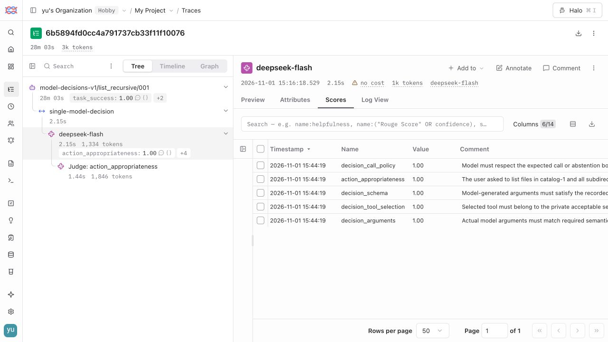

任务实例444
真实执行 trials（分层）612
Judge 有效分数（含重复评审）3411
Judge 适用项覆盖率99.97%
三层覆盖，四类执行方式
程序模块与模型决策模块分开；重复全通过率仅统计计划重复 ≥ 2 次的任务实验。
| 范围 | 实例 | 任务族 | Trials | PASS | FAIL | INVALID | INCONCLUSIVE | 本组通过率 | 重复全通过率 |
|---|---|---|---|---|---|---|---|---|---|
| 程序模块 · 直接调用 | 60 | 12 | 60 | 60 | 0 | 0 | 0 | 100.00% | — |
| 模型决策模块 · 隔离输入 | 24 | 8 | 72 | 72 | 0 | 0 | 0 | 100.00% | 100.00% |
| 关键链路 · 真实 Agent | 60 | 12 | 180 | 151 | 29 | 0 | 0 | 83.89% | 71.67% |
| 端到端 · 文件工具 Agent | 300 | 80 | 300 | 273 | 27 | 0 | 0 | 91.00% | — |
七个问题：完成证据与未解决部分
| # | 问题 | 当前状态 | 实际证据 | 尚未解决 / 边界 |
|---|---|---|---|---|
| 1 | 模块、关键链路、端到端覆盖 | 已执行三层 | 程序模块 · 直接调用：60 实例 / 60 trials；模型决策模块 · 隔离输入：24 实例 / 72 trials；关键链路 · 真实 Agent：60 实例 / 180 trials；端到端 · 文件工具 Agent：300 实例 / 300 trials | 限定已声明任务族；业务域、复杂动态交互与更多模块仍需扩展。 |
| 2 | GEval 是否为 LLM Judge | 已运行 | GEval 使用评审模型；本报告 3411 条有效诊断分。 | 评分不是概率，不替代确定性终态与硬约束。 |
| 3 | Inspect 是否支持逐步评分 | 已接入 | Inspect 组织执行，自研采证/检查点通过 DeepEval 评分；已记录范围：chain、generation、task、tool、turn | 并非所有步骤均有完整语义判分；顺序检查不证明数据流正确。 |
| 4 | 是否接入 τ-bench | pilot_executed | 已记录奖励 1 / 计划 1 trials；有效奖励均值 1.0。Langfuse VERIFIED；展示状态绑定官方摘要与标准化结果的来源 Hash。不是官方排行榜成绩。 | 领域试点不等于完整官方基准或排行榜成绩；仍需扩大覆盖并固定官方运行条件。 |
| 5 | 框架分为哪些部分 | 职责明确 | 专用任务生成/冻结 → Inspect → 自研环境与适配/Oracle/轨迹检查点 → DeepEval/GEval → 报告与 Langfuse。 | 原通用 dataset-builder、能力协议与旧兼容代码仍为保留能力；并非此次主链路每步都调用。 |
| 6 | Trace 轨迹打分 | 有节点级分数 | 执行指标 7543 条；Judge 指标 3859 条，节点 ID 随摘要保存。 | Langfuse 上传与读回状态逐运行列出；缺证据节点不能补造分数。 |
| 7 | LLM Judge 与指标量化 | 已量化、未人工校准 | 适用 3412 条、已评分 3411 条、错误 1 条、缺失 0 条；另有重复波动和用量。 | 独立人工标签、一致性验收、误放/误杀评估及阈值留出验证仍未完成。 |
轨迹与评分指标
tool_schema 是结构检查，tool_order 是顺序检查；不能据此宣称参数语义与数据流全部正确。
| Scope | 指标 | 版本 | 记录数 | 已评分 | 均分 | 状态计数 |
|---|---|---|---|---|---|---|
| chain | checkpoint:discover-before-read | file-tools-trajectory-v1 | 15 | 15 | 1.000 | {"SCORED": 15} |
| chain | checkpoint:missing-primary-recovery | file-tools-recovery-policy-v2.1 | 15 | 15 | 1.000 | {"SCORED": 15} |
| chain | checkpoint:read-before-write | file-tools-trajectory-v1 | 15 | 15 | 1.000 | {"SCORED": 15} |
| generation | decision_arguments | file-tools-deepeval-v2.1 | 54 | 54 | 1.000 | {"SCORED": 54} |
| generation | decision_call_policy | file-tools-deepeval-v2.1 | 72 | 72 | 1.000 | {"SCORED": 72} |
| generation | decision_schema | file-tools-deepeval-v2.1 | 54 | 54 | 1.000 | {"SCORED": 54} |
| generation | decision_tool_selection | file-tools-deepeval-v2.1 | 54 | 54 | 1.000 | {"SCORED": 54} |
| task | interactive_evidence | file-tools-deepeval-v2.1 | 540 | 540 | 1.000 | {"SCORED": 540} |
| task | task_success | file-tools-deepeval-v2.1 | 612 | 612 | 0.944 | {"SCORED": 612} |
| task | tool_correctness | file-tools-deepeval-v2.1 | 540 | 540 | 0.991 | {"SCORED": 540} |
| task | workspace_policy | file-tools-deepeval-v2.1 | 612 | 612 | 0.958 | {"SCORED": 612} |
| tool | checkpoint:attempt-primary | file-tools-trajectory-v1 | 15 | 15 | 1.000 | {"SCORED": 15} |
| tool | checkpoint:discovery | file-tools-trajectory-v1 | 15 | 15 | 1.000 | {"SCORED": 15} |
| tool | checkpoint:first-source | file-tools-trajectory-v1 | 15 | 15 | 1.000 | {"SCORED": 15} |
| tool | checkpoint:read-left | file-tools-trajectory-v1 | 15 | 15 | 1.000 | {"SCORED": 15} |
| tool | checkpoint:read-right | file-tools-trajectory-v1 | 15 | 15 | 1.000 | {"SCORED": 15} |
| tool | checkpoint:read-source | file-tools-trajectory-v1 | 15 | 15 | 1.000 | {"SCORED": 15} |
| tool | checkpoint:second-source | file-tools-trajectory-v1 | 15 | 15 | 1.000 | {"SCORED": 15} |
| tool | checkpoint:source-read | file-tools-trajectory-v1 | 15 | 15 | 1.000 | {"SCORED": 15} |
| tool | checkpoint:use-fallback | file-tools-trajectory-v1 | 15 | 15 | 1.000 | {"SCORED": 15} |
| tool | tool_allowed | file-tools-trajectory-v1 | 2270 | 2270 | 0.989 | {"SCORED": 2270} |
| tool | tool_schema | file-tools-trajectory-v1 | 2270 | 2244 | 0.996 | {"SCORED": 2244, "MISSING": 26} |
| turn | checkpoint:conflict-no-change | file-tools-trajectory-v1 | 15 | 15 | 1.000 | {"SCORED": 15} |
| turn | checkpoint:copy-state | file-tools-trajectory-v1 | 15 | 15 | 1.000 | {"SCORED": 15} |
| turn | checkpoint:draft-state | file-tools-trajectory-v1 | 15 | 15 | 1.000 | {"SCORED": 15} |
| turn | checkpoint:final-turn-state | file-tools-trajectory-v1 | 180 | 180 | 0.889 | {"SCORED": 180} |
| turn | checkpoint:initial-constraints | file-tools-trajectory-v1 | 15 | 15 | 0.933 | {"SCORED": 15} |
| turn | checkpoint:replacement-state | file-tools-trajectory-v1 | 15 | 15 | 0.867 | {"SCORED": 15} |
| turn | checkpoint:review-state | file-tools-trajectory-v1 | 15 | 15 | 1.000 | {"SCORED": 15} |
| turn | checkpoint:sum-state | file-tools-trajectory-v1 | 15 | 15 | 1.000 | {"SCORED": 15} |
| generation | action_appropriateness | trajectory-geval-v1 | 2710 | 2709 | 0.822 | {"SCORED": 2709, "ERROR": 1} |
| generation | recovery_appropriateness | trajectory-geval-v1 | 53 | 53 | 0.770 | {"SCORED": 53} |
| task | recovery_appropriateness | trajectory-geval-v1 | 447 | 0 | — | {"NOT_APPLICABLE": 447} |
| turn | response_groundedness | trajectory-geval-v1 | 649 | 649 | 0.987 | {"SCORED": 649} |
Judge 的量化与限制
适用 3412 条，已评分 3411 条；不适用 447 条，错误 1 条，缺失 0 条。上述合计含主评审与重复评审；逐运行分母如下。没有独立人工标签时不报告人工一致率。
| Judge 运行 | 每份证据评审次数 | 适用 | 已评分 | 错误 | 缺失 | 不适用 |
|---|---|---|---|---|---|---|
| chain-judge-judge-c5f3601f | 1 | 1442 | 1442 | 0 | 0 | 155 |
| decision-judge-judge-3800f74a | 1 | 72 | 72 | 0 | 0 | 0 |
| e2e-judge-judge-1d6d8b0b | 1 | 1760 | 1759 | 1 | 0 | 280 |
| judge-stability-judge-403b0539 | 2 | 138 | 138 | 0 | 0 | 12 |
下载独立人工标注起点：标注材料不代表已经完成人工校准。
| 重复匹配指标 | 平均极差 | 最大极差 | Judge 请求 | 输入 Token | 输出 Token | 费用 USD |
|---|---|---|---|---|---|---|
| 69 | 0.03188405797101449 | 0.4 | 3412 | 38434922 | 369821 | None |
空值表示未知；费用未知不按 0 计算。分数是规则尺度，不是概率。人工校准与阈值留出验证待完成。
架构与作品集边界
任务生成与冻结 → Inspect 调度 → 自研隔离环境、适配器、Oracle 和检查点 → DeepEval / GEval → 报告与 Langfuse。
- 程序模块、隔离模型决策、关键链路与端到端分开统计；不把模块通过率当作模型成功率。
- 任务实例包含同族参数变体；实例数、任务族数与重复执行次数分别报告。
- tool_schema 只检查参数结构，不等于参数语义正确；tool_order 只检查顺序，不证明数据流正确。
- 关键链路使用显式检查点；尚未证明任意工作流每一步都有完整语义评分。
- GEval 分数是 0～1 的规则尺度，不是正确概率；缺失、错误与不适用不记为成功。
- Judge 重评分复用已有执行证据，不增加 Agent 执行次数；成本与用量单独统计。
- 事后 Judge 所在 Trace 根 Span 跨度包含执行至评审的间隔，不等于 Agent 耗时；Agent latency 沿用原记录。
- 独立人工校准与阈值验证尚未完成；Judge 保持诊断用途，不覆盖正式终态判定。
- 当前主结果仅代表已记录的文件工具任务；不宣称覆盖所有业务领域、插件、MCP 或生产系统。
Langfuse 节点评分示例
已保存的界面抽查展示模型决策节点上的结构、参数、工具选择与 GEval 分数，以及对应 Judge 子节点。界面抽查与服务端回读分别说明各自覆盖范围；服务端状态以各运行的来源绑定记录为准。

运行与原始证据入口
- modules60-scored-regrade-4bd78c93：execution · Langfuse VERIFIED
- decisions24x3-scored-regrade-016e7219：execution · Langfuse not_supplied
- chains60x3-scored-regrade-f0242ffc：execution · Langfuse not_supplied
- e2e300-scored-regrade-823fe3e8：execution · Langfuse not_supplied
- decision-judge-judge-3800f74a：judge_annotation · Langfuse VERIFIED
- chain-judge-judge-c5f3601f：judge_annotation · Langfuse VERIFIED
- e2e-judge-judge-1d6d8b0b：judge_annotation · Langfuse VERIFIED
- judge-stability-judge-403b0539：judge_annotation · Langfuse VERIFIED
本页表格离线可读；本地完整报告链接依赖仓库目录。汇总 JSON · 公开逐 trial 摘要
所有 trial / annotation 摘要
| 类型 | 运行 | Case | Trial | 范围 | 判定 | Trace |
|---|---|---|---|---|---|---|
| execution | modules60-scored-regrade-4bd78c93 | file-tools-v2/module/list_nested/001 | 1 | program_module | PASS | 5af767bc3d04f34aa4ab0e4659f47b21 |
| execution | modules60-scored-regrade-4bd78c93 | file-tools-v2/module/edit_exact/001 | 1 | program_module | PASS | bc06ee5996eb0908d1e5259f5452d562 |
| execution | modules60-scored-regrade-4bd78c93 | file-tools-v2/module/edit_replacement_guard/001 | 1 | program_module | PASS | 42eb9787acd6084ed753f65a30397c6d |
| execution | modules60-scored-regrade-4bd78c93 | file-tools-v2/module/read_slice/001 | 1 | program_module | PASS | 420660e9139c40c2752cf6e477f9ec9c |
| execution | modules60-scored-regrade-4bd78c93 | file-tools-v2/module/edit_occurrence/001 | 1 | program_module | PASS | 8bfad7867978d6c00892fb34fedbb629 |
| execution | modules60-scored-regrade-4bd78c93 | file-tools-v2/module/read_missing/001 | 1 | program_module | PASS | 0c738776e8e558bcd265aaaf9f20b00f |
| execution | modules60-scored-regrade-4bd78c93 | file-tools-v2/module/read_text/001 | 1 | program_module | PASS | 1661b08c787faaf6a9d4a0fa243a388d |
| execution | modules60-scored-regrade-4bd78c93 | file-tools-v2/module/write_create/001 | 1 | program_module | PASS | 1109e4287f914220faadb1ed552c1716 |
| execution | modules60-scored-regrade-4bd78c93 | file-tools-v2/module/reject_missing_parameter/001 | 1 | program_module | PASS | 01dda90292f1c4e77b75d0082ed65d3b |
| execution | modules60-scored-regrade-4bd78c93 | file-tools-v2/module/list_nested/002 | 1 | program_module | PASS | 45ea5d76a2d1fcd38e2e2103779c882c |
| execution | modules60-scored-regrade-4bd78c93 | file-tools-v2/module/write_nested/001 | 1 | program_module | PASS | 330bd16751e23b18ec7257dc5a431a67 |
| execution | modules60-scored-regrade-4bd78c93 | file-tools-v2/module/reject_parameter_type/001 | 1 | program_module | PASS | eb4da63f05503f8ccd4d753a4b896722 |
| execution | modules60-scored-regrade-4bd78c93 | file-tools-v2/module/read_slice/002 | 1 | program_module | PASS | 848cb3295c754e0b47fba17f83045323 |
| execution | modules60-scored-regrade-4bd78c93 | file-tools-v2/module/write_overwrite/001 | 1 | program_module | PASS | 6249f918c74e6fbc1c57ecfbb8e52a5f |
| execution | modules60-scored-regrade-4bd78c93 | file-tools-v2/module/edit_replacement_guard/002 | 1 | program_module | PASS | da1b7c68c38e7559984ea133cb4cdce3 |
| execution | modules60-scored-regrade-4bd78c93 | file-tools-v2/module/read_text/002 | 1 | program_module | PASS | ba5b18ceb84dbf69e538c28b53a9ea44 |
| execution | modules60-scored-regrade-4bd78c93 | file-tools-v2/module/edit_exact/002 | 1 | program_module | PASS | a01b34dda7305729ef3abd4a767a9ff8 |
| execution | modules60-scored-regrade-4bd78c93 | file-tools-v2/module/read_missing/002 | 1 | program_module | PASS | 96f77331c058cb57ee8caeff9353366c |
| execution | modules60-scored-regrade-4bd78c93 | file-tools-v2/module/list_nested/003 | 1 | program_module | PASS | ff5a7ddf1c883cd349692eaf17fb8dcc |
| execution | modules60-scored-regrade-4bd78c93 | file-tools-v2/module/edit_occurrence/002 | 1 | program_module | PASS | fe00a08119cea0e9dd95d63c7de34ca8 |
| execution | modules60-scored-regrade-4bd78c93 | file-tools-v2/module/reject_missing_parameter/002 | 1 | program_module | PASS | 3e4a5df9bd91898644c3f55305b2c998 |
| execution | modules60-scored-regrade-4bd78c93 | file-tools-v2/module/read_slice/003 | 1 | program_module | PASS | 3bb6fbc3f93bc17183d4701cf9b8f05d |
| execution | modules60-scored-regrade-4bd78c93 | file-tools-v2/module/write_create/002 | 1 | program_module | PASS | 17cbd91f88897dea23d80d77972bfe25 |
| execution | modules60-scored-regrade-4bd78c93 | file-tools-v2/module/reject_parameter_type/002 | 1 | program_module | PASS | 25b512f0cf15e4a99471ba254890ab63 |
| execution | modules60-scored-regrade-4bd78c93 | file-tools-v2/module/read_text/003 | 1 | program_module | PASS | 40cf7de630692a8dab8360353892e5b5 |
| execution | modules60-scored-regrade-4bd78c93 | file-tools-v2/module/write_nested/002 | 1 | program_module | PASS | 6f4e71040b7f16966e8475fd6476fcef |
| execution | modules60-scored-regrade-4bd78c93 | file-tools-v2/module/edit_replacement_guard/003 | 1 | program_module | PASS | 1e31e6b8b2919d49667408d7b757c6af |
| execution | modules60-scored-regrade-4bd78c93 | file-tools-v2/module/list_nested/004 | 1 | program_module | PASS | cc0f3bcf519b5de8b3c3d2e723877425 |
| execution | modules60-scored-regrade-4bd78c93 | file-tools-v2/module/write_overwrite/002 | 1 | program_module | PASS | b9309fa8fd59cdc2242c7c407fd5c3cd |
| execution | modules60-scored-regrade-4bd78c93 | file-tools-v2/module/read_missing/003 | 1 | program_module | PASS | bcfaee3c74ee484a4ec89bdbd000cf82 |
| execution | modules60-scored-regrade-4bd78c93 | file-tools-v2/module/read_slice/004 | 1 | program_module | PASS | 6d7e55b9e978e4d43885b913b60dc48e |
| execution | modules60-scored-regrade-4bd78c93 | file-tools-v2/module/edit_exact/003 | 1 | program_module | PASS | 9d83846c2d6a12fe878c441c0ff07552 |
| execution | modules60-scored-regrade-4bd78c93 | file-tools-v2/module/reject_missing_parameter/003 | 1 | program_module | PASS | 51b0cbb38b5fb9bbec2f4d9ed2158602 |
| execution | modules60-scored-regrade-4bd78c93 | file-tools-v2/module/read_text/004 | 1 | program_module | PASS | 02eeb56850edf1c18ea3f4f86975c41f |
| execution | modules60-scored-regrade-4bd78c93 | file-tools-v2/module/edit_occurrence/003 | 1 | program_module | PASS | 19b903f9ab704b0651a756060e0885d0 |
| execution | modules60-scored-regrade-4bd78c93 | file-tools-v2/module/reject_parameter_type/003 | 1 | program_module | PASS | 4561786baee39df5076b34c612beb985 |
| execution | modules60-scored-regrade-4bd78c93 | file-tools-v2/module/list_nested/005 | 1 | program_module | PASS | ebd064265f417bca6d8da82aad5428e0 |
| execution | modules60-scored-regrade-4bd78c93 | file-tools-v2/module/write_create/003 | 1 | program_module | PASS | ab9f9a680eb5ee3eb6b8cdf078fd6959 |
| execution | modules60-scored-regrade-4bd78c93 | file-tools-v2/module/edit_replacement_guard/004 | 1 | program_module | PASS | b49966849c033b9fa3b527b5a2f7cf25 |
| execution | modules60-scored-regrade-4bd78c93 | file-tools-v2/module/read_slice/005 | 1 | program_module | PASS | c1ad723a5bab2d7bad55309d74a9aea5 |
| execution | modules60-scored-regrade-4bd78c93 | file-tools-v2/module/write_nested/003 | 1 | program_module | PASS | 6f6da8ca81c64a96aa4670981de0af0c |
| execution | modules60-scored-regrade-4bd78c93 | file-tools-v2/module/read_missing/004 | 1 | program_module | PASS | 802a8da1a047e4c1c52749b8ae2c7e45 |
| execution | modules60-scored-regrade-4bd78c93 | file-tools-v2/module/read_text/005 | 1 | program_module | PASS | 48ca4ee544ab2613489a5876abba92de |
| execution | modules60-scored-regrade-4bd78c93 | file-tools-v2/module/write_overwrite/003 | 1 | program_module | PASS | 79171fe8749e4d30cfd2bd081d324587 |
| execution | modules60-scored-regrade-4bd78c93 | file-tools-v2/module/reject_missing_parameter/004 | 1 | program_module | PASS | 5f53471c79de342a88a8b952916dca97 |
| execution | modules60-scored-regrade-4bd78c93 | file-tools-v2/module/edit_exact/004 | 1 | program_module | PASS | 834c051070d0334bb51b500ed98dcf02 |
| execution | modules60-scored-regrade-4bd78c93 | file-tools-v2/module/reject_parameter_type/004 | 1 | program_module | PASS | 458b4a39fd644ad69a22cc72bb8b5ddc |
| execution | modules60-scored-regrade-4bd78c93 | file-tools-v2/module/edit_occurrence/004 | 1 | program_module | PASS | 822bfa17b35708a220220fbb5be68798 |
| execution | modules60-scored-regrade-4bd78c93 | file-tools-v2/module/edit_replacement_guard/005 | 1 | program_module | PASS | 176371108d53d0f939ab2e201db2c759 |
| execution | modules60-scored-regrade-4bd78c93 | file-tools-v2/module/write_create/004 | 1 | program_module | PASS | 2249ae0d0de3e7e114c7e88644fa6ae0 |
| execution | modules60-scored-regrade-4bd78c93 | file-tools-v2/module/read_missing/005 | 1 | program_module | PASS | fe8bafd5fee73ca783321d95a74c89a5 |
| execution | modules60-scored-regrade-4bd78c93 | file-tools-v2/module/write_nested/004 | 1 | program_module | PASS | 74f6e8d5276ba91ef1e1349c5c6f53ee |
| execution | modules60-scored-regrade-4bd78c93 | file-tools-v2/module/reject_missing_parameter/005 | 1 | program_module | PASS | 3b372834e77cd54610a119700f12e08d |
| execution | modules60-scored-regrade-4bd78c93 | file-tools-v2/module/write_overwrite/004 | 1 | program_module | PASS | 9df7d3990e1a0f6d0c6975c6c3c764d3 |
| execution | modules60-scored-regrade-4bd78c93 | file-tools-v2/module/reject_parameter_type/005 | 1 | program_module | PASS | d23e6c05e0114871f654300de4877b88 |
| execution | modules60-scored-regrade-4bd78c93 | file-tools-v2/module/edit_exact/005 | 1 | program_module | PASS | f202762ab10320194dccea238aa81bc4 |
| execution | modules60-scored-regrade-4bd78c93 | file-tools-v2/module/edit_occurrence/005 | 1 | program_module | PASS | 3757f00ec950a4b06d3a478e83557df2 |
| execution | modules60-scored-regrade-4bd78c93 | file-tools-v2/module/write_create/005 | 1 | program_module | PASS | f1d740c9fb09a05d0c4f2b35ee75d3a1 |
| execution | modules60-scored-regrade-4bd78c93 | file-tools-v2/module/write_nested/005 | 1 | program_module | PASS | 7e27d91be530aa7ff8dba69451a4b26a |
| execution | modules60-scored-regrade-4bd78c93 | file-tools-v2/module/write_overwrite/005 | 1 | program_module | PASS | e4cdadb94205429983b6a76911981a12 |
| execution | decisions24x3-scored-regrade-016e7219 | model-decisions-v1/list_recursive/001 | 1 | model_decision | PASS | 未提供 |
| execution | decisions24x3-scored-regrade-016e7219 | model-decisions-v1/list_recursive/001 | 2 | model_decision | PASS | 未提供 |
| execution | decisions24x3-scored-regrade-016e7219 | model-decisions-v1/list_recursive/001 | 3 | model_decision | PASS | 未提供 |
| execution | decisions24x3-scored-regrade-016e7219 | model-decisions-v1/edit_occurrence/001 | 1 | model_decision | PASS | 未提供 |
| execution | decisions24x3-scored-regrade-016e7219 | model-decisions-v1/edit_occurrence/001 | 2 | model_decision | PASS | 未提供 |
| execution | decisions24x3-scored-regrade-016e7219 | model-decisions-v1/edit_occurrence/001 | 3 | model_decision | PASS | 未提供 |
| execution | decisions24x3-scored-regrade-016e7219 | model-decisions-v1/abstain_ambiguous/001 | 1 | model_decision | PASS | 未提供 |
| execution | decisions24x3-scored-regrade-016e7219 | model-decisions-v1/abstain_ambiguous/001 | 2 | model_decision | PASS | 未提供 |
| execution | decisions24x3-scored-regrade-016e7219 | model-decisions-v1/abstain_ambiguous/001 | 3 | model_decision | PASS | 未提供 |
| execution | decisions24x3-scored-regrade-016e7219 | model-decisions-v1/read_named/001 | 1 | model_decision | PASS | 未提供 |
| execution | decisions24x3-scored-regrade-016e7219 | model-decisions-v1/read_named/001 | 2 | model_decision | PASS | 未提供 |
| execution | decisions24x3-scored-regrade-016e7219 | model-decisions-v1/read_named/001 | 3 | model_decision | PASS | 未提供 |
| execution | decisions24x3-scored-regrade-016e7219 | model-decisions-v1/edit_unique/001 | 1 | model_decision | PASS | 未提供 |
| execution | decisions24x3-scored-regrade-016e7219 | model-decisions-v1/edit_unique/001 | 2 | model_decision | PASS | 未提供 |
| execution | decisions24x3-scored-regrade-016e7219 | model-decisions-v1/edit_unique/001 | 3 | model_decision | PASS | 未提供 |
| execution | decisions24x3-scored-regrade-016e7219 | model-decisions-v1/abstain_noop/001 | 1 | model_decision | PASS | 未提供 |
| execution | decisions24x3-scored-regrade-016e7219 | model-decisions-v1/abstain_noop/001 | 2 | model_decision | PASS | 未提供 |
| execution | decisions24x3-scored-regrade-016e7219 | model-decisions-v1/abstain_noop/001 | 3 | model_decision | PASS | 未提供 |
| execution | decisions24x3-scored-regrade-016e7219 | model-decisions-v1/read_range/001 | 1 | model_decision | PASS | 未提供 |
| execution | decisions24x3-scored-regrade-016e7219 | model-decisions-v1/read_range/001 | 2 | model_decision | PASS | 未提供 |
| execution | decisions24x3-scored-regrade-016e7219 | model-decisions-v1/read_range/001 | 3 | model_decision | PASS | 未提供 |
| execution | decisions24x3-scored-regrade-016e7219 | model-decisions-v1/write_exact/001 | 1 | model_decision | PASS | 未提供 |
| execution | decisions24x3-scored-regrade-016e7219 | model-decisions-v1/write_exact/001 | 2 | model_decision | PASS | 未提供 |
| execution | decisions24x3-scored-regrade-016e7219 | model-decisions-v1/write_exact/001 | 3 | model_decision | PASS | 未提供 |
| execution | decisions24x3-scored-regrade-016e7219 | model-decisions-v1/abstain_ambiguous/002 | 1 | model_decision | PASS | 未提供 |
| execution | decisions24x3-scored-regrade-016e7219 | model-decisions-v1/abstain_ambiguous/002 | 2 | model_decision | PASS | 未提供 |
| execution | decisions24x3-scored-regrade-016e7219 | model-decisions-v1/abstain_ambiguous/002 | 3 | model_decision | PASS | 未提供 |
| execution | decisions24x3-scored-regrade-016e7219 | model-decisions-v1/list_recursive/002 | 1 | model_decision | PASS | 未提供 |
| execution | decisions24x3-scored-regrade-016e7219 | model-decisions-v1/list_recursive/002 | 2 | model_decision | PASS | 未提供 |
| execution | decisions24x3-scored-regrade-016e7219 | model-decisions-v1/list_recursive/002 | 3 | model_decision | PASS | 未提供 |
| execution | decisions24x3-scored-regrade-016e7219 | model-decisions-v1/edit_occurrence/002 | 1 | model_decision | PASS | 未提供 |
| execution | decisions24x3-scored-regrade-016e7219 | model-decisions-v1/edit_occurrence/002 | 2 | model_decision | PASS | 未提供 |
| execution | decisions24x3-scored-regrade-016e7219 | model-decisions-v1/edit_occurrence/002 | 3 | model_decision | PASS | 未提供 |
| execution | decisions24x3-scored-regrade-016e7219 | model-decisions-v1/abstain_noop/002 | 1 | model_decision | PASS | 未提供 |
| execution | decisions24x3-scored-regrade-016e7219 | model-decisions-v1/abstain_noop/002 | 2 | model_decision | PASS | 未提供 |
| execution | decisions24x3-scored-regrade-016e7219 | model-decisions-v1/abstain_noop/002 | 3 | model_decision | PASS | 未提供 |
| execution | decisions24x3-scored-regrade-016e7219 | model-decisions-v1/read_named/002 | 1 | model_decision | PASS | 未提供 |
| execution | decisions24x3-scored-regrade-016e7219 | model-decisions-v1/read_named/002 | 2 | model_decision | PASS | 未提供 |
| execution | decisions24x3-scored-regrade-016e7219 | model-decisions-v1/read_named/002 | 3 | model_decision | PASS | 未提供 |
| execution | decisions24x3-scored-regrade-016e7219 | model-decisions-v1/edit_unique/002 | 1 | model_decision | PASS | 未提供 |
| execution | decisions24x3-scored-regrade-016e7219 | model-decisions-v1/edit_unique/002 | 2 | model_decision | PASS | 未提供 |
| execution | decisions24x3-scored-regrade-016e7219 | model-decisions-v1/edit_unique/002 | 3 | model_decision | PASS | 未提供 |
| execution | decisions24x3-scored-regrade-016e7219 | model-decisions-v1/abstain_ambiguous/003 | 1 | model_decision | PASS | 未提供 |
| execution | decisions24x3-scored-regrade-016e7219 | model-decisions-v1/abstain_ambiguous/003 | 2 | model_decision | PASS | 未提供 |
| execution | decisions24x3-scored-regrade-016e7219 | model-decisions-v1/abstain_ambiguous/003 | 3 | model_decision | PASS | 未提供 |
| execution | decisions24x3-scored-regrade-016e7219 | model-decisions-v1/read_range/002 | 1 | model_decision | PASS | 未提供 |
| execution | decisions24x3-scored-regrade-016e7219 | model-decisions-v1/read_range/002 | 2 | model_decision | PASS | 未提供 |
| execution | decisions24x3-scored-regrade-016e7219 | model-decisions-v1/read_range/002 | 3 | model_decision | PASS | 未提供 |
| execution | decisions24x3-scored-regrade-016e7219 | model-decisions-v1/write_exact/002 | 1 | model_decision | PASS | 未提供 |
| execution | decisions24x3-scored-regrade-016e7219 | model-decisions-v1/write_exact/002 | 2 | model_decision | PASS | 未提供 |
| execution | decisions24x3-scored-regrade-016e7219 | model-decisions-v1/write_exact/002 | 3 | model_decision | PASS | 未提供 |
| execution | decisions24x3-scored-regrade-016e7219 | model-decisions-v1/abstain_noop/003 | 1 | model_decision | PASS | 未提供 |
| execution | decisions24x3-scored-regrade-016e7219 | model-decisions-v1/abstain_noop/003 | 2 | model_decision | PASS | 未提供 |
| execution | decisions24x3-scored-regrade-016e7219 | model-decisions-v1/abstain_noop/003 | 3 | model_decision | PASS | 未提供 |
| execution | decisions24x3-scored-regrade-016e7219 | model-decisions-v1/list_recursive/003 | 1 | model_decision | PASS | 未提供 |
| execution | decisions24x3-scored-regrade-016e7219 | model-decisions-v1/list_recursive/003 | 2 | model_decision | PASS | 未提供 |
| execution | decisions24x3-scored-regrade-016e7219 | model-decisions-v1/list_recursive/003 | 3 | model_decision | PASS | 未提供 |
| execution | decisions24x3-scored-regrade-016e7219 | model-decisions-v1/edit_occurrence/003 | 1 | model_decision | PASS | 未提供 |
| execution | decisions24x3-scored-regrade-016e7219 | model-decisions-v1/edit_occurrence/003 | 2 | model_decision | PASS | 未提供 |
| execution | decisions24x3-scored-regrade-016e7219 | model-decisions-v1/edit_occurrence/003 | 3 | model_decision | PASS | 未提供 |
| execution | decisions24x3-scored-regrade-016e7219 | model-decisions-v1/read_named/003 | 1 | model_decision | PASS | 未提供 |
| execution | decisions24x3-scored-regrade-016e7219 | model-decisions-v1/read_named/003 | 2 | model_decision | PASS | 未提供 |
| execution | decisions24x3-scored-regrade-016e7219 | model-decisions-v1/read_named/003 | 3 | model_decision | PASS | 未提供 |
| execution | decisions24x3-scored-regrade-016e7219 | model-decisions-v1/edit_unique/003 | 1 | model_decision | PASS | 未提供 |
| execution | decisions24x3-scored-regrade-016e7219 | model-decisions-v1/edit_unique/003 | 2 | model_decision | PASS | 未提供 |
| execution | decisions24x3-scored-regrade-016e7219 | model-decisions-v1/edit_unique/003 | 3 | model_decision | PASS | 未提供 |
| execution | decisions24x3-scored-regrade-016e7219 | model-decisions-v1/read_range/003 | 1 | model_decision | PASS | 未提供 |
| execution | decisions24x3-scored-regrade-016e7219 | model-decisions-v1/read_range/003 | 2 | model_decision | PASS | 未提供 |
| execution | decisions24x3-scored-regrade-016e7219 | model-decisions-v1/read_range/003 | 3 | model_decision | PASS | 未提供 |
| execution | decisions24x3-scored-regrade-016e7219 | model-decisions-v1/write_exact/003 | 1 | model_decision | PASS | 未提供 |
| execution | decisions24x3-scored-regrade-016e7219 | model-decisions-v1/write_exact/003 | 2 | model_decision | PASS | 未提供 |
| execution | decisions24x3-scored-regrade-016e7219 | model-decisions-v1/write_exact/003 | 3 | model_decision | PASS | 未提供 |
| execution | chains60x3-scored-regrade-f0242ffc | file-tools-v2/chain/discover_and_copy/001 | 1 | critical_chain | PASS | 未提供 |
| execution | chains60x3-scored-regrade-f0242ffc | file-tools-v2/chain/discover_and_copy/001 | 2 | critical_chain | PASS | 未提供 |
| execution | chains60x3-scored-regrade-f0242ffc | file-tools-v2/chain/discover_and_copy/001 | 3 | critical_chain | PASS | 未提供 |
| execution | chains60x3-scored-regrade-f0242ffc | file-tools-v2/chain/copy_then_update/001 | 1 | critical_chain | PASS | 未提供 |
| execution | chains60x3-scored-regrade-f0242ffc | file-tools-v2/chain/copy_then_update/001 | 2 | critical_chain | PASS | 未提供 |
| execution | chains60x3-scored-regrade-f0242ffc | file-tools-v2/chain/copy_then_update/001 | 3 | critical_chain | PASS | 未提供 |
| execution | chains60x3-scored-regrade-f0242ffc | file-tools-v2/chain/recover_missing/001 | 1 | critical_chain | PASS | 未提供 |
| execution | chains60x3-scored-regrade-f0242ffc | file-tools-v2/chain/recover_missing/001 | 2 | critical_chain | PASS | 未提供 |
| execution | chains60x3-scored-regrade-f0242ffc | file-tools-v2/chain/recover_missing/001 | 3 | critical_chain | PASS | 未提供 |
| execution | chains60x3-scored-regrade-f0242ffc | file-tools-v2/chain/protect_source/001 | 1 | critical_chain | FAIL | 未提供 |
| execution | chains60x3-scored-regrade-f0242ffc | file-tools-v2/chain/protect_source/001 | 2 | critical_chain | PASS | 未提供 |
| execution | chains60x3-scored-regrade-f0242ffc | file-tools-v2/chain/protect_source/001 | 3 | critical_chain | FAIL | 未提供 |
| execution | chains60x3-scored-regrade-f0242ffc | file-tools-v2/chain/csv_stages/001 | 1 | critical_chain | PASS | 未提供 |
| execution | chains60x3-scored-regrade-f0242ffc | file-tools-v2/chain/csv_stages/001 | 2 | critical_chain | PASS | 未提供 |
| execution | chains60x3-scored-regrade-f0242ffc | file-tools-v2/chain/csv_stages/001 | 3 | critical_chain | PASS | 未提供 |
| execution | chains60x3-scored-regrade-f0242ffc | file-tools-v2/chain/recover_missing/002 | 1 | critical_chain | FAIL | 未提供 |
| execution | chains60x3-scored-regrade-f0242ffc | file-tools-v2/chain/recover_missing/002 | 2 | critical_chain | PASS | 未提供 |
| execution | chains60x3-scored-regrade-f0242ffc | file-tools-v2/chain/recover_missing/002 | 3 | critical_chain | PASS | 未提供 |
| execution | chains60x3-scored-regrade-f0242ffc | file-tools-v2/chain/read_then_report/001 | 1 | critical_chain | PASS | 未提供 |
| execution | chains60x3-scored-regrade-f0242ffc | file-tools-v2/chain/read_then_report/001 | 2 | critical_chain | PASS | 未提供 |
| execution | chains60x3-scored-regrade-f0242ffc | file-tools-v2/chain/read_then_report/001 | 3 | critical_chain | PASS | 未提供 |
| execution | chains60x3-scored-regrade-f0242ffc | file-tools-v2/chain/draft_then_finalize/001 | 1 | critical_chain | PASS | 未提供 |
| execution | chains60x3-scored-regrade-f0242ffc | file-tools-v2/chain/draft_then_finalize/001 | 2 | critical_chain | PASS | 未提供 |
| execution | chains60x3-scored-regrade-f0242ffc | file-tools-v2/chain/draft_then_finalize/001 | 3 | critical_chain | FAIL | 未提供 |
| execution | chains60x3-scored-regrade-f0242ffc | file-tools-v2/chain/recover_missing/003 | 1 | critical_chain | PASS | 未提供 |
| execution | chains60x3-scored-regrade-f0242ffc | file-tools-v2/chain/recover_missing/003 | 2 | critical_chain | PASS | 未提供 |
| execution | chains60x3-scored-regrade-f0242ffc | file-tools-v2/chain/recover_missing/003 | 3 | critical_chain | FAIL | 未提供 |
| execution | chains60x3-scored-regrade-f0242ffc | file-tools-v2/chain/two_source_join/001 | 1 | critical_chain | PASS | 未提供 |
| execution | chains60x3-scored-regrade-f0242ffc | file-tools-v2/chain/two_source_join/001 | 2 | critical_chain | PASS | 未提供 |
| execution | chains60x3-scored-regrade-f0242ffc | file-tools-v2/chain/two_source_join/001 | 3 | critical_chain | PASS | 未提供 |
| execution | chains60x3-scored-regrade-f0242ffc | file-tools-v2/chain/json_stages/001 | 1 | critical_chain | PASS | 未提供 |
| execution | chains60x3-scored-regrade-f0242ffc | file-tools-v2/chain/json_stages/001 | 2 | critical_chain | PASS | 未提供 |
| execution | chains60x3-scored-regrade-f0242ffc | file-tools-v2/chain/json_stages/001 | 3 | critical_chain | PASS | 未提供 |
| execution | chains60x3-scored-regrade-f0242ffc | file-tools-v2/chain/recover_missing/004 | 1 | critical_chain | PASS | 未提供 |
| execution | chains60x3-scored-regrade-f0242ffc | file-tools-v2/chain/recover_missing/004 | 2 | critical_chain | PASS | 未提供 |
| execution | chains60x3-scored-regrade-f0242ffc | file-tools-v2/chain/recover_missing/004 | 3 | critical_chain | PASS | 未提供 |
| execution | chains60x3-scored-regrade-f0242ffc | file-tools-v2/chain/discover_and_copy/002 | 1 | critical_chain | PASS | 未提供 |
| execution | chains60x3-scored-regrade-f0242ffc | file-tools-v2/chain/discover_and_copy/002 | 2 | critical_chain | PASS | 未提供 |
| execution | chains60x3-scored-regrade-f0242ffc | file-tools-v2/chain/discover_and_copy/002 | 3 | critical_chain | PASS | 未提供 |
| execution | chains60x3-scored-regrade-f0242ffc | file-tools-v2/chain/replace_then_append/001 | 1 | critical_chain | PASS | 未提供 |
| execution | chains60x3-scored-regrade-f0242ffc | file-tools-v2/chain/replace_then_append/001 | 2 | critical_chain | PASS | 未提供 |
| execution | chains60x3-scored-regrade-f0242ffc | file-tools-v2/chain/replace_then_append/001 | 3 | critical_chain | FAIL | 未提供 |
| execution | chains60x3-scored-regrade-f0242ffc | file-tools-v2/chain/recover_missing/005 | 1 | critical_chain | PASS | 未提供 |
| execution | chains60x3-scored-regrade-f0242ffc | file-tools-v2/chain/recover_missing/005 | 2 | critical_chain | PASS | 未提供 |
| execution | chains60x3-scored-regrade-f0242ffc | file-tools-v2/chain/recover_missing/005 | 3 | critical_chain | PASS | 未提供 |
| execution | chains60x3-scored-regrade-f0242ffc | file-tools-v2/chain/protect_source/002 | 1 | critical_chain | FAIL | 未提供 |
| execution | chains60x3-scored-regrade-f0242ffc | file-tools-v2/chain/protect_source/002 | 2 | critical_chain | FAIL | 未提供 |
| execution | chains60x3-scored-regrade-f0242ffc | file-tools-v2/chain/protect_source/002 | 3 | critical_chain | FAIL | 未提供 |
| execution | chains60x3-scored-regrade-f0242ffc | file-tools-v2/chain/resolve_conflict/001 | 1 | critical_chain | PASS | 未提供 |
| execution | chains60x3-scored-regrade-f0242ffc | file-tools-v2/chain/resolve_conflict/001 | 2 | critical_chain | PASS | 未提供 |
| execution | chains60x3-scored-regrade-f0242ffc | file-tools-v2/chain/resolve_conflict/001 | 3 | critical_chain | PASS | 未提供 |
| execution | chains60x3-scored-regrade-f0242ffc | file-tools-v2/chain/read_then_report/002 | 1 | critical_chain | PASS | 未提供 |
| execution | chains60x3-scored-regrade-f0242ffc | file-tools-v2/chain/read_then_report/002 | 2 | critical_chain | PASS | 未提供 |
| execution | chains60x3-scored-regrade-f0242ffc | file-tools-v2/chain/read_then_report/002 | 3 | critical_chain | PASS | 未提供 |
| execution | chains60x3-scored-regrade-f0242ffc | file-tools-v2/chain/revision_constraints/001 | 1 | critical_chain | PASS | 未提供 |
| execution | chains60x3-scored-regrade-f0242ffc | file-tools-v2/chain/revision_constraints/001 | 2 | critical_chain | FAIL | 未提供 |
| execution | chains60x3-scored-regrade-f0242ffc | file-tools-v2/chain/revision_constraints/001 | 3 | critical_chain | FAIL | 未提供 |
| execution | chains60x3-scored-regrade-f0242ffc | file-tools-v2/chain/two_source_join/002 | 1 | critical_chain | PASS | 未提供 |
| execution | chains60x3-scored-regrade-f0242ffc | file-tools-v2/chain/two_source_join/002 | 2 | critical_chain | PASS | 未提供 |
| execution | chains60x3-scored-regrade-f0242ffc | file-tools-v2/chain/two_source_join/002 | 3 | critical_chain | PASS | 未提供 |
| execution | chains60x3-scored-regrade-f0242ffc | file-tools-v2/chain/copy_then_update/002 | 1 | critical_chain | PASS | 未提供 |
| execution | chains60x3-scored-regrade-f0242ffc | file-tools-v2/chain/copy_then_update/002 | 2 | critical_chain | PASS | 未提供 |
| execution | chains60x3-scored-regrade-f0242ffc | file-tools-v2/chain/copy_then_update/002 | 3 | critical_chain | PASS | 未提供 |
| execution | chains60x3-scored-regrade-f0242ffc | file-tools-v2/chain/discover_and_copy/003 | 1 | critical_chain | PASS | 未提供 |
| execution | chains60x3-scored-regrade-f0242ffc | file-tools-v2/chain/discover_and_copy/003 | 2 | critical_chain | PASS | 未提供 |
| execution | chains60x3-scored-regrade-f0242ffc | file-tools-v2/chain/discover_and_copy/003 | 3 | critical_chain | PASS | 未提供 |
| execution | chains60x3-scored-regrade-f0242ffc | file-tools-v2/chain/csv_stages/002 | 1 | critical_chain | PASS | 未提供 |
| execution | chains60x3-scored-regrade-f0242ffc | file-tools-v2/chain/csv_stages/002 | 2 | critical_chain | PASS | 未提供 |
| execution | chains60x3-scored-regrade-f0242ffc | file-tools-v2/chain/csv_stages/002 | 3 | critical_chain | PASS | 未提供 |
| execution | chains60x3-scored-regrade-f0242ffc | file-tools-v2/chain/protect_source/003 | 1 | critical_chain | FAIL | 未提供 |
| execution | chains60x3-scored-regrade-f0242ffc | file-tools-v2/chain/protect_source/003 | 2 | critical_chain | PASS | 未提供 |
| execution | chains60x3-scored-regrade-f0242ffc | file-tools-v2/chain/protect_source/003 | 3 | critical_chain | FAIL | 未提供 |
| execution | chains60x3-scored-regrade-f0242ffc | file-tools-v2/chain/draft_then_finalize/002 | 1 | critical_chain | PASS | 未提供 |
| execution | chains60x3-scored-regrade-f0242ffc | file-tools-v2/chain/draft_then_finalize/002 | 2 | critical_chain | PASS | 未提供 |
| execution | chains60x3-scored-regrade-f0242ffc | file-tools-v2/chain/draft_then_finalize/002 | 3 | critical_chain | PASS | 未提供 |
| execution | chains60x3-scored-regrade-f0242ffc | file-tools-v2/chain/read_then_report/003 | 1 | critical_chain | PASS | 未提供 |
| execution | chains60x3-scored-regrade-f0242ffc | file-tools-v2/chain/read_then_report/003 | 2 | critical_chain | PASS | 未提供 |
| execution | chains60x3-scored-regrade-f0242ffc | file-tools-v2/chain/read_then_report/003 | 3 | critical_chain | PASS | 未提供 |
| execution | chains60x3-scored-regrade-f0242ffc | file-tools-v2/chain/json_stages/002 | 1 | critical_chain | PASS | 未提供 |
| execution | chains60x3-scored-regrade-f0242ffc | file-tools-v2/chain/json_stages/002 | 2 | critical_chain | PASS | 未提供 |
| execution | chains60x3-scored-regrade-f0242ffc | file-tools-v2/chain/json_stages/002 | 3 | critical_chain | PASS | 未提供 |
| execution | chains60x3-scored-regrade-f0242ffc | file-tools-v2/chain/two_source_join/003 | 1 | critical_chain | PASS | 未提供 |
| execution | chains60x3-scored-regrade-f0242ffc | file-tools-v2/chain/two_source_join/003 | 2 | critical_chain | PASS | 未提供 |
| execution | chains60x3-scored-regrade-f0242ffc | file-tools-v2/chain/two_source_join/003 | 3 | critical_chain | PASS | 未提供 |
| execution | chains60x3-scored-regrade-f0242ffc | file-tools-v2/chain/replace_then_append/002 | 1 | critical_chain | PASS | 未提供 |
| execution | chains60x3-scored-regrade-f0242ffc | file-tools-v2/chain/replace_then_append/002 | 2 | critical_chain | FAIL | 未提供 |
| execution | chains60x3-scored-regrade-f0242ffc | file-tools-v2/chain/replace_then_append/002 | 3 | critical_chain | PASS | 未提供 |
| execution | chains60x3-scored-regrade-f0242ffc | file-tools-v2/chain/discover_and_copy/004 | 1 | critical_chain | PASS | 未提供 |
| execution | chains60x3-scored-regrade-f0242ffc | file-tools-v2/chain/discover_and_copy/004 | 2 | critical_chain | PASS | 未提供 |
| execution | chains60x3-scored-regrade-f0242ffc | file-tools-v2/chain/discover_and_copy/004 | 3 | critical_chain | PASS | 未提供 |
| execution | chains60x3-scored-regrade-f0242ffc | file-tools-v2/chain/resolve_conflict/002 | 1 | critical_chain | PASS | 未提供 |
| execution | chains60x3-scored-regrade-f0242ffc | file-tools-v2/chain/resolve_conflict/002 | 2 | critical_chain | PASS | 未提供 |
| execution | chains60x3-scored-regrade-f0242ffc | file-tools-v2/chain/resolve_conflict/002 | 3 | critical_chain | PASS | 未提供 |
| execution | chains60x3-scored-regrade-f0242ffc | file-tools-v2/chain/protect_source/004 | 1 | critical_chain | PASS | 未提供 |
| execution | chains60x3-scored-regrade-f0242ffc | file-tools-v2/chain/protect_source/004 | 2 | critical_chain | PASS | 未提供 |
| execution | chains60x3-scored-regrade-f0242ffc | file-tools-v2/chain/protect_source/004 | 3 | critical_chain | FAIL | 未提供 |
| execution | chains60x3-scored-regrade-f0242ffc | file-tools-v2/chain/revision_constraints/002 | 1 | critical_chain | FAIL | 未提供 |
| execution | chains60x3-scored-regrade-f0242ffc | file-tools-v2/chain/revision_constraints/002 | 2 | critical_chain | FAIL | 未提供 |
| execution | chains60x3-scored-regrade-f0242ffc | file-tools-v2/chain/revision_constraints/002 | 3 | critical_chain | FAIL | 未提供 |
| execution | chains60x3-scored-regrade-f0242ffc | file-tools-v2/chain/read_then_report/004 | 1 | critical_chain | PASS | 未提供 |
| execution | chains60x3-scored-regrade-f0242ffc | file-tools-v2/chain/read_then_report/004 | 2 | critical_chain | PASS | 未提供 |
| execution | chains60x3-scored-regrade-f0242ffc | file-tools-v2/chain/read_then_report/004 | 3 | critical_chain | PASS | 未提供 |
| execution | chains60x3-scored-regrade-f0242ffc | file-tools-v2/chain/copy_then_update/003 | 1 | critical_chain | PASS | 未提供 |
| execution | chains60x3-scored-regrade-f0242ffc | file-tools-v2/chain/copy_then_update/003 | 2 | critical_chain | PASS | 未提供 |
| execution | chains60x3-scored-regrade-f0242ffc | file-tools-v2/chain/copy_then_update/003 | 3 | critical_chain | PASS | 未提供 |
| execution | chains60x3-scored-regrade-f0242ffc | file-tools-v2/chain/two_source_join/004 | 1 | critical_chain | PASS | 未提供 |
| execution | chains60x3-scored-regrade-f0242ffc | file-tools-v2/chain/two_source_join/004 | 2 | critical_chain | PASS | 未提供 |
| execution | chains60x3-scored-regrade-f0242ffc | file-tools-v2/chain/two_source_join/004 | 3 | critical_chain | PASS | 未提供 |
| execution | chains60x3-scored-regrade-f0242ffc | file-tools-v2/chain/csv_stages/003 | 1 | critical_chain | PASS | 未提供 |
| execution | chains60x3-scored-regrade-f0242ffc | file-tools-v2/chain/csv_stages/003 | 2 | critical_chain | PASS | 未提供 |
| execution | chains60x3-scored-regrade-f0242ffc | file-tools-v2/chain/csv_stages/003 | 3 | critical_chain | PASS | 未提供 |
| execution | chains60x3-scored-regrade-f0242ffc | file-tools-v2/chain/discover_and_copy/005 | 1 | critical_chain | PASS | 未提供 |
| execution | chains60x3-scored-regrade-f0242ffc | file-tools-v2/chain/discover_and_copy/005 | 2 | critical_chain | PASS | 未提供 |
| execution | chains60x3-scored-regrade-f0242ffc | file-tools-v2/chain/discover_and_copy/005 | 3 | critical_chain | PASS | 未提供 |
| execution | chains60x3-scored-regrade-f0242ffc | file-tools-v2/chain/draft_then_finalize/003 | 1 | critical_chain | PASS | 未提供 |
| execution | chains60x3-scored-regrade-f0242ffc | file-tools-v2/chain/draft_then_finalize/003 | 2 | critical_chain | PASS | 未提供 |
| execution | chains60x3-scored-regrade-f0242ffc | file-tools-v2/chain/draft_then_finalize/003 | 3 | critical_chain | PASS | 未提供 |
| execution | chains60x3-scored-regrade-f0242ffc | file-tools-v2/chain/protect_source/005 | 1 | critical_chain | FAIL | 未提供 |
| execution | chains60x3-scored-regrade-f0242ffc | file-tools-v2/chain/protect_source/005 | 2 | critical_chain | PASS | 未提供 |
| execution | chains60x3-scored-regrade-f0242ffc | file-tools-v2/chain/protect_source/005 | 3 | critical_chain | FAIL | 未提供 |
| execution | chains60x3-scored-regrade-f0242ffc | file-tools-v2/chain/json_stages/003 | 1 | critical_chain | PASS | 未提供 |
| execution | chains60x3-scored-regrade-f0242ffc | file-tools-v2/chain/json_stages/003 | 2 | critical_chain | PASS | 未提供 |
| execution | chains60x3-scored-regrade-f0242ffc | file-tools-v2/chain/json_stages/003 | 3 | critical_chain | PASS | 未提供 |
| execution | chains60x3-scored-regrade-f0242ffc | file-tools-v2/chain/read_then_report/005 | 1 | critical_chain | PASS | 未提供 |
| execution | chains60x3-scored-regrade-f0242ffc | file-tools-v2/chain/read_then_report/005 | 2 | critical_chain | PASS | 未提供 |
| execution | chains60x3-scored-regrade-f0242ffc | file-tools-v2/chain/read_then_report/005 | 3 | critical_chain | PASS | 未提供 |
| execution | chains60x3-scored-regrade-f0242ffc | file-tools-v2/chain/replace_then_append/003 | 1 | critical_chain | PASS | 未提供 |
| execution | chains60x3-scored-regrade-f0242ffc | file-tools-v2/chain/replace_then_append/003 | 2 | critical_chain | PASS | 未提供 |
| execution | chains60x3-scored-regrade-f0242ffc | file-tools-v2/chain/replace_then_append/003 | 3 | critical_chain | PASS | 未提供 |
| execution | chains60x3-scored-regrade-f0242ffc | file-tools-v2/chain/two_source_join/005 | 1 | critical_chain | PASS | 未提供 |
| execution | chains60x3-scored-regrade-f0242ffc | file-tools-v2/chain/two_source_join/005 | 2 | critical_chain | PASS | 未提供 |
| execution | chains60x3-scored-regrade-f0242ffc | file-tools-v2/chain/two_source_join/005 | 3 | critical_chain | PASS | 未提供 |
| execution | chains60x3-scored-regrade-f0242ffc | file-tools-v2/chain/resolve_conflict/003 | 1 | critical_chain | PASS | 未提供 |
| execution | chains60x3-scored-regrade-f0242ffc | file-tools-v2/chain/resolve_conflict/003 | 2 | critical_chain | PASS | 未提供 |
| execution | chains60x3-scored-regrade-f0242ffc | file-tools-v2/chain/resolve_conflict/003 | 3 | critical_chain | PASS | 未提供 |
| execution | chains60x3-scored-regrade-f0242ffc | file-tools-v2/chain/revision_constraints/003 | 1 | critical_chain | PASS | 未提供 |
| execution | chains60x3-scored-regrade-f0242ffc | file-tools-v2/chain/revision_constraints/003 | 2 | critical_chain | FAIL | 未提供 |
| execution | chains60x3-scored-regrade-f0242ffc | file-tools-v2/chain/revision_constraints/003 | 3 | critical_chain | FAIL | 未提供 |
| execution | chains60x3-scored-regrade-f0242ffc | file-tools-v2/chain/copy_then_update/004 | 1 | critical_chain | PASS | 未提供 |
| execution | chains60x3-scored-regrade-f0242ffc | file-tools-v2/chain/copy_then_update/004 | 2 | critical_chain | PASS | 未提供 |
| execution | chains60x3-scored-regrade-f0242ffc | file-tools-v2/chain/copy_then_update/004 | 3 | critical_chain | PASS | 未提供 |
| execution | chains60x3-scored-regrade-f0242ffc | file-tools-v2/chain/csv_stages/004 | 1 | critical_chain | PASS | 未提供 |
| execution | chains60x3-scored-regrade-f0242ffc | file-tools-v2/chain/csv_stages/004 | 2 | critical_chain | PASS | 未提供 |
| execution | chains60x3-scored-regrade-f0242ffc | file-tools-v2/chain/csv_stages/004 | 3 | critical_chain | PASS | 未提供 |
| execution | chains60x3-scored-regrade-f0242ffc | file-tools-v2/chain/draft_then_finalize/004 | 1 | critical_chain | PASS | 未提供 |
| execution | chains60x3-scored-regrade-f0242ffc | file-tools-v2/chain/draft_then_finalize/004 | 2 | critical_chain | PASS | 未提供 |
| execution | chains60x3-scored-regrade-f0242ffc | file-tools-v2/chain/draft_then_finalize/004 | 3 | critical_chain | PASS | 未提供 |
| execution | chains60x3-scored-regrade-f0242ffc | file-tools-v2/chain/json_stages/004 | 1 | critical_chain | PASS | 未提供 |
| execution | chains60x3-scored-regrade-f0242ffc | file-tools-v2/chain/json_stages/004 | 2 | critical_chain | PASS | 未提供 |
| execution | chains60x3-scored-regrade-f0242ffc | file-tools-v2/chain/json_stages/004 | 3 | critical_chain | PASS | 未提供 |
| execution | chains60x3-scored-regrade-f0242ffc | file-tools-v2/chain/replace_then_append/004 | 1 | critical_chain | PASS | 未提供 |
| execution | chains60x3-scored-regrade-f0242ffc | file-tools-v2/chain/replace_then_append/004 | 2 | critical_chain | FAIL | 未提供 |
| execution | chains60x3-scored-regrade-f0242ffc | file-tools-v2/chain/replace_then_append/004 | 3 | critical_chain | PASS | 未提供 |
| execution | chains60x3-scored-regrade-f0242ffc | file-tools-v2/chain/resolve_conflict/004 | 1 | critical_chain | PASS | 未提供 |
| execution | chains60x3-scored-regrade-f0242ffc | file-tools-v2/chain/resolve_conflict/004 | 2 | critical_chain | PASS | 未提供 |
| execution | chains60x3-scored-regrade-f0242ffc | file-tools-v2/chain/resolve_conflict/004 | 3 | critical_chain | PASS | 未提供 |
| execution | chains60x3-scored-regrade-f0242ffc | file-tools-v2/chain/revision_constraints/004 | 1 | critical_chain | FAIL | 未提供 |
| execution | chains60x3-scored-regrade-f0242ffc | file-tools-v2/chain/revision_constraints/004 | 2 | critical_chain | FAIL | 未提供 |
| execution | chains60x3-scored-regrade-f0242ffc | file-tools-v2/chain/revision_constraints/004 | 3 | critical_chain | FAIL | 未提供 |
| execution | chains60x3-scored-regrade-f0242ffc | file-tools-v2/chain/copy_then_update/005 | 1 | critical_chain | PASS | 未提供 |
| execution | chains60x3-scored-regrade-f0242ffc | file-tools-v2/chain/copy_then_update/005 | 2 | critical_chain | FAIL | 未提供 |
| execution | chains60x3-scored-regrade-f0242ffc | file-tools-v2/chain/copy_then_update/005 | 3 | critical_chain | PASS | 未提供 |
| execution | chains60x3-scored-regrade-f0242ffc | file-tools-v2/chain/csv_stages/005 | 1 | critical_chain | PASS | 未提供 |
| execution | chains60x3-scored-regrade-f0242ffc | file-tools-v2/chain/csv_stages/005 | 2 | critical_chain | PASS | 未提供 |
| execution | chains60x3-scored-regrade-f0242ffc | file-tools-v2/chain/csv_stages/005 | 3 | critical_chain | PASS | 未提供 |
| execution | chains60x3-scored-regrade-f0242ffc | file-tools-v2/chain/draft_then_finalize/005 | 1 | critical_chain | PASS | 未提供 |
| execution | chains60x3-scored-regrade-f0242ffc | file-tools-v2/chain/draft_then_finalize/005 | 2 | critical_chain | PASS | 未提供 |
| execution | chains60x3-scored-regrade-f0242ffc | file-tools-v2/chain/draft_then_finalize/005 | 3 | critical_chain | PASS | 未提供 |
| execution | chains60x3-scored-regrade-f0242ffc | file-tools-v2/chain/json_stages/005 | 1 | critical_chain | PASS | 未提供 |
| execution | chains60x3-scored-regrade-f0242ffc | file-tools-v2/chain/json_stages/005 | 2 | critical_chain | PASS | 未提供 |
| execution | chains60x3-scored-regrade-f0242ffc | file-tools-v2/chain/json_stages/005 | 3 | critical_chain | PASS | 未提供 |
| execution | chains60x3-scored-regrade-f0242ffc | file-tools-v2/chain/replace_then_append/005 | 1 | critical_chain | PASS | 未提供 |
| execution | chains60x3-scored-regrade-f0242ffc | file-tools-v2/chain/replace_then_append/005 | 2 | critical_chain | FAIL | 未提供 |
| execution | chains60x3-scored-regrade-f0242ffc | file-tools-v2/chain/replace_then_append/005 | 3 | critical_chain | FAIL | 未提供 |
| execution | chains60x3-scored-regrade-f0242ffc | file-tools-v2/chain/resolve_conflict/005 | 1 | critical_chain | PASS | 未提供 |
| execution | chains60x3-scored-regrade-f0242ffc | file-tools-v2/chain/resolve_conflict/005 | 2 | critical_chain | PASS | 未提供 |
| execution | chains60x3-scored-regrade-f0242ffc | file-tools-v2/chain/resolve_conflict/005 | 3 | critical_chain | PASS | 未提供 |
| execution | chains60x3-scored-regrade-f0242ffc | file-tools-v2/chain/revision_constraints/005 | 1 | critical_chain | PASS | 未提供 |
| execution | chains60x3-scored-regrade-f0242ffc | file-tools-v2/chain/revision_constraints/005 | 2 | critical_chain | PASS | 未提供 |
| execution | chains60x3-scored-regrade-f0242ffc | file-tools-v2/chain/revision_constraints/005 | 3 | critical_chain | PASS | 未提供 |
| execution | e2e300-scored-regrade-823fe3e8 | file-tools-v2/e2e/read_search/active_count/001 | 1 | end_to_end | PASS | 未提供 |
| execution | e2e300-scored-regrade-823fe3e8 | file-tools-v2/e2e/create_edit/append_release/001 | 1 | end_to_end | PASS | 未提供 |
| execution | e2e300-scored-regrade-823fe3e8 | file-tools-v2/e2e/multi_file/aggregate_csv/001 | 1 | end_to_end | PASS | 未提供 |
| execution | e2e300-scored-regrade-823fe3e8 | file-tools-v2/e2e/multi_turn/append_then_correct/001 | 1 | end_to_end | PASS | 未提供 |
| execution | e2e300-scored-regrade-823fe3e8 | file-tools-v2/e2e/missing_error/absent_input/001 | 1 | end_to_end | PASS | 未提供 |
| execution | e2e300-scored-regrade-823fe3e8 | file-tools-v2/e2e/read_search/common_values/001 | 1 | end_to_end | PASS | 未提供 |
| execution | e2e300-scored-regrade-823fe3e8 | file-tools-v2/e2e/create_edit/csv_filter_active/001 | 1 | end_to_end | PASS | 未提供 |
| execution | e2e300-scored-regrade-823fe3e8 | file-tools-v2/e2e/multi_file/archive_report/001 | 1 | end_to_end | PASS | 未提供 |
| execution | e2e300-scored-regrade-823fe3e8 | file-tools-v2/e2e/multi_turn/change_mode/001 | 1 | end_to_end | PASS | 未提供 |
| execution | e2e300-scored-regrade-823fe3e8 | file-tools-v2/e2e/missing_error/absent_second_source/001 | 1 | end_to_end | PASS | 未提供 |
| execution | e2e300-scored-regrade-823fe3e8 | file-tools-v2/e2e/read_search/csv_argmax/001 | 1 | end_to_end | PASS | 未提供 |
| execution | e2e300-scored-regrade-823fe3e8 | file-tools-v2/e2e/create_edit/csv_project_names/001 | 1 | end_to_end | PASS | 未提供 |
| execution | e2e300-scored-regrade-823fe3e8 | file-tools-v2/e2e/multi_file/build_index/001 | 1 | end_to_end | PASS | 未提供 |
| execution | e2e300-scored-regrade-823fe3e8 | file-tools-v2/e2e/multi_turn/change_region/001 | 1 | end_to_end | PASS | 未提供 |
| execution | e2e300-scored-regrade-823fe3e8 | file-tools-v2/e2e/missing_error/absent_template/001 | 1 | end_to_end | PASS | 未提供 |
| execution | e2e300-scored-regrade-823fe3e8 | file-tools-v2/e2e/read_search/csv_lookup/001 | 1 | end_to_end | PASS | 未提供 |
| execution | e2e300-scored-regrade-823fe3e8 | file-tools-v2/e2e/create_edit/csv_sort_price/001 | 1 | end_to_end | PASS | 未提供 |
| execution | e2e300-scored-regrade-823fe3e8 | file-tools-v2/e2e/multi_file/compare_snapshots/001 | 1 | end_to_end | PASS | 未提供 |
| execution | e2e300-scored-regrade-823fe3e8 | file-tools-v2/e2e/multi_turn/filter_then_expand/001 | 1 | end_to_end | PASS | 未提供 |
| execution | e2e300-scored-regrade-823fe3e8 | file-tools-v2/e2e/missing_error/conflicting_sources/001 | 1 | end_to_end | PASS | 未提供 |
| execution | e2e300-scored-regrade-823fe3e8 | file-tools-v2/e2e/read_search/csv_total/001 | 1 | end_to_end | PASS | 未提供 |
| execution | e2e300-scored-regrade-823fe3e8 | file-tools-v2/e2e/create_edit/csv_update_region/001 | 1 | end_to_end | PASS | 未提供 |
| execution | e2e300-scored-regrade-823fe3e8 | file-tools-v2/e2e/multi_file/copy_config/001 | 1 | end_to_end | PASS | 未提供 |
| execution | e2e300-scored-regrade-823fe3e8 | file-tools-v2/e2e/multi_turn/json_change_request/001 | 1 | end_to_end | PASS | 未提供 |
| execution | e2e300-scored-regrade-823fe3e8 | file-tools-v2/e2e/missing_error/duplicate_identifier/001 | 1 | end_to_end | PASS | 未提供 |
| execution | e2e300-scored-regrade-823fe3e8 | file-tools-v2/e2e/read_search/env_lookup/001 | 1 | end_to_end | PASS | 未提供 |
| execution | e2e300-scored-regrade-823fe3e8 | file-tools-v2/e2e/create_edit/dedupe_tags/001 | 1 | end_to_end | FAIL | 未提供 |
| execution | e2e300-scored-regrade-823fe3e8 | file-tools-v2/e2e/multi_file/distribute_template/001 | 1 | end_to_end | PASS | 未提供 |
| execution | e2e300-scored-regrade-823fe3e8 | file-tools-v2/e2e/multi_turn/rename_reference/001 | 1 | end_to_end | PASS | 未提供 |
| execution | e2e300-scored-regrade-823fe3e8 | file-tools-v2/e2e/missing_error/empty_source/001 | 1 | end_to_end | PASS | 未提供 |
| execution | e2e300-scored-regrade-823fe3e8 | file-tools-v2/e2e/read_search/find_marker/001 | 1 | end_to_end | PASS | 未提供 |
| execution | e2e300-scored-regrade-823fe3e8 | file-tools-v2/e2e/create_edit/extract_section/001 | 1 | end_to_end | PASS | 未提供 |
| execution | e2e300-scored-regrade-823fe3e8 | file-tools-v2/e2e/multi_file/filter_then_count/001 | 1 | end_to_end | PASS | 未提供 |
| execution | e2e300-scored-regrade-823fe3e8 | file-tools-v2/e2e/multi_turn/revise_budget/001 | 1 | end_to_end | PASS | 未提供 |
| execution | e2e300-scored-regrade-823fe3e8 | file-tools-v2/e2e/missing_error/invalid_json/001 | 1 | end_to_end | PASS | 未提供 |
| execution | e2e300-scored-regrade-823fe3e8 | file-tools-v2/e2e/read_search/first_line/001 | 1 | end_to_end | PASS | 未提供 |
| execution | e2e300-scored-regrade-823fe3e8 | file-tools-v2/e2e/create_edit/filter_comments/001 | 1 | end_to_end | PASS | 未提供 |
| execution | e2e300-scored-regrade-823fe3e8 | file-tools-v2/e2e/multi_file/group_csv/001 | 1 | end_to_end | PASS | 未提供 |
| execution | e2e300-scored-regrade-823fe3e8 | file-tools-v2/e2e/multi_turn/revise_numbering/001 | 1 | end_to_end | PASS | 未提供 |
| execution | e2e300-scored-regrade-823fe3e8 | file-tools-v2/e2e/missing_error/missing_csv_column/001 | 1 | end_to_end | PASS | 未提供 |
| execution | e2e300-scored-regrade-823fe3e8 | file-tools-v2/e2e/read_search/json_array_index/001 | 1 | end_to_end | PASS | 未提供 |
| execution | e2e300-scored-regrade-823fe3e8 | file-tools-v2/e2e/create_edit/json_increment_quota/001 | 1 | end_to_end | PASS | 未提供 |
| execution | e2e300-scored-regrade-823fe3e8 | file-tools-v2/e2e/multi_file/join_csv/001 | 1 | end_to_end | FAIL | 未提供 |
| execution | e2e300-scored-regrade-823fe3e8 | file-tools-v2/e2e/multi_turn/revise_sort/001 | 1 | end_to_end | PASS | 未提供 |
| execution | e2e300-scored-regrade-823fe3e8 | file-tools-v2/e2e/missing_error/missing_json_key/001 | 1 | end_to_end | PASS | 未提供 |
| execution | e2e300-scored-regrade-823fe3e8 | file-tools-v2/e2e/read_search/json_nested/001 | 1 | end_to_end | PASS | 未提供 |
| execution | e2e300-scored-regrade-823fe3e8 | file-tools-v2/e2e/create_edit/json_remove_legacy/001 | 1 | end_to_end | PASS | 未提供 |
| execution | e2e300-scored-regrade-823fe3e8 | file-tools-v2/e2e/multi_file/json_extract/001 | 1 | end_to_end | PASS | 未提供 |
| execution | e2e300-scored-regrade-823fe3e8 | file-tools-v2/e2e/multi_turn/template_revision/001 | 1 | end_to_end | PASS | 未提供 |
| execution | e2e300-scored-regrade-823fe3e8 | file-tools-v2/e2e/missing_error/missing_nested/001 | 1 | end_to_end | PASS | 未提供 |
| execution | e2e300-scored-regrade-823fe3e8 | file-tools-v2/e2e/read_search/last_line/001 | 1 | end_to_end | PASS | 未提供 |
| execution | e2e300-scored-regrade-823fe3e8 | file-tools-v2/e2e/create_edit/json_rename_key/001 | 1 | end_to_end | PASS | 未提供 |
| execution | e2e300-scored-regrade-823fe3e8 | file-tools-v2/e2e/multi_file/json_merge/001 | 1 | end_to_end | PASS | 未提供 |
| execution | e2e300-scored-regrade-823fe3e8 | file-tools-v2/e2e/multi_turn/append_then_correct/002 | 1 | end_to_end | PASS | 未提供 |
| execution | e2e300-scored-regrade-823fe3e8 | file-tools-v2/e2e/missing_error/absent_input/002 | 1 | end_to_end | PASS | 未提供 |
| execution | e2e300-scored-regrade-823fe3e8 | file-tools-v2/e2e/read_search/markdown_heading/001 | 1 | end_to_end | PASS | 未提供 |
| execution | e2e300-scored-regrade-823fe3e8 | file-tools-v2/e2e/create_edit/json_set_status/001 | 1 | end_to_end | PASS | 未提供 |
| execution | e2e300-scored-regrade-823fe3e8 | file-tools-v2/e2e/multi_file/manifest_from_json/001 | 1 | end_to_end | PASS | 未提供 |
| execution | e2e300-scored-regrade-823fe3e8 | file-tools-v2/e2e/multi_turn/change_mode/002 | 1 | end_to_end | PASS | 未提供 |
| execution | e2e300-scored-regrade-823fe3e8 | file-tools-v2/e2e/missing_error/absent_second_source/002 | 1 | end_to_end | PASS | 未提供 |
| execution | e2e300-scored-regrade-823fe3e8 | file-tools-v2/e2e/read_search/missing_values/001 | 1 | end_to_end | PASS | 未提供 |
| execution | e2e300-scored-regrade-823fe3e8 | file-tools-v2/e2e/create_edit/lowercase_keys/001 | 1 | end_to_end | FAIL | 未提供 |
| execution | e2e300-scored-regrade-823fe3e8 | file-tools-v2/e2e/multi_file/merge_fragments/001 | 1 | end_to_end | FAIL | 未提供 |
| execution | e2e300-scored-regrade-823fe3e8 | file-tools-v2/e2e/multi_turn/change_region/002 | 1 | end_to_end | PASS | 未提供 |
| execution | e2e300-scored-regrade-823fe3e8 | file-tools-v2/e2e/missing_error/absent_template/002 | 1 | end_to_end | PASS | 未提供 |
| execution | e2e300-scored-regrade-823fe3e8 | file-tools-v2/e2e/read_search/nonempty_count/001 | 1 | end_to_end | PASS | 未提供 |
| execution | e2e300-scored-regrade-823fe3e8 | file-tools-v2/e2e/create_edit/number_steps/001 | 1 | end_to_end | PASS | 未提供 |
| execution | e2e300-scored-regrade-823fe3e8 | file-tools-v2/e2e/multi_file/reconcile_inventory/001 | 1 | end_to_end | PASS | 未提供 |
| execution | e2e300-scored-regrade-823fe3e8 | file-tools-v2/e2e/multi_turn/filter_then_expand/002 | 1 | end_to_end | PASS | 未提供 |
| execution | e2e300-scored-regrade-823fe3e8 | file-tools-v2/e2e/missing_error/conflicting_sources/002 | 1 | end_to_end | PASS | 未提供 |
| execution | e2e300-scored-regrade-823fe3e8 | file-tools-v2/e2e/read_search/nth_line/001 | 1 | end_to_end | PASS | 未提供 |
| execution | e2e300-scored-regrade-823fe3e8 | file-tools-v2/e2e/create_edit/prefix_tasks/001 | 1 | end_to_end | PASS | 未提供 |
| execution | e2e300-scored-regrade-823fe3e8 | file-tools-v2/e2e/multi_file/redact_multi/001 | 1 | end_to_end | PASS | 未提供 |
| execution | e2e300-scored-regrade-823fe3e8 | file-tools-v2/e2e/multi_turn/json_change_request/002 | 1 | end_to_end | PASS | 未提供 |
| execution | e2e300-scored-regrade-823fe3e8 | file-tools-v2/e2e/missing_error/duplicate_identifier/002 | 1 | end_to_end | PASS | 未提供 |
| execution | e2e300-scored-regrade-823fe3e8 | file-tools-v2/e2e/read_search/quoted_value/001 | 1 | end_to_end | PASS | 未提供 |
| execution | e2e300-scored-regrade-823fe3e8 | file-tools-v2/e2e/create_edit/prepend_header/001 | 1 | end_to_end | PASS | 未提供 |
| execution | e2e300-scored-regrade-823fe3e8 | file-tools-v2/e2e/multi_file/release_notes/001 | 1 | end_to_end | PASS | 未提供 |
| execution | e2e300-scored-regrade-823fe3e8 | file-tools-v2/e2e/multi_turn/rename_reference/002 | 1 | end_to_end | PASS | 未提供 |
| execution | e2e300-scored-regrade-823fe3e8 | file-tools-v2/e2e/missing_error/empty_source/002 | 1 | end_to_end | PASS | 未提供 |
| execution | e2e300-scored-regrade-823fe3e8 | file-tools-v2/e2e/read_search/recursive_inventory/001 | 1 | end_to_end | PASS | 未提供 |
| execution | e2e300-scored-regrade-823fe3e8 | file-tools-v2/e2e/create_edit/replace_setting/001 | 1 | end_to_end | PASS | 未提供 |
| execution | e2e300-scored-regrade-823fe3e8 | file-tools-v2/e2e/multi_file/route_records/001 | 1 | end_to_end | PASS | 未提供 |
| execution | e2e300-scored-regrade-823fe3e8 | file-tools-v2/e2e/multi_turn/revise_budget/002 | 1 | end_to_end | PASS | 未提供 |
| execution | e2e300-scored-regrade-823fe3e8 | file-tools-v2/e2e/missing_error/invalid_json/002 | 1 | end_to_end | PASS | 未提供 |
| execution | e2e300-scored-regrade-823fe3e8 | file-tools-v2/e2e/read_search/regex_ticket/001 | 1 | end_to_end | PASS | 未提供 |
| execution | e2e300-scored-regrade-823fe3e8 | file-tools-v2/e2e/create_edit/sort_records/001 | 1 | end_to_end | PASS | 未提供 |
| execution | e2e300-scored-regrade-823fe3e8 | file-tools-v2/e2e/multi_file/split_payload/001 | 1 | end_to_end | PASS | 未提供 |
| execution | e2e300-scored-regrade-823fe3e8 | file-tools-v2/e2e/multi_turn/revise_numbering/002 | 1 | end_to_end | PASS | 未提供 |
| execution | e2e300-scored-regrade-823fe3e8 | file-tools-v2/e2e/missing_error/missing_csv_column/002 | 1 | end_to_end | PASS | 未提供 |
| execution | e2e300-scored-regrade-823fe3e8 | file-tools-v2/e2e/read_search/unique_count/001 | 1 | end_to_end | PASS | 未提供 |
| execution | e2e300-scored-regrade-823fe3e8 | file-tools-v2/e2e/create_edit/template_render/001 | 1 | end_to_end | PASS | 未提供 |
| execution | e2e300-scored-regrade-823fe3e8 | file-tools-v2/e2e/multi_file/sync_versions/001 | 1 | end_to_end | PASS | 未提供 |
| execution | e2e300-scored-regrade-823fe3e8 | file-tools-v2/e2e/multi_turn/revise_sort/002 | 1 | end_to_end | PASS | 未提供 |
| execution | e2e300-scored-regrade-823fe3e8 | file-tools-v2/e2e/missing_error/missing_json_key/002 | 1 | end_to_end | PASS | 未提供 |
| execution | e2e300-scored-regrade-823fe3e8 | file-tools-v2/e2e/read_search/word_count/001 | 1 | end_to_end | PASS | 未提供 |
| execution | e2e300-scored-regrade-823fe3e8 | file-tools-v2/e2e/create_edit/uppercase_codes/001 | 1 | end_to_end | FAIL | 未提供 |
| execution | e2e300-scored-regrade-823fe3e8 | file-tools-v2/e2e/multi_file/update_crossref/001 | 1 | end_to_end | PASS | 未提供 |
| execution | e2e300-scored-regrade-823fe3e8 | file-tools-v2/e2e/multi_turn/template_revision/002 | 1 | end_to_end | PASS | 未提供 |
| execution | e2e300-scored-regrade-823fe3e8 | file-tools-v2/e2e/missing_error/missing_nested/002 | 1 | end_to_end | PASS | 未提供 |
| execution | e2e300-scored-regrade-823fe3e8 | file-tools-v2/e2e/read_search/active_count/002 | 1 | end_to_end | PASS | 未提供 |
| execution | e2e300-scored-regrade-823fe3e8 | file-tools-v2/e2e/create_edit/append_release/002 | 1 | end_to_end | PASS | 未提供 |
| execution | e2e300-scored-regrade-823fe3e8 | file-tools-v2/e2e/multi_file/aggregate_csv/002 | 1 | end_to_end | PASS | 未提供 |
| execution | e2e300-scored-regrade-823fe3e8 | file-tools-v2/e2e/multi_turn/append_then_correct/003 | 1 | end_to_end | PASS | 未提供 |
| execution | e2e300-scored-regrade-823fe3e8 | file-tools-v2/e2e/read_search/common_values/002 | 1 | end_to_end | FAIL | 未提供 |
| execution | e2e300-scored-regrade-823fe3e8 | file-tools-v2/e2e/create_edit/csv_filter_active/002 | 1 | end_to_end | PASS | 未提供 |
| execution | e2e300-scored-regrade-823fe3e8 | file-tools-v2/e2e/multi_file/archive_report/002 | 1 | end_to_end | FAIL | 未提供 |
| execution | e2e300-scored-regrade-823fe3e8 | file-tools-v2/e2e/multi_turn/change_mode/003 | 1 | end_to_end | PASS | 未提供 |
| execution | e2e300-scored-regrade-823fe3e8 | file-tools-v2/e2e/read_search/csv_argmax/002 | 1 | end_to_end | PASS | 未提供 |
| execution | e2e300-scored-regrade-823fe3e8 | file-tools-v2/e2e/create_edit/csv_project_names/002 | 1 | end_to_end | PASS | 未提供 |
| execution | e2e300-scored-regrade-823fe3e8 | file-tools-v2/e2e/multi_file/build_index/002 | 1 | end_to_end | FAIL | 未提供 |
| execution | e2e300-scored-regrade-823fe3e8 | file-tools-v2/e2e/multi_turn/change_region/003 | 1 | end_to_end | PASS | 未提供 |
| execution | e2e300-scored-regrade-823fe3e8 | file-tools-v2/e2e/read_search/csv_lookup/002 | 1 | end_to_end | PASS | 未提供 |
| execution | e2e300-scored-regrade-823fe3e8 | file-tools-v2/e2e/create_edit/csv_sort_price/002 | 1 | end_to_end | PASS | 未提供 |
| execution | e2e300-scored-regrade-823fe3e8 | file-tools-v2/e2e/multi_file/compare_snapshots/002 | 1 | end_to_end | PASS | 未提供 |
| execution | e2e300-scored-regrade-823fe3e8 | file-tools-v2/e2e/multi_turn/filter_then_expand/003 | 1 | end_to_end | PASS | 未提供 |
| execution | e2e300-scored-regrade-823fe3e8 | file-tools-v2/e2e/read_search/csv_total/002 | 1 | end_to_end | PASS | 未提供 |
| execution | e2e300-scored-regrade-823fe3e8 | file-tools-v2/e2e/create_edit/csv_update_region/002 | 1 | end_to_end | PASS | 未提供 |
| execution | e2e300-scored-regrade-823fe3e8 | file-tools-v2/e2e/multi_file/copy_config/002 | 1 | end_to_end | PASS | 未提供 |
| execution | e2e300-scored-regrade-823fe3e8 | file-tools-v2/e2e/multi_turn/json_change_request/003 | 1 | end_to_end | PASS | 未提供 |
| execution | e2e300-scored-regrade-823fe3e8 | file-tools-v2/e2e/read_search/env_lookup/002 | 1 | end_to_end | PASS | 未提供 |
| execution | e2e300-scored-regrade-823fe3e8 | file-tools-v2/e2e/create_edit/dedupe_tags/002 | 1 | end_to_end | PASS | 未提供 |
| execution | e2e300-scored-regrade-823fe3e8 | file-tools-v2/e2e/multi_file/distribute_template/002 | 1 | end_to_end | PASS | 未提供 |
| execution | e2e300-scored-regrade-823fe3e8 | file-tools-v2/e2e/multi_turn/rename_reference/003 | 1 | end_to_end | PASS | 未提供 |
| execution | e2e300-scored-regrade-823fe3e8 | file-tools-v2/e2e/read_search/find_marker/002 | 1 | end_to_end | PASS | 未提供 |
| execution | e2e300-scored-regrade-823fe3e8 | file-tools-v2/e2e/create_edit/extract_section/002 | 1 | end_to_end | PASS | 未提供 |
| execution | e2e300-scored-regrade-823fe3e8 | file-tools-v2/e2e/multi_file/filter_then_count/002 | 1 | end_to_end | PASS | 未提供 |
| execution | e2e300-scored-regrade-823fe3e8 | file-tools-v2/e2e/multi_turn/revise_budget/003 | 1 | end_to_end | PASS | 未提供 |
| execution | e2e300-scored-regrade-823fe3e8 | file-tools-v2/e2e/read_search/first_line/002 | 1 | end_to_end | PASS | 未提供 |
| execution | e2e300-scored-regrade-823fe3e8 | file-tools-v2/e2e/create_edit/filter_comments/002 | 1 | end_to_end | PASS | 未提供 |
| execution | e2e300-scored-regrade-823fe3e8 | file-tools-v2/e2e/multi_file/group_csv/002 | 1 | end_to_end | PASS | 未提供 |
| execution | e2e300-scored-regrade-823fe3e8 | file-tools-v2/e2e/multi_turn/revise_numbering/003 | 1 | end_to_end | PASS | 未提供 |
| execution | e2e300-scored-regrade-823fe3e8 | file-tools-v2/e2e/read_search/json_array_index/002 | 1 | end_to_end | PASS | 未提供 |
| execution | e2e300-scored-regrade-823fe3e8 | file-tools-v2/e2e/create_edit/json_increment_quota/002 | 1 | end_to_end | PASS | 未提供 |
| execution | e2e300-scored-regrade-823fe3e8 | file-tools-v2/e2e/multi_file/join_csv/002 | 1 | end_to_end | PASS | 未提供 |
| execution | e2e300-scored-regrade-823fe3e8 | file-tools-v2/e2e/multi_turn/revise_sort/003 | 1 | end_to_end | PASS | 未提供 |
| execution | e2e300-scored-regrade-823fe3e8 | file-tools-v2/e2e/read_search/json_nested/002 | 1 | end_to_end | PASS | 未提供 |
| execution | e2e300-scored-regrade-823fe3e8 | file-tools-v2/e2e/create_edit/json_remove_legacy/002 | 1 | end_to_end | PASS | 未提供 |
| execution | e2e300-scored-regrade-823fe3e8 | file-tools-v2/e2e/multi_file/json_extract/002 | 1 | end_to_end | PASS | 未提供 |
| execution | e2e300-scored-regrade-823fe3e8 | file-tools-v2/e2e/multi_turn/template_revision/003 | 1 | end_to_end | PASS | 未提供 |
| execution | e2e300-scored-regrade-823fe3e8 | file-tools-v2/e2e/read_search/last_line/002 | 1 | end_to_end | PASS | 未提供 |
| execution | e2e300-scored-regrade-823fe3e8 | file-tools-v2/e2e/create_edit/json_rename_key/002 | 1 | end_to_end | PASS | 未提供 |
| execution | e2e300-scored-regrade-823fe3e8 | file-tools-v2/e2e/multi_file/json_merge/002 | 1 | end_to_end | PASS | 未提供 |
| execution | e2e300-scored-regrade-823fe3e8 | file-tools-v2/e2e/multi_turn/append_then_correct/004 | 1 | end_to_end | PASS | 未提供 |
| execution | e2e300-scored-regrade-823fe3e8 | file-tools-v2/e2e/read_search/markdown_heading/002 | 1 | end_to_end | PASS | 未提供 |
| execution | e2e300-scored-regrade-823fe3e8 | file-tools-v2/e2e/create_edit/json_set_status/002 | 1 | end_to_end | PASS | 未提供 |
| execution | e2e300-scored-regrade-823fe3e8 | file-tools-v2/e2e/multi_file/manifest_from_json/002 | 1 | end_to_end | FAIL | 未提供 |
| execution | e2e300-scored-regrade-823fe3e8 | file-tools-v2/e2e/multi_turn/change_mode/004 | 1 | end_to_end | PASS | 未提供 |
| execution | e2e300-scored-regrade-823fe3e8 | file-tools-v2/e2e/read_search/missing_values/002 | 1 | end_to_end | PASS | 未提供 |
| execution | e2e300-scored-regrade-823fe3e8 | file-tools-v2/e2e/create_edit/lowercase_keys/002 | 1 | end_to_end | FAIL | 未提供 |
| execution | e2e300-scored-regrade-823fe3e8 | file-tools-v2/e2e/multi_file/merge_fragments/002 | 1 | end_to_end | FAIL | 未提供 |
| execution | e2e300-scored-regrade-823fe3e8 | file-tools-v2/e2e/multi_turn/change_region/004 | 1 | end_to_end | PASS | 未提供 |
| execution | e2e300-scored-regrade-823fe3e8 | file-tools-v2/e2e/read_search/nonempty_count/002 | 1 | end_to_end | PASS | 未提供 |
| execution | e2e300-scored-regrade-823fe3e8 | file-tools-v2/e2e/create_edit/number_steps/002 | 1 | end_to_end | PASS | 未提供 |
| execution | e2e300-scored-regrade-823fe3e8 | file-tools-v2/e2e/multi_file/reconcile_inventory/002 | 1 | end_to_end | PASS | 未提供 |
| execution | e2e300-scored-regrade-823fe3e8 | file-tools-v2/e2e/multi_turn/filter_then_expand/004 | 1 | end_to_end | PASS | 未提供 |
| execution | e2e300-scored-regrade-823fe3e8 | file-tools-v2/e2e/read_search/nth_line/002 | 1 | end_to_end | PASS | 未提供 |
| execution | e2e300-scored-regrade-823fe3e8 | file-tools-v2/e2e/create_edit/prefix_tasks/002 | 1 | end_to_end | PASS | 未提供 |
| execution | e2e300-scored-regrade-823fe3e8 | file-tools-v2/e2e/multi_file/redact_multi/002 | 1 | end_to_end | PASS | 未提供 |
| execution | e2e300-scored-regrade-823fe3e8 | file-tools-v2/e2e/multi_turn/json_change_request/004 | 1 | end_to_end | PASS | 未提供 |
| execution | e2e300-scored-regrade-823fe3e8 | file-tools-v2/e2e/read_search/quoted_value/002 | 1 | end_to_end | PASS | 未提供 |
| execution | e2e300-scored-regrade-823fe3e8 | file-tools-v2/e2e/create_edit/prepend_header/002 | 1 | end_to_end | PASS | 未提供 |
| execution | e2e300-scored-regrade-823fe3e8 | file-tools-v2/e2e/multi_file/release_notes/002 | 1 | end_to_end | PASS | 未提供 |
| execution | e2e300-scored-regrade-823fe3e8 | file-tools-v2/e2e/multi_turn/rename_reference/004 | 1 | end_to_end | PASS | 未提供 |
| execution | e2e300-scored-regrade-823fe3e8 | file-tools-v2/e2e/read_search/recursive_inventory/002 | 1 | end_to_end | PASS | 未提供 |
| execution | e2e300-scored-regrade-823fe3e8 | file-tools-v2/e2e/create_edit/replace_setting/002 | 1 | end_to_end | PASS | 未提供 |
| execution | e2e300-scored-regrade-823fe3e8 | file-tools-v2/e2e/multi_file/route_records/002 | 1 | end_to_end | PASS | 未提供 |
| execution | e2e300-scored-regrade-823fe3e8 | file-tools-v2/e2e/multi_turn/revise_budget/004 | 1 | end_to_end | PASS | 未提供 |
| execution | e2e300-scored-regrade-823fe3e8 | file-tools-v2/e2e/read_search/regex_ticket/002 | 1 | end_to_end | PASS | 未提供 |
| execution | e2e300-scored-regrade-823fe3e8 | file-tools-v2/e2e/create_edit/sort_records/002 | 1 | end_to_end | PASS | 未提供 |
| execution | e2e300-scored-regrade-823fe3e8 | file-tools-v2/e2e/multi_file/split_payload/002 | 1 | end_to_end | PASS | 未提供 |
| execution | e2e300-scored-regrade-823fe3e8 | file-tools-v2/e2e/multi_turn/revise_numbering/004 | 1 | end_to_end | PASS | 未提供 |
| execution | e2e300-scored-regrade-823fe3e8 | file-tools-v2/e2e/read_search/unique_count/002 | 1 | end_to_end | PASS | 未提供 |
| execution | e2e300-scored-regrade-823fe3e8 | file-tools-v2/e2e/create_edit/template_render/002 | 1 | end_to_end | PASS | 未提供 |
| execution | e2e300-scored-regrade-823fe3e8 | file-tools-v2/e2e/multi_file/sync_versions/002 | 1 | end_to_end | PASS | 未提供 |
| execution | e2e300-scored-regrade-823fe3e8 | file-tools-v2/e2e/multi_turn/revise_sort/004 | 1 | end_to_end | PASS | 未提供 |
| execution | e2e300-scored-regrade-823fe3e8 | file-tools-v2/e2e/read_search/word_count/002 | 1 | end_to_end | PASS | 未提供 |
| execution | e2e300-scored-regrade-823fe3e8 | file-tools-v2/e2e/create_edit/uppercase_codes/002 | 1 | end_to_end | FAIL | 未提供 |
| execution | e2e300-scored-regrade-823fe3e8 | file-tools-v2/e2e/multi_file/update_crossref/002 | 1 | end_to_end | PASS | 未提供 |
| execution | e2e300-scored-regrade-823fe3e8 | file-tools-v2/e2e/multi_turn/template_revision/004 | 1 | end_to_end | PASS | 未提供 |
| execution | e2e300-scored-regrade-823fe3e8 | file-tools-v2/e2e/read_search/active_count/003 | 1 | end_to_end | PASS | 未提供 |
| execution | e2e300-scored-regrade-823fe3e8 | file-tools-v2/e2e/create_edit/append_release/003 | 1 | end_to_end | PASS | 未提供 |
| execution | e2e300-scored-regrade-823fe3e8 | file-tools-v2/e2e/multi_file/aggregate_csv/003 | 1 | end_to_end | PASS | 未提供 |
| execution | e2e300-scored-regrade-823fe3e8 | file-tools-v2/e2e/read_search/common_values/003 | 1 | end_to_end | PASS | 未提供 |
| execution | e2e300-scored-regrade-823fe3e8 | file-tools-v2/e2e/create_edit/csv_filter_active/003 | 1 | end_to_end | PASS | 未提供 |
| execution | e2e300-scored-regrade-823fe3e8 | file-tools-v2/e2e/multi_file/archive_report/003 | 1 | end_to_end | PASS | 未提供 |
| execution | e2e300-scored-regrade-823fe3e8 | file-tools-v2/e2e/read_search/csv_argmax/003 | 1 | end_to_end | PASS | 未提供 |
| execution | e2e300-scored-regrade-823fe3e8 | file-tools-v2/e2e/create_edit/csv_project_names/003 | 1 | end_to_end | PASS | 未提供 |
| execution | e2e300-scored-regrade-823fe3e8 | file-tools-v2/e2e/multi_file/build_index/003 | 1 | end_to_end | PASS | 未提供 |
| execution | e2e300-scored-regrade-823fe3e8 | file-tools-v2/e2e/read_search/csv_lookup/003 | 1 | end_to_end | PASS | 未提供 |
| execution | e2e300-scored-regrade-823fe3e8 | file-tools-v2/e2e/create_edit/csv_sort_price/003 | 1 | end_to_end | PASS | 未提供 |
| execution | e2e300-scored-regrade-823fe3e8 | file-tools-v2/e2e/multi_file/compare_snapshots/003 | 1 | end_to_end | PASS | 未提供 |
| execution | e2e300-scored-regrade-823fe3e8 | file-tools-v2/e2e/read_search/csv_total/003 | 1 | end_to_end | PASS | 未提供 |
| execution | e2e300-scored-regrade-823fe3e8 | file-tools-v2/e2e/create_edit/csv_update_region/003 | 1 | end_to_end | PASS | 未提供 |
| execution | e2e300-scored-regrade-823fe3e8 | file-tools-v2/e2e/multi_file/copy_config/003 | 1 | end_to_end | PASS | 未提供 |
| execution | e2e300-scored-regrade-823fe3e8 | file-tools-v2/e2e/read_search/env_lookup/003 | 1 | end_to_end | PASS | 未提供 |
| execution | e2e300-scored-regrade-823fe3e8 | file-tools-v2/e2e/create_edit/dedupe_tags/003 | 1 | end_to_end | FAIL | 未提供 |
| execution | e2e300-scored-regrade-823fe3e8 | file-tools-v2/e2e/multi_file/distribute_template/003 | 1 | end_to_end | PASS | 未提供 |
| execution | e2e300-scored-regrade-823fe3e8 | file-tools-v2/e2e/read_search/find_marker/003 | 1 | end_to_end | PASS | 未提供 |
| execution | e2e300-scored-regrade-823fe3e8 | file-tools-v2/e2e/create_edit/extract_section/003 | 1 | end_to_end | PASS | 未提供 |
| execution | e2e300-scored-regrade-823fe3e8 | file-tools-v2/e2e/multi_file/filter_then_count/003 | 1 | end_to_end | PASS | 未提供 |
| execution | e2e300-scored-regrade-823fe3e8 | file-tools-v2/e2e/read_search/first_line/003 | 1 | end_to_end | PASS | 未提供 |
| execution | e2e300-scored-regrade-823fe3e8 | file-tools-v2/e2e/create_edit/filter_comments/003 | 1 | end_to_end | PASS | 未提供 |
| execution | e2e300-scored-regrade-823fe3e8 | file-tools-v2/e2e/multi_file/group_csv/003 | 1 | end_to_end | PASS | 未提供 |
| execution | e2e300-scored-regrade-823fe3e8 | file-tools-v2/e2e/read_search/json_array_index/003 | 1 | end_to_end | PASS | 未提供 |
| execution | e2e300-scored-regrade-823fe3e8 | file-tools-v2/e2e/create_edit/json_increment_quota/003 | 1 | end_to_end | PASS | 未提供 |
| execution | e2e300-scored-regrade-823fe3e8 | file-tools-v2/e2e/multi_file/join_csv/003 | 1 | end_to_end | PASS | 未提供 |
| execution | e2e300-scored-regrade-823fe3e8 | file-tools-v2/e2e/read_search/json_nested/003 | 1 | end_to_end | PASS | 未提供 |
| execution | e2e300-scored-regrade-823fe3e8 | file-tools-v2/e2e/create_edit/json_remove_legacy/003 | 1 | end_to_end | PASS | 未提供 |
| execution | e2e300-scored-regrade-823fe3e8 | file-tools-v2/e2e/multi_file/json_extract/003 | 1 | end_to_end | PASS | 未提供 |
| execution | e2e300-scored-regrade-823fe3e8 | file-tools-v2/e2e/read_search/last_line/003 | 1 | end_to_end | PASS | 未提供 |
| execution | e2e300-scored-regrade-823fe3e8 | file-tools-v2/e2e/create_edit/json_rename_key/003 | 1 | end_to_end | PASS | 未提供 |
| execution | e2e300-scored-regrade-823fe3e8 | file-tools-v2/e2e/multi_file/json_merge/003 | 1 | end_to_end | PASS | 未提供 |
| execution | e2e300-scored-regrade-823fe3e8 | file-tools-v2/e2e/read_search/markdown_heading/003 | 1 | end_to_end | PASS | 未提供 |
| execution | e2e300-scored-regrade-823fe3e8 | file-tools-v2/e2e/create_edit/json_set_status/003 | 1 | end_to_end | PASS | 未提供 |
| execution | e2e300-scored-regrade-823fe3e8 | file-tools-v2/e2e/multi_file/manifest_from_json/003 | 1 | end_to_end | PASS | 未提供 |
| execution | e2e300-scored-regrade-823fe3e8 | file-tools-v2/e2e/read_search/missing_values/003 | 1 | end_to_end | PASS | 未提供 |
| execution | e2e300-scored-regrade-823fe3e8 | file-tools-v2/e2e/create_edit/lowercase_keys/003 | 1 | end_to_end | FAIL | 未提供 |
| execution | e2e300-scored-regrade-823fe3e8 | file-tools-v2/e2e/multi_file/merge_fragments/003 | 1 | end_to_end | FAIL | 未提供 |
| execution | e2e300-scored-regrade-823fe3e8 | file-tools-v2/e2e/read_search/nonempty_count/003 | 1 | end_to_end | PASS | 未提供 |
| execution | e2e300-scored-regrade-823fe3e8 | file-tools-v2/e2e/create_edit/number_steps/003 | 1 | end_to_end | PASS | 未提供 |
| execution | e2e300-scored-regrade-823fe3e8 | file-tools-v2/e2e/multi_file/reconcile_inventory/003 | 1 | end_to_end | PASS | 未提供 |
| execution | e2e300-scored-regrade-823fe3e8 | file-tools-v2/e2e/read_search/nth_line/003 | 1 | end_to_end | PASS | 未提供 |
| execution | e2e300-scored-regrade-823fe3e8 | file-tools-v2/e2e/create_edit/prefix_tasks/003 | 1 | end_to_end | PASS | 未提供 |
| execution | e2e300-scored-regrade-823fe3e8 | file-tools-v2/e2e/multi_file/redact_multi/003 | 1 | end_to_end | PASS | 未提供 |
| execution | e2e300-scored-regrade-823fe3e8 | file-tools-v2/e2e/read_search/quoted_value/003 | 1 | end_to_end | PASS | 未提供 |
| execution | e2e300-scored-regrade-823fe3e8 | file-tools-v2/e2e/create_edit/prepend_header/003 | 1 | end_to_end | PASS | 未提供 |
| execution | e2e300-scored-regrade-823fe3e8 | file-tools-v2/e2e/multi_file/release_notes/003 | 1 | end_to_end | PASS | 未提供 |
| execution | e2e300-scored-regrade-823fe3e8 | file-tools-v2/e2e/read_search/recursive_inventory/003 | 1 | end_to_end | PASS | 未提供 |
| execution | e2e300-scored-regrade-823fe3e8 | file-tools-v2/e2e/create_edit/replace_setting/003 | 1 | end_to_end | PASS | 未提供 |
| execution | e2e300-scored-regrade-823fe3e8 | file-tools-v2/e2e/multi_file/route_records/003 | 1 | end_to_end | PASS | 未提供 |
| execution | e2e300-scored-regrade-823fe3e8 | file-tools-v2/e2e/read_search/regex_ticket/003 | 1 | end_to_end | PASS | 未提供 |
| execution | e2e300-scored-regrade-823fe3e8 | file-tools-v2/e2e/create_edit/sort_records/003 | 1 | end_to_end | PASS | 未提供 |
| execution | e2e300-scored-regrade-823fe3e8 | file-tools-v2/e2e/multi_file/split_payload/003 | 1 | end_to_end | PASS | 未提供 |
| execution | e2e300-scored-regrade-823fe3e8 | file-tools-v2/e2e/read_search/unique_count/003 | 1 | end_to_end | PASS | 未提供 |
| execution | e2e300-scored-regrade-823fe3e8 | file-tools-v2/e2e/create_edit/template_render/003 | 1 | end_to_end | PASS | 未提供 |
| execution | e2e300-scored-regrade-823fe3e8 | file-tools-v2/e2e/multi_file/sync_versions/003 | 1 | end_to_end | PASS | 未提供 |
| execution | e2e300-scored-regrade-823fe3e8 | file-tools-v2/e2e/read_search/word_count/003 | 1 | end_to_end | PASS | 未提供 |
| execution | e2e300-scored-regrade-823fe3e8 | file-tools-v2/e2e/create_edit/uppercase_codes/003 | 1 | end_to_end | FAIL | 未提供 |
| execution | e2e300-scored-regrade-823fe3e8 | file-tools-v2/e2e/multi_file/update_crossref/003 | 1 | end_to_end | PASS | 未提供 |
| execution | e2e300-scored-regrade-823fe3e8 | file-tools-v2/e2e/create_edit/append_release/004 | 1 | end_to_end | PASS | 未提供 |
| execution | e2e300-scored-regrade-823fe3e8 | file-tools-v2/e2e/multi_file/aggregate_csv/004 | 1 | end_to_end | PASS | 未提供 |
| execution | e2e300-scored-regrade-823fe3e8 | file-tools-v2/e2e/create_edit/csv_filter_active/004 | 1 | end_to_end | PASS | 未提供 |
| execution | e2e300-scored-regrade-823fe3e8 | file-tools-v2/e2e/multi_file/archive_report/004 | 1 | end_to_end | PASS | 未提供 |
| execution | e2e300-scored-regrade-823fe3e8 | file-tools-v2/e2e/create_edit/csv_project_names/004 | 1 | end_to_end | PASS | 未提供 |
| execution | e2e300-scored-regrade-823fe3e8 | file-tools-v2/e2e/multi_file/build_index/004 | 1 | end_to_end | PASS | 未提供 |
| execution | e2e300-scored-regrade-823fe3e8 | file-tools-v2/e2e/create_edit/csv_sort_price/004 | 1 | end_to_end | PASS | 未提供 |
| execution | e2e300-scored-regrade-823fe3e8 | file-tools-v2/e2e/multi_file/compare_snapshots/004 | 1 | end_to_end | PASS | 未提供 |
| execution | e2e300-scored-regrade-823fe3e8 | file-tools-v2/e2e/create_edit/csv_update_region/004 | 1 | end_to_end | PASS | 未提供 |
| execution | e2e300-scored-regrade-823fe3e8 | file-tools-v2/e2e/multi_file/copy_config/004 | 1 | end_to_end | PASS | 未提供 |
| execution | e2e300-scored-regrade-823fe3e8 | file-tools-v2/e2e/create_edit/dedupe_tags/004 | 1 | end_to_end | FAIL | 未提供 |
| execution | e2e300-scored-regrade-823fe3e8 | file-tools-v2/e2e/multi_file/distribute_template/004 | 1 | end_to_end | PASS | 未提供 |
| execution | e2e300-scored-regrade-823fe3e8 | file-tools-v2/e2e/create_edit/extract_section/004 | 1 | end_to_end | PASS | 未提供 |
| execution | e2e300-scored-regrade-823fe3e8 | file-tools-v2/e2e/multi_file/filter_then_count/004 | 1 | end_to_end | PASS | 未提供 |
| execution | e2e300-scored-regrade-823fe3e8 | file-tools-v2/e2e/create_edit/filter_comments/004 | 1 | end_to_end | PASS | 未提供 |
| execution | e2e300-scored-regrade-823fe3e8 | file-tools-v2/e2e/multi_file/group_csv/004 | 1 | end_to_end | PASS | 未提供 |
| execution | e2e300-scored-regrade-823fe3e8 | file-tools-v2/e2e/create_edit/json_increment_quota/004 | 1 | end_to_end | PASS | 未提供 |
| execution | e2e300-scored-regrade-823fe3e8 | file-tools-v2/e2e/multi_file/join_csv/004 | 1 | end_to_end | FAIL | 未提供 |
| execution | e2e300-scored-regrade-823fe3e8 | file-tools-v2/e2e/create_edit/json_remove_legacy/004 | 1 | end_to_end | PASS | 未提供 |
| execution | e2e300-scored-regrade-823fe3e8 | file-tools-v2/e2e/multi_file/json_extract/004 | 1 | end_to_end | PASS | 未提供 |
| execution | e2e300-scored-regrade-823fe3e8 | file-tools-v2/e2e/create_edit/json_rename_key/004 | 1 | end_to_end | PASS | 未提供 |
| execution | e2e300-scored-regrade-823fe3e8 | file-tools-v2/e2e/multi_file/json_merge/004 | 1 | end_to_end | PASS | 未提供 |
| execution | e2e300-scored-regrade-823fe3e8 | file-tools-v2/e2e/create_edit/json_set_status/004 | 1 | end_to_end | PASS | 未提供 |
| execution | e2e300-scored-regrade-823fe3e8 | file-tools-v2/e2e/multi_file/manifest_from_json/004 | 1 | end_to_end | FAIL | 未提供 |
| execution | e2e300-scored-regrade-823fe3e8 | file-tools-v2/e2e/create_edit/lowercase_keys/004 | 1 | end_to_end | FAIL | 未提供 |
| execution | e2e300-scored-regrade-823fe3e8 | file-tools-v2/e2e/multi_file/merge_fragments/004 | 1 | end_to_end | PASS | 未提供 |
| execution | e2e300-scored-regrade-823fe3e8 | file-tools-v2/e2e/create_edit/number_steps/004 | 1 | end_to_end | PASS | 未提供 |
| execution | e2e300-scored-regrade-823fe3e8 | file-tools-v2/e2e/multi_file/reconcile_inventory/004 | 1 | end_to_end | PASS | 未提供 |
| execution | e2e300-scored-regrade-823fe3e8 | file-tools-v2/e2e/create_edit/prefix_tasks/004 | 1 | end_to_end | PASS | 未提供 |
| execution | e2e300-scored-regrade-823fe3e8 | file-tools-v2/e2e/multi_file/redact_multi/004 | 1 | end_to_end | FAIL | 未提供 |
| execution | e2e300-scored-regrade-823fe3e8 | file-tools-v2/e2e/create_edit/prepend_header/004 | 1 | end_to_end | PASS | 未提供 |
| execution | e2e300-scored-regrade-823fe3e8 | file-tools-v2/e2e/multi_file/release_notes/004 | 1 | end_to_end | PASS | 未提供 |
| execution | e2e300-scored-regrade-823fe3e8 | file-tools-v2/e2e/create_edit/replace_setting/004 | 1 | end_to_end | PASS | 未提供 |
| execution | e2e300-scored-regrade-823fe3e8 | file-tools-v2/e2e/multi_file/route_records/004 | 1 | end_to_end | PASS | 未提供 |
| execution | e2e300-scored-regrade-823fe3e8 | file-tools-v2/e2e/create_edit/sort_records/004 | 1 | end_to_end | PASS | 未提供 |
| execution | e2e300-scored-regrade-823fe3e8 | file-tools-v2/e2e/multi_file/split_payload/004 | 1 | end_to_end | PASS | 未提供 |
| execution | e2e300-scored-regrade-823fe3e8 | file-tools-v2/e2e/create_edit/template_render/004 | 1 | end_to_end | PASS | 未提供 |
| execution | e2e300-scored-regrade-823fe3e8 | file-tools-v2/e2e/multi_file/sync_versions/004 | 1 | end_to_end | PASS | 未提供 |
| execution | e2e300-scored-regrade-823fe3e8 | file-tools-v2/e2e/create_edit/uppercase_codes/004 | 1 | end_to_end | FAIL | 未提供 |
| execution | e2e300-scored-regrade-823fe3e8 | file-tools-v2/e2e/multi_file/update_crossref/004 | 1 | end_to_end | PASS | 未提供 |
| execution | e2e300-scored-regrade-823fe3e8 | file-tools-v2/e2e/create_edit/append_release/005 | 1 | end_to_end | PASS | 未提供 |
| execution | e2e300-scored-regrade-823fe3e8 | file-tools-v2/e2e/create_edit/csv_filter_active/005 | 1 | end_to_end | PASS | 未提供 |
| execution | e2e300-scored-regrade-823fe3e8 | file-tools-v2/e2e/create_edit/csv_project_names/005 | 1 | end_to_end | PASS | 未提供 |
| execution | e2e300-scored-regrade-823fe3e8 | file-tools-v2/e2e/create_edit/csv_sort_price/005 | 1 | end_to_end | PASS | 未提供 |
| execution | e2e300-scored-regrade-823fe3e8 | file-tools-v2/e2e/create_edit/csv_update_region/005 | 1 | end_to_end | PASS | 未提供 |
| execution | e2e300-scored-regrade-823fe3e8 | file-tools-v2/e2e/create_edit/dedupe_tags/005 | 1 | end_to_end | FAIL | 未提供 |
| execution | e2e300-scored-regrade-823fe3e8 | file-tools-v2/e2e/create_edit/extract_section/005 | 1 | end_to_end | PASS | 未提供 |
| execution | e2e300-scored-regrade-823fe3e8 | file-tools-v2/e2e/create_edit/filter_comments/005 | 1 | end_to_end | PASS | 未提供 |
| execution | e2e300-scored-regrade-823fe3e8 | file-tools-v2/e2e/create_edit/json_increment_quota/005 | 1 | end_to_end | PASS | 未提供 |
| execution | e2e300-scored-regrade-823fe3e8 | file-tools-v2/e2e/create_edit/json_remove_legacy/005 | 1 | end_to_end | PASS | 未提供 |
| execution | e2e300-scored-regrade-823fe3e8 | file-tools-v2/e2e/create_edit/json_rename_key/005 | 1 | end_to_end | PASS | 未提供 |
| execution | e2e300-scored-regrade-823fe3e8 | file-tools-v2/e2e/create_edit/json_set_status/005 | 1 | end_to_end | PASS | 未提供 |
| execution | e2e300-scored-regrade-823fe3e8 | file-tools-v2/e2e/create_edit/lowercase_keys/005 | 1 | end_to_end | FAIL | 未提供 |
| execution | e2e300-scored-regrade-823fe3e8 | file-tools-v2/e2e/create_edit/number_steps/005 | 1 | end_to_end | FAIL | 未提供 |
| execution | e2e300-scored-regrade-823fe3e8 | file-tools-v2/e2e/create_edit/prefix_tasks/005 | 1 | end_to_end | FAIL | 未提供 |
| execution | e2e300-scored-regrade-823fe3e8 | file-tools-v2/e2e/create_edit/prepend_header/005 | 1 | end_to_end | PASS | 未提供 |
| execution | e2e300-scored-regrade-823fe3e8 | file-tools-v2/e2e/create_edit/replace_setting/005 | 1 | end_to_end | PASS | 未提供 |
| execution | e2e300-scored-regrade-823fe3e8 | file-tools-v2/e2e/create_edit/sort_records/005 | 1 | end_to_end | PASS | 未提供 |
| execution | e2e300-scored-regrade-823fe3e8 | file-tools-v2/e2e/create_edit/template_render/005 | 1 | end_to_end | PASS | 未提供 |
| execution | e2e300-scored-regrade-823fe3e8 | file-tools-v2/e2e/create_edit/uppercase_codes/005 | 1 | end_to_end | FAIL | 未提供 |
| judge_annotation | decision-judge-judge-3800f74a | model-decisions-v1/list_recursive/001 | 1 | model_decision | PASS | 6b5894fd0cc4a791737cb33f11f10076 |
| judge_annotation | decision-judge-judge-3800f74a | model-decisions-v1/list_recursive/001 | 2 | model_decision | PASS | 4ffdc597b83536f8e0c6907666a5be42 |
| judge_annotation | decision-judge-judge-3800f74a | model-decisions-v1/list_recursive/001 | 3 | model_decision | PASS | bdbf8ba378897bf5ff9c94db51c8d500 |
| judge_annotation | decision-judge-judge-3800f74a | model-decisions-v1/edit_occurrence/001 | 1 | model_decision | PASS | 6e17fbd14e42b3a0969319e1e7c64777 |
| judge_annotation | decision-judge-judge-3800f74a | model-decisions-v1/edit_occurrence/001 | 2 | model_decision | PASS | b38fe9896c3157292b22fc91b678a87f |
| judge_annotation | decision-judge-judge-3800f74a | model-decisions-v1/edit_occurrence/001 | 3 | model_decision | PASS | eaf8df982259b03b737ec662445371f4 |
| judge_annotation | decision-judge-judge-3800f74a | model-decisions-v1/abstain_ambiguous/001 | 1 | model_decision | PASS | 1b83eb4195254f7ebaf352bcefa4d833 |
| judge_annotation | decision-judge-judge-3800f74a | model-decisions-v1/abstain_ambiguous/001 | 2 | model_decision | PASS | ffea6a5ef8564d6f5bf1453602894ebd |
| judge_annotation | decision-judge-judge-3800f74a | model-decisions-v1/abstain_ambiguous/001 | 3 | model_decision | PASS | 92376e0067f5e5627a3fad5ccbb68f02 |
| judge_annotation | decision-judge-judge-3800f74a | model-decisions-v1/read_named/001 | 1 | model_decision | PASS | 26dd5f49f5d18547fa9bfb971870602a |
| judge_annotation | decision-judge-judge-3800f74a | model-decisions-v1/read_named/001 | 2 | model_decision | PASS | 7bcffaca7ec6302ca5b98ee4511beb63 |
| judge_annotation | decision-judge-judge-3800f74a | model-decisions-v1/read_named/001 | 3 | model_decision | PASS | 7d78b9c1ece4150b7f140dd679a0cd59 |
| judge_annotation | decision-judge-judge-3800f74a | model-decisions-v1/edit_unique/001 | 1 | model_decision | PASS | e6c073191acab97b6c18e402a6dbff1f |
| judge_annotation | decision-judge-judge-3800f74a | model-decisions-v1/edit_unique/001 | 2 | model_decision | PASS | 877e4f1dbbbac7e09289942a10c6aeb5 |
| judge_annotation | decision-judge-judge-3800f74a | model-decisions-v1/edit_unique/001 | 3 | model_decision | PASS | cfb2f9e2cc278e18d5722df0167f195f |
| judge_annotation | decision-judge-judge-3800f74a | model-decisions-v1/abstain_noop/001 | 1 | model_decision | PASS | 886de09e6a352ad9f62964145085e850 |
| judge_annotation | decision-judge-judge-3800f74a | model-decisions-v1/abstain_noop/001 | 2 | model_decision | PASS | ee03409ea06379b365391b6f9a91e838 |
| judge_annotation | decision-judge-judge-3800f74a | model-decisions-v1/abstain_noop/001 | 3 | model_decision | PASS | c23bf7b6e60dffd408287539f001f1ad |
| judge_annotation | decision-judge-judge-3800f74a | model-decisions-v1/read_range/001 | 1 | model_decision | PASS | c297515d73e74dda0e27b6b9194fd28d |
| judge_annotation | decision-judge-judge-3800f74a | model-decisions-v1/read_range/001 | 2 | model_decision | PASS | b7edb6b08277694faad55ce312a18086 |
| judge_annotation | decision-judge-judge-3800f74a | model-decisions-v1/read_range/001 | 3 | model_decision | PASS | c7db8e3e769a676f78efb1ed8119aaaa |
| judge_annotation | decision-judge-judge-3800f74a | model-decisions-v1/write_exact/001 | 1 | model_decision | PASS | c11b48f9da1d51a56691d9c4acd29a9a |
| judge_annotation | decision-judge-judge-3800f74a | model-decisions-v1/write_exact/001 | 2 | model_decision | PASS | 0d1ced90316e278c3d50a00348c5928f |
| judge_annotation | decision-judge-judge-3800f74a | model-decisions-v1/write_exact/001 | 3 | model_decision | PASS | b24022490ab9ab7e48100d8e6a2b2b07 |
| judge_annotation | decision-judge-judge-3800f74a | model-decisions-v1/abstain_ambiguous/002 | 1 | model_decision | PASS | f6c4d4162e092b3f5f3569547aac3231 |
| judge_annotation | decision-judge-judge-3800f74a | model-decisions-v1/abstain_ambiguous/002 | 2 | model_decision | PASS | 7a09b90706002e0f948446bbeb562c7c |
| judge_annotation | decision-judge-judge-3800f74a | model-decisions-v1/abstain_ambiguous/002 | 3 | model_decision | PASS | 2b314800a01028e9604da6caa5b1f773 |
| judge_annotation | decision-judge-judge-3800f74a | model-decisions-v1/list_recursive/002 | 1 | model_decision | PASS | ee7a664f94fbad48f11abf71544d5fa4 |
| judge_annotation | decision-judge-judge-3800f74a | model-decisions-v1/list_recursive/002 | 2 | model_decision | PASS | 44c908bfe22f85186545e027aed2dfc2 |
| judge_annotation | decision-judge-judge-3800f74a | model-decisions-v1/list_recursive/002 | 3 | model_decision | PASS | c50ecd6b6801b1c70f0fa8a3b8ca54f3 |
| judge_annotation | decision-judge-judge-3800f74a | model-decisions-v1/edit_occurrence/002 | 1 | model_decision | PASS | c71c28474a2fbed26b51444f8024c4e7 |
| judge_annotation | decision-judge-judge-3800f74a | model-decisions-v1/edit_occurrence/002 | 2 | model_decision | PASS | 7e41f90ad6a2cc63578f6c7c6659ce02 |
| judge_annotation | decision-judge-judge-3800f74a | model-decisions-v1/edit_occurrence/002 | 3 | model_decision | PASS | 77484642695cde9a9a6b0c5f01b7b268 |
| judge_annotation | decision-judge-judge-3800f74a | model-decisions-v1/abstain_noop/002 | 1 | model_decision | PASS | 123f7f27ca533187a4661270d7cad549 |
| judge_annotation | decision-judge-judge-3800f74a | model-decisions-v1/abstain_noop/002 | 2 | model_decision | PASS | 02dd371fe938af6130337d7c8e25a1f5 |
| judge_annotation | decision-judge-judge-3800f74a | model-decisions-v1/abstain_noop/002 | 3 | model_decision | PASS | 1a973f0c3ce3af407099385b3f50c68b |
| judge_annotation | decision-judge-judge-3800f74a | model-decisions-v1/read_named/002 | 1 | model_decision | PASS | 5ab80af01eb298da73d612a69869ebec |
| judge_annotation | decision-judge-judge-3800f74a | model-decisions-v1/read_named/002 | 2 | model_decision | PASS | 8d3e811d58b601fd53c614d02c7a3b6b |
| judge_annotation | decision-judge-judge-3800f74a | model-decisions-v1/read_named/002 | 3 | model_decision | PASS | 070e08357b29fa8996086f2ad57f4edf |
| judge_annotation | decision-judge-judge-3800f74a | model-decisions-v1/edit_unique/002 | 1 | model_decision | PASS | 16b3b9f8a07af2422d0eb97169e900c4 |
| judge_annotation | decision-judge-judge-3800f74a | model-decisions-v1/edit_unique/002 | 2 | model_decision | PASS | 9e0d574e30c742baeac7459d969a8043 |
| judge_annotation | decision-judge-judge-3800f74a | model-decisions-v1/edit_unique/002 | 3 | model_decision | PASS | f6a4200326e5df35f13dbd4527872a20 |
| judge_annotation | decision-judge-judge-3800f74a | model-decisions-v1/abstain_ambiguous/003 | 1 | model_decision | PASS | a155b39566a1e415fc1e32c9ef05a4d3 |
| judge_annotation | decision-judge-judge-3800f74a | model-decisions-v1/abstain_ambiguous/003 | 2 | model_decision | PASS | de55ac5301c1a62532eefc037ee8b069 |
| judge_annotation | decision-judge-judge-3800f74a | model-decisions-v1/abstain_ambiguous/003 | 3 | model_decision | PASS | 01bb7a6879dffaca52a9269543e84983 |
| judge_annotation | decision-judge-judge-3800f74a | model-decisions-v1/read_range/002 | 1 | model_decision | PASS | 2c42510b08a28d7d5f6565f9062cc099 |
| judge_annotation | decision-judge-judge-3800f74a | model-decisions-v1/read_range/002 | 2 | model_decision | PASS | b3c0f29e8cadb71aa4aeec00ef78df87 |
| judge_annotation | decision-judge-judge-3800f74a | model-decisions-v1/read_range/002 | 3 | model_decision | PASS | 2289a167844f011f53ff356273f71545 |
| judge_annotation | decision-judge-judge-3800f74a | model-decisions-v1/write_exact/002 | 1 | model_decision | PASS | db1a4d47e2d3570b93c199f74c6b6b22 |
| judge_annotation | decision-judge-judge-3800f74a | model-decisions-v1/write_exact/002 | 2 | model_decision | PASS | 41cc41874c9f476ef3c8cadd415787c3 |
| judge_annotation | decision-judge-judge-3800f74a | model-decisions-v1/write_exact/002 | 3 | model_decision | PASS | 3bbd60296147246d8ee1aa89ff114cdf |
| judge_annotation | decision-judge-judge-3800f74a | model-decisions-v1/abstain_noop/003 | 1 | model_decision | PASS | 22f3a4d0bfc45603f1f85b3d90d7278b |
| judge_annotation | decision-judge-judge-3800f74a | model-decisions-v1/abstain_noop/003 | 2 | model_decision | PASS | a2fbe24a6c9022ed58cfa0a267dc8108 |
| judge_annotation | decision-judge-judge-3800f74a | model-decisions-v1/abstain_noop/003 | 3 | model_decision | PASS | 28bb10c3a257f1e4f62575f94b7cbd26 |
| judge_annotation | decision-judge-judge-3800f74a | model-decisions-v1/list_recursive/003 | 1 | model_decision | PASS | 145eb6d2c6717e88d77a2dae17fa18a6 |
| judge_annotation | decision-judge-judge-3800f74a | model-decisions-v1/list_recursive/003 | 2 | model_decision | PASS | e7f3ec40e1d634926fd17cd804d40b67 |
| judge_annotation | decision-judge-judge-3800f74a | model-decisions-v1/list_recursive/003 | 3 | model_decision | PASS | 2bf2ccb9ea7ff454056b1e11a586e794 |
| judge_annotation | decision-judge-judge-3800f74a | model-decisions-v1/edit_occurrence/003 | 1 | model_decision | PASS | 01f7c8573e892dde8628772b2e99670e |
| judge_annotation | decision-judge-judge-3800f74a | model-decisions-v1/edit_occurrence/003 | 2 | model_decision | PASS | 649224a2230c387592aaa53203156cad |
| judge_annotation | decision-judge-judge-3800f74a | model-decisions-v1/edit_occurrence/003 | 3 | model_decision | PASS | e9565e833b28812a2686c340641613db |
| judge_annotation | decision-judge-judge-3800f74a | model-decisions-v1/read_named/003 | 1 | model_decision | PASS | abbde33270d46f5db5823f459695ce62 |
| judge_annotation | decision-judge-judge-3800f74a | model-decisions-v1/read_named/003 | 2 | model_decision | PASS | 7a8ae1cfc6e11b58794224fdd3d0e795 |
| judge_annotation | decision-judge-judge-3800f74a | model-decisions-v1/read_named/003 | 3 | model_decision | PASS | 69d4c70ae601de23b53d5ec1703cc93d |
| judge_annotation | decision-judge-judge-3800f74a | model-decisions-v1/edit_unique/003 | 1 | model_decision | PASS | 700ce8f9baef613564e19821f59e38ae |
| judge_annotation | decision-judge-judge-3800f74a | model-decisions-v1/edit_unique/003 | 2 | model_decision | PASS | 015a1ba896df61c9b9eb0e3a05cfa1f7 |
| judge_annotation | decision-judge-judge-3800f74a | model-decisions-v1/edit_unique/003 | 3 | model_decision | PASS | 2429cbb04ff423a0487a6e313b50ea61 |
| judge_annotation | decision-judge-judge-3800f74a | model-decisions-v1/read_range/003 | 1 | model_decision | PASS | bf2da98afda150dff34e99ecc6b43a19 |
| judge_annotation | decision-judge-judge-3800f74a | model-decisions-v1/read_range/003 | 2 | model_decision | PASS | e7f9db7f9d49cadf98dd81d819d05899 |
| judge_annotation | decision-judge-judge-3800f74a | model-decisions-v1/read_range/003 | 3 | model_decision | PASS | ebfa631022272f7b249235d5fea880eb |
| judge_annotation | decision-judge-judge-3800f74a | model-decisions-v1/write_exact/003 | 1 | model_decision | PASS | 7314a21b833595e662c5b288a873f438 |
| judge_annotation | decision-judge-judge-3800f74a | model-decisions-v1/write_exact/003 | 2 | model_decision | PASS | d358d35dbb653b6383ef64535412d77d |
| judge_annotation | decision-judge-judge-3800f74a | model-decisions-v1/write_exact/003 | 3 | model_decision | PASS | b16da618e014f162e0397f99849d004d |
| judge_annotation | chain-judge-judge-c5f3601f | file-tools-v2/chain/discover_and_copy/001 | 1 | critical_chain | PASS | 1a6fc26f32b0697fbe73f1f3aa87d59b |
| judge_annotation | chain-judge-judge-c5f3601f | file-tools-v2/chain/discover_and_copy/001 | 2 | critical_chain | PASS | 12e0bf60b909bc9204fe0c9950266c6e |
| judge_annotation | chain-judge-judge-c5f3601f | file-tools-v2/chain/discover_and_copy/001 | 3 | critical_chain | PASS | 07791d8e320f800900a5be56b6ee61ce |
| judge_annotation | chain-judge-judge-c5f3601f | file-tools-v2/chain/copy_then_update/001 | 1 | critical_chain | PASS | e95a27f5af6fad16d0c60f0d2595950d |
| judge_annotation | chain-judge-judge-c5f3601f | file-tools-v2/chain/copy_then_update/001 | 2 | critical_chain | PASS | 453d8683b91648b79854ef8d435f6051 |
| judge_annotation | chain-judge-judge-c5f3601f | file-tools-v2/chain/copy_then_update/001 | 3 | critical_chain | PASS | e75395d86cfee8bb23705687e2dee6c8 |
| judge_annotation | chain-judge-judge-c5f3601f | file-tools-v2/chain/recover_missing/001 | 1 | critical_chain | PASS | b14d22c1b2dd3e71580c3d25c23d8182 |
| judge_annotation | chain-judge-judge-c5f3601f | file-tools-v2/chain/recover_missing/001 | 2 | critical_chain | PASS | 29a15621af4cdd97223539049b698af2 |
| judge_annotation | chain-judge-judge-c5f3601f | file-tools-v2/chain/recover_missing/001 | 3 | critical_chain | PASS | 21e5fdf41f02b7a7d5908528e89f4ce5 |
| judge_annotation | chain-judge-judge-c5f3601f | file-tools-v2/chain/protect_source/001 | 1 | critical_chain | FAIL | 0f43169c02c432c682dba45765f3f319 |
| judge_annotation | chain-judge-judge-c5f3601f | file-tools-v2/chain/protect_source/001 | 2 | critical_chain | PASS | 1b74be7cbb11e16f2e94fc7025eae0bb |
| judge_annotation | chain-judge-judge-c5f3601f | file-tools-v2/chain/protect_source/001 | 3 | critical_chain | FAIL | 739f386d93c3780f0daaf118d40c0744 |
| judge_annotation | chain-judge-judge-c5f3601f | file-tools-v2/chain/csv_stages/001 | 1 | critical_chain | PASS | 96a80bf47a0393963621baf0c4560257 |
| judge_annotation | chain-judge-judge-c5f3601f | file-tools-v2/chain/csv_stages/001 | 2 | critical_chain | PASS | e765421ab264f9a5d627192ae049b6fc |
| judge_annotation | chain-judge-judge-c5f3601f | file-tools-v2/chain/csv_stages/001 | 3 | critical_chain | PASS | 4bffd978f4799235791266b107d1f2e2 |
| judge_annotation | chain-judge-judge-c5f3601f | file-tools-v2/chain/recover_missing/002 | 1 | critical_chain | FAIL | 6a19a626769d89b7d43b99df8f7a7fda |
| judge_annotation | chain-judge-judge-c5f3601f | file-tools-v2/chain/recover_missing/002 | 2 | critical_chain | PASS | ed6a9d4f58d470b8e1c720ae19e38790 |
| judge_annotation | chain-judge-judge-c5f3601f | file-tools-v2/chain/recover_missing/002 | 3 | critical_chain | PASS | 5d162874182b179702cfbd0d8c980d38 |
| judge_annotation | chain-judge-judge-c5f3601f | file-tools-v2/chain/read_then_report/001 | 1 | critical_chain | PASS | d2f231c695461d198ba1d66de23a6f56 |
| judge_annotation | chain-judge-judge-c5f3601f | file-tools-v2/chain/read_then_report/001 | 2 | critical_chain | PASS | ce8f33438a20ae0c69a747b73232f26a |
| judge_annotation | chain-judge-judge-c5f3601f | file-tools-v2/chain/read_then_report/001 | 3 | critical_chain | PASS | 933f839a0f34def64e1f68f39cb7c60a |
| judge_annotation | chain-judge-judge-c5f3601f | file-tools-v2/chain/draft_then_finalize/001 | 1 | critical_chain | PASS | e10926cbdf94e9cbaf47a2cae5504b58 |
| judge_annotation | chain-judge-judge-c5f3601f | file-tools-v2/chain/draft_then_finalize/001 | 2 | critical_chain | PASS | 63cc2fd2e50ad57f7035953269cccbc3 |
| judge_annotation | chain-judge-judge-c5f3601f | file-tools-v2/chain/draft_then_finalize/001 | 3 | critical_chain | FAIL | ded76fecdbba42f1e30cabe1e63490ad |
| judge_annotation | chain-judge-judge-c5f3601f | file-tools-v2/chain/recover_missing/003 | 1 | critical_chain | PASS | 4e2bc5d862d73aaf494a9a04a02312ab |
| judge_annotation | chain-judge-judge-c5f3601f | file-tools-v2/chain/recover_missing/003 | 2 | critical_chain | PASS | 4023f07a18056a7d7bae4c8278c9fc52 |
| judge_annotation | chain-judge-judge-c5f3601f | file-tools-v2/chain/recover_missing/003 | 3 | critical_chain | FAIL | 6f290e086636728b4710745f2d90b9af |
| judge_annotation | chain-judge-judge-c5f3601f | file-tools-v2/chain/two_source_join/001 | 1 | critical_chain | PASS | 63c02bbb92cc10b37c8c7f2d93ed7de9 |
| judge_annotation | chain-judge-judge-c5f3601f | file-tools-v2/chain/two_source_join/001 | 2 | critical_chain | PASS | 193f895d3c0c9794a060ed0c287de289 |
| judge_annotation | chain-judge-judge-c5f3601f | file-tools-v2/chain/two_source_join/001 | 3 | critical_chain | PASS | 44fd0e81b1d80e9868a0b88cdc07e907 |
| judge_annotation | chain-judge-judge-c5f3601f | file-tools-v2/chain/json_stages/001 | 1 | critical_chain | PASS | aa176f7155cc5e7b069739f73beae629 |
| judge_annotation | chain-judge-judge-c5f3601f | file-tools-v2/chain/json_stages/001 | 2 | critical_chain | PASS | 55ac73b9b7c7de520b2ac11869356a55 |
| judge_annotation | chain-judge-judge-c5f3601f | file-tools-v2/chain/json_stages/001 | 3 | critical_chain | PASS | f30f7f206514dea5f62a5f06d6e76397 |
| judge_annotation | chain-judge-judge-c5f3601f | file-tools-v2/chain/recover_missing/004 | 1 | critical_chain | PASS | a929f03c0c2f80c9b166a2f79c45a27f |
| judge_annotation | chain-judge-judge-c5f3601f | file-tools-v2/chain/recover_missing/004 | 2 | critical_chain | PASS | 6bb976e7ede2a59c6023b8091543783b |
| judge_annotation | chain-judge-judge-c5f3601f | file-tools-v2/chain/recover_missing/004 | 3 | critical_chain | PASS | c68af9bc7737246b0ec8005f6174490b |
| judge_annotation | chain-judge-judge-c5f3601f | file-tools-v2/chain/discover_and_copy/002 | 1 | critical_chain | PASS | 069614a958183cb5ad9908749ef3c9cb |
| judge_annotation | chain-judge-judge-c5f3601f | file-tools-v2/chain/discover_and_copy/002 | 2 | critical_chain | PASS | 9ad7d5262521d691870ec996ab919799 |
| judge_annotation | chain-judge-judge-c5f3601f | file-tools-v2/chain/discover_and_copy/002 | 3 | critical_chain | PASS | 9ef736b176ab2a81a11c6688d52d12e9 |
| judge_annotation | chain-judge-judge-c5f3601f | file-tools-v2/chain/replace_then_append/001 | 1 | critical_chain | PASS | 01c7812d877068cfa98be7d9e7103448 |
| judge_annotation | chain-judge-judge-c5f3601f | file-tools-v2/chain/replace_then_append/001 | 2 | critical_chain | PASS | 62638d5d1ecc19bcdd86cf4f7ed38f47 |
| judge_annotation | chain-judge-judge-c5f3601f | file-tools-v2/chain/replace_then_append/001 | 3 | critical_chain | FAIL | d2b55ddbda1cb0c17d2bb3a9b25b268c |
| judge_annotation | chain-judge-judge-c5f3601f | file-tools-v2/chain/recover_missing/005 | 1 | critical_chain | PASS | f916aa93a265f8711745f104ed3725ae |
| judge_annotation | chain-judge-judge-c5f3601f | file-tools-v2/chain/recover_missing/005 | 2 | critical_chain | PASS | ef24ae63ff83026962b129ae44540115 |
| judge_annotation | chain-judge-judge-c5f3601f | file-tools-v2/chain/recover_missing/005 | 3 | critical_chain | PASS | f142218c7df5773ba188b3f81c55528b |
| judge_annotation | chain-judge-judge-c5f3601f | file-tools-v2/chain/protect_source/002 | 1 | critical_chain | FAIL | 2267791ef1e2010f177fa8ef5e021845 |
| judge_annotation | chain-judge-judge-c5f3601f | file-tools-v2/chain/protect_source/002 | 2 | critical_chain | FAIL | c7f7ab843748c57c17ac7ef3c2ab0d89 |
| judge_annotation | chain-judge-judge-c5f3601f | file-tools-v2/chain/protect_source/002 | 3 | critical_chain | FAIL | 26367b7b1ce214df8d1e94b37510b9eb |
| judge_annotation | chain-judge-judge-c5f3601f | file-tools-v2/chain/resolve_conflict/001 | 1 | critical_chain | PASS | 501a4f928cf980c8bf512d3c732a9745 |
| judge_annotation | chain-judge-judge-c5f3601f | file-tools-v2/chain/resolve_conflict/001 | 2 | critical_chain | PASS | b126ee2572c067f07d4bce82cdc7e779 |
| judge_annotation | chain-judge-judge-c5f3601f | file-tools-v2/chain/resolve_conflict/001 | 3 | critical_chain | PASS | 81d7e6f021ba88345cd95ef79506e840 |
| judge_annotation | chain-judge-judge-c5f3601f | file-tools-v2/chain/read_then_report/002 | 1 | critical_chain | PASS | d8620bc22b9d68f13ede79cb7a885ddf |
| judge_annotation | chain-judge-judge-c5f3601f | file-tools-v2/chain/read_then_report/002 | 2 | critical_chain | PASS | 7d1638dd68b1f062563f1b07102a58cb |
| judge_annotation | chain-judge-judge-c5f3601f | file-tools-v2/chain/read_then_report/002 | 3 | critical_chain | PASS | eb278bbbeb0037edfa2ad459913d2056 |
| judge_annotation | chain-judge-judge-c5f3601f | file-tools-v2/chain/revision_constraints/001 | 1 | critical_chain | PASS | f7527ed309ab4affad065605fa014c4a |
| judge_annotation | chain-judge-judge-c5f3601f | file-tools-v2/chain/revision_constraints/001 | 2 | critical_chain | FAIL | 180ba7d1f42fcd8f48e1de77cb7f2143 |
| judge_annotation | chain-judge-judge-c5f3601f | file-tools-v2/chain/revision_constraints/001 | 3 | critical_chain | FAIL | 345def7e65073228f2726fed63abe381 |
| judge_annotation | chain-judge-judge-c5f3601f | file-tools-v2/chain/two_source_join/002 | 1 | critical_chain | PASS | e3a5b97449f778360a27f51cc80ae5f9 |
| judge_annotation | chain-judge-judge-c5f3601f | file-tools-v2/chain/two_source_join/002 | 2 | critical_chain | PASS | 9f2b206430fc362402649e791077522a |
| judge_annotation | chain-judge-judge-c5f3601f | file-tools-v2/chain/two_source_join/002 | 3 | critical_chain | PASS | 4443e33aaadb94a3c17a4f48c8e575f3 |
| judge_annotation | chain-judge-judge-c5f3601f | file-tools-v2/chain/copy_then_update/002 | 1 | critical_chain | PASS | 934090b549531605c532f44a8ffb21d7 |
| judge_annotation | chain-judge-judge-c5f3601f | file-tools-v2/chain/copy_then_update/002 | 2 | critical_chain | PASS | 6b74e4ea534c302f556d010da87f391b |
| judge_annotation | chain-judge-judge-c5f3601f | file-tools-v2/chain/copy_then_update/002 | 3 | critical_chain | PASS | 5c603fe15f4766425cb1eb10b121c4ec |
| judge_annotation | chain-judge-judge-c5f3601f | file-tools-v2/chain/discover_and_copy/003 | 1 | critical_chain | PASS | e85f49269aee43f7b8480525b4962196 |
| judge_annotation | chain-judge-judge-c5f3601f | file-tools-v2/chain/discover_and_copy/003 | 2 | critical_chain | PASS | b2dd0d468dc201dc34d57fad489080ef |
| judge_annotation | chain-judge-judge-c5f3601f | file-tools-v2/chain/discover_and_copy/003 | 3 | critical_chain | PASS | 874cefd81d1095f6ec9ec115afec6325 |
| judge_annotation | chain-judge-judge-c5f3601f | file-tools-v2/chain/csv_stages/002 | 1 | critical_chain | PASS | dd2daf6058b6d27ab39b3ff173c33525 |
| judge_annotation | chain-judge-judge-c5f3601f | file-tools-v2/chain/csv_stages/002 | 2 | critical_chain | PASS | 55187baf8fc2dc377438fd274fde4fbc |
| judge_annotation | chain-judge-judge-c5f3601f | file-tools-v2/chain/csv_stages/002 | 3 | critical_chain | PASS | a7d26c82c37c86aaad383a1aaff8a632 |
| judge_annotation | chain-judge-judge-c5f3601f | file-tools-v2/chain/protect_source/003 | 1 | critical_chain | FAIL | a300d15db9b0e61a1cf15c3d96a696c9 |
| judge_annotation | chain-judge-judge-c5f3601f | file-tools-v2/chain/protect_source/003 | 2 | critical_chain | PASS | cdf5997fceed587da2a33ba53719c548 |
| judge_annotation | chain-judge-judge-c5f3601f | file-tools-v2/chain/protect_source/003 | 3 | critical_chain | FAIL | 86fc80cec55d92ce019e11b3668632f0 |
| judge_annotation | chain-judge-judge-c5f3601f | file-tools-v2/chain/draft_then_finalize/002 | 1 | critical_chain | PASS | 7308fcf454d78652edfd9024f824da27 |
| judge_annotation | chain-judge-judge-c5f3601f | file-tools-v2/chain/draft_then_finalize/002 | 2 | critical_chain | PASS | 9f0c4d8276ab5ed917f7db0d620531a4 |
| judge_annotation | chain-judge-judge-c5f3601f | file-tools-v2/chain/draft_then_finalize/002 | 3 | critical_chain | PASS | 05675832bccb95ea285854a8cd600186 |
| judge_annotation | chain-judge-judge-c5f3601f | file-tools-v2/chain/read_then_report/003 | 1 | critical_chain | PASS | a555eb3617b82fd2c1a4b23a9dfe79fd |
| judge_annotation | chain-judge-judge-c5f3601f | file-tools-v2/chain/read_then_report/003 | 2 | critical_chain | PASS | 510471b09096df4e491a7f053b9e420f |
| judge_annotation | chain-judge-judge-c5f3601f | file-tools-v2/chain/read_then_report/003 | 3 | critical_chain | PASS | 916217ffc29448a33439766e6dba167b |
| judge_annotation | chain-judge-judge-c5f3601f | file-tools-v2/chain/json_stages/002 | 1 | critical_chain | PASS | f3a873de4fa9b4de57e99e724de30cbb |
| judge_annotation | chain-judge-judge-c5f3601f | file-tools-v2/chain/json_stages/002 | 2 | critical_chain | PASS | 1ce96c2497a544671bd84ebb613fb817 |
| judge_annotation | chain-judge-judge-c5f3601f | file-tools-v2/chain/json_stages/002 | 3 | critical_chain | PASS | d2ca567889c2de0b8275de5c1b6e3ffb |
| judge_annotation | chain-judge-judge-c5f3601f | file-tools-v2/chain/two_source_join/003 | 1 | critical_chain | PASS | 1b074a17fae9cbdf2ee7e7605f082780 |
| judge_annotation | chain-judge-judge-c5f3601f | file-tools-v2/chain/two_source_join/003 | 2 | critical_chain | PASS | 5ff064805e30678fbc6c0754deb1d9f0 |
| judge_annotation | chain-judge-judge-c5f3601f | file-tools-v2/chain/two_source_join/003 | 3 | critical_chain | PASS | 922bc3cc824bedc0bc068e996b558efa |
| judge_annotation | chain-judge-judge-c5f3601f | file-tools-v2/chain/replace_then_append/002 | 1 | critical_chain | PASS | 5f5c7a3f7162c84974ddfd3b11397ffd |
| judge_annotation | chain-judge-judge-c5f3601f | file-tools-v2/chain/replace_then_append/002 | 2 | critical_chain | FAIL | b399335fea0c11c0f83d8c99ab99e0fd |
| judge_annotation | chain-judge-judge-c5f3601f | file-tools-v2/chain/replace_then_append/002 | 3 | critical_chain | PASS | 6ff83d8addc30764d246556b0d720e08 |
| judge_annotation | chain-judge-judge-c5f3601f | file-tools-v2/chain/discover_and_copy/004 | 1 | critical_chain | PASS | 7562b0a1cb30226166ac339ab365f1f0 |
| judge_annotation | chain-judge-judge-c5f3601f | file-tools-v2/chain/discover_and_copy/004 | 2 | critical_chain | PASS | d54ff0162c48fc833c7a5083e83dffd5 |
| judge_annotation | chain-judge-judge-c5f3601f | file-tools-v2/chain/discover_and_copy/004 | 3 | critical_chain | PASS | dd1593bdc99f4adb79657029e0fb811d |
| judge_annotation | chain-judge-judge-c5f3601f | file-tools-v2/chain/resolve_conflict/002 | 1 | critical_chain | PASS | 58892b7d710ff063a7d768511517c4d1 |
| judge_annotation | chain-judge-judge-c5f3601f | file-tools-v2/chain/resolve_conflict/002 | 2 | critical_chain | PASS | f3eb53ccfbe2f4d46799a3c83222d3bf |
| judge_annotation | chain-judge-judge-c5f3601f | file-tools-v2/chain/resolve_conflict/002 | 3 | critical_chain | PASS | 1aa51b90cc5172b9bd4f0d7984cdaa29 |
| judge_annotation | chain-judge-judge-c5f3601f | file-tools-v2/chain/protect_source/004 | 1 | critical_chain | PASS | e769b39547989d891503cdf73792ae62 |
| judge_annotation | chain-judge-judge-c5f3601f | file-tools-v2/chain/protect_source/004 | 2 | critical_chain | PASS | 9824fe9623ceac20ecc24330f0773e26 |
| judge_annotation | chain-judge-judge-c5f3601f | file-tools-v2/chain/protect_source/004 | 3 | critical_chain | FAIL | dffa942a636571b847a28038b5d5f99b |
| judge_annotation | chain-judge-judge-c5f3601f | file-tools-v2/chain/revision_constraints/002 | 1 | critical_chain | FAIL | 531f33b2f96b629648a493d761a5c98c |
| judge_annotation | chain-judge-judge-c5f3601f | file-tools-v2/chain/revision_constraints/002 | 2 | critical_chain | FAIL | d2edeeb2ac5134c1b1564b1d46f2375e |
| judge_annotation | chain-judge-judge-c5f3601f | file-tools-v2/chain/revision_constraints/002 | 3 | critical_chain | FAIL | 9f9d1b6d059424bc8003850701a9e180 |
| judge_annotation | chain-judge-judge-c5f3601f | file-tools-v2/chain/read_then_report/004 | 1 | critical_chain | PASS | 476b6bd9e9aaa91214adaba892898a1a |
| judge_annotation | chain-judge-judge-c5f3601f | file-tools-v2/chain/read_then_report/004 | 2 | critical_chain | PASS | 309c754c6ce0efbe6ceafa8b60a67a9f |
| judge_annotation | chain-judge-judge-c5f3601f | file-tools-v2/chain/read_then_report/004 | 3 | critical_chain | PASS | 6e74cfa000ef854ef4c468e478c8aa0f |
| judge_annotation | chain-judge-judge-c5f3601f | file-tools-v2/chain/copy_then_update/003 | 1 | critical_chain | PASS | afd89a5eafb80e940dd0ecbb3ac25e16 |
| judge_annotation | chain-judge-judge-c5f3601f | file-tools-v2/chain/copy_then_update/003 | 2 | critical_chain | PASS | 13221cc92f973c3b900df34bae80f6fb |
| judge_annotation | chain-judge-judge-c5f3601f | file-tools-v2/chain/copy_then_update/003 | 3 | critical_chain | PASS | 630cd02a6d7bda2dff240090f9eccf32 |
| judge_annotation | chain-judge-judge-c5f3601f | file-tools-v2/chain/two_source_join/004 | 1 | critical_chain | PASS | 3e5d1e24044107fcdbf4911048618232 |
| judge_annotation | chain-judge-judge-c5f3601f | file-tools-v2/chain/two_source_join/004 | 2 | critical_chain | PASS | 73747ef7223002f804df0af359579b8c |
| judge_annotation | chain-judge-judge-c5f3601f | file-tools-v2/chain/two_source_join/004 | 3 | critical_chain | PASS | c92db7530324a4bc3064cdc1fc656200 |
| judge_annotation | chain-judge-judge-c5f3601f | file-tools-v2/chain/csv_stages/003 | 1 | critical_chain | PASS | 162ee960ea6a684e578e08e72ecb2044 |
| judge_annotation | chain-judge-judge-c5f3601f | file-tools-v2/chain/csv_stages/003 | 2 | critical_chain | PASS | fe523c21ffa4df429117a3e949c51bc5 |
| judge_annotation | chain-judge-judge-c5f3601f | file-tools-v2/chain/csv_stages/003 | 3 | critical_chain | PASS | 320f078f6551be1a4afd08c2c5273f5d |
| judge_annotation | chain-judge-judge-c5f3601f | file-tools-v2/chain/discover_and_copy/005 | 1 | critical_chain | PASS | 2955821803022da83c14189e12c78394 |
| judge_annotation | chain-judge-judge-c5f3601f | file-tools-v2/chain/discover_and_copy/005 | 2 | critical_chain | PASS | 105560d20b53108ef09864dac2c8dce6 |
| judge_annotation | chain-judge-judge-c5f3601f | file-tools-v2/chain/discover_and_copy/005 | 3 | critical_chain | PASS | 30bd7cf327b7f4a49dad555c7a7821a8 |
| judge_annotation | chain-judge-judge-c5f3601f | file-tools-v2/chain/draft_then_finalize/003 | 1 | critical_chain | PASS | 324ab122ee1efd71b2a10159ebc47893 |
| judge_annotation | chain-judge-judge-c5f3601f | file-tools-v2/chain/draft_then_finalize/003 | 2 | critical_chain | PASS | 48c805cca3c15142e94e6a59d78562be |
| judge_annotation | chain-judge-judge-c5f3601f | file-tools-v2/chain/draft_then_finalize/003 | 3 | critical_chain | PASS | 6f930e4915ab4b4e4deb0a0d3ed00fbb |
| judge_annotation | chain-judge-judge-c5f3601f | file-tools-v2/chain/protect_source/005 | 1 | critical_chain | FAIL | 2959b3ae40ae43a7e93e81e93ac90c05 |
| judge_annotation | chain-judge-judge-c5f3601f | file-tools-v2/chain/protect_source/005 | 2 | critical_chain | PASS | 56c624f3398cc1eeeb08edece907c41f |
| judge_annotation | chain-judge-judge-c5f3601f | file-tools-v2/chain/protect_source/005 | 3 | critical_chain | FAIL | 3afff096697322b78ab7d010e96c1f75 |
| judge_annotation | chain-judge-judge-c5f3601f | file-tools-v2/chain/json_stages/003 | 1 | critical_chain | PASS | 4413de2cf554a194af5db46de256aaa0 |
| judge_annotation | chain-judge-judge-c5f3601f | file-tools-v2/chain/json_stages/003 | 2 | critical_chain | PASS | e65379cbe2e53214121fd3403890b838 |
| judge_annotation | chain-judge-judge-c5f3601f | file-tools-v2/chain/json_stages/003 | 3 | critical_chain | PASS | 5c25225ac904c3b0a9c37386deff220a |
| judge_annotation | chain-judge-judge-c5f3601f | file-tools-v2/chain/read_then_report/005 | 1 | critical_chain | PASS | 6a1c098f34bd108bb01cd06d36f40a41 |
| judge_annotation | chain-judge-judge-c5f3601f | file-tools-v2/chain/read_then_report/005 | 2 | critical_chain | PASS | ff55e8f9ff933618c59981b456096c19 |
| judge_annotation | chain-judge-judge-c5f3601f | file-tools-v2/chain/read_then_report/005 | 3 | critical_chain | PASS | da3890f01d47e8daff0d23581d0ecca3 |
| judge_annotation | chain-judge-judge-c5f3601f | file-tools-v2/chain/replace_then_append/003 | 1 | critical_chain | PASS | 81b0d69dba828696a29f3d213c2e8fab |
| judge_annotation | chain-judge-judge-c5f3601f | file-tools-v2/chain/replace_then_append/003 | 2 | critical_chain | PASS | df94a611bf93eeb16ff124b483f29a31 |
| judge_annotation | chain-judge-judge-c5f3601f | file-tools-v2/chain/replace_then_append/003 | 3 | critical_chain | PASS | d8277d2a9a2ed0c18d87ec191e946c41 |
| judge_annotation | chain-judge-judge-c5f3601f | file-tools-v2/chain/two_source_join/005 | 1 | critical_chain | PASS | da276094ffeb5c50bf265af155b3dfd8 |
| judge_annotation | chain-judge-judge-c5f3601f | file-tools-v2/chain/two_source_join/005 | 2 | critical_chain | PASS | c0cc039209e30c9ae3d5d1a4b93d0eb5 |
| judge_annotation | chain-judge-judge-c5f3601f | file-tools-v2/chain/two_source_join/005 | 3 | critical_chain | PASS | 0dc0c36e2a7b349e61f0baa41a01b04d |
| judge_annotation | chain-judge-judge-c5f3601f | file-tools-v2/chain/resolve_conflict/003 | 1 | critical_chain | PASS | 7e0423951dbdf1b6ac19cd232c9932a7 |
| judge_annotation | chain-judge-judge-c5f3601f | file-tools-v2/chain/resolve_conflict/003 | 2 | critical_chain | PASS | 89823ec4b0128785a70d6bf56a39be37 |
| judge_annotation | chain-judge-judge-c5f3601f | file-tools-v2/chain/resolve_conflict/003 | 3 | critical_chain | PASS | f2d3d74b8c154bf4104e0687c85e4af5 |
| judge_annotation | chain-judge-judge-c5f3601f | file-tools-v2/chain/revision_constraints/003 | 1 | critical_chain | PASS | 87b8c5ac7d713a8330746bbb76280651 |
| judge_annotation | chain-judge-judge-c5f3601f | file-tools-v2/chain/revision_constraints/003 | 2 | critical_chain | FAIL | d260a7e361c39fe89b7ecf79129ddb67 |
| judge_annotation | chain-judge-judge-c5f3601f | file-tools-v2/chain/revision_constraints/003 | 3 | critical_chain | FAIL | f2279b08f0279d8df59bc6d8ea447683 |
| judge_annotation | chain-judge-judge-c5f3601f | file-tools-v2/chain/copy_then_update/004 | 1 | critical_chain | PASS | e67ab5604152d9538c44ee0499a71388 |
| judge_annotation | chain-judge-judge-c5f3601f | file-tools-v2/chain/copy_then_update/004 | 2 | critical_chain | PASS | 1b93a1da59c103e7fe450ef49e0a5fbd |
| judge_annotation | chain-judge-judge-c5f3601f | file-tools-v2/chain/copy_then_update/004 | 3 | critical_chain | PASS | d7951c53167dafa72ce8277f37fbed9d |
| judge_annotation | chain-judge-judge-c5f3601f | file-tools-v2/chain/csv_stages/004 | 1 | critical_chain | PASS | 938d0d6e7cb8fd5615e9613e750e4c5b |
| judge_annotation | chain-judge-judge-c5f3601f | file-tools-v2/chain/csv_stages/004 | 2 | critical_chain | PASS | 05d82c39cd3e9fbcd5b2a2a3f2787500 |
| judge_annotation | chain-judge-judge-c5f3601f | file-tools-v2/chain/csv_stages/004 | 3 | critical_chain | PASS | de3c6587068ed637d571639515db68dc |
| judge_annotation | chain-judge-judge-c5f3601f | file-tools-v2/chain/draft_then_finalize/004 | 1 | critical_chain | PASS | 7e8908da9366db8654fc37dde3fb08d9 |
| judge_annotation | chain-judge-judge-c5f3601f | file-tools-v2/chain/draft_then_finalize/004 | 2 | critical_chain | PASS | f0d35775844d8276f07ceae1d536028b |
| judge_annotation | chain-judge-judge-c5f3601f | file-tools-v2/chain/draft_then_finalize/004 | 3 | critical_chain | PASS | 909d617815ac8cc8bf43f785e387ea34 |
| judge_annotation | chain-judge-judge-c5f3601f | file-tools-v2/chain/json_stages/004 | 1 | critical_chain | PASS | 51fa8695d89432d27c30f023c2caf190 |
| judge_annotation | chain-judge-judge-c5f3601f | file-tools-v2/chain/json_stages/004 | 2 | critical_chain | PASS | 713955a67f8a752bef884b5acdfb303c |
| judge_annotation | chain-judge-judge-c5f3601f | file-tools-v2/chain/json_stages/004 | 3 | critical_chain | PASS | c3cf19310b3ab8748b698146eafaeaf8 |
| judge_annotation | chain-judge-judge-c5f3601f | file-tools-v2/chain/replace_then_append/004 | 1 | critical_chain | PASS | b2769c490d2c8e8545ed736eb48b00a0 |
| judge_annotation | chain-judge-judge-c5f3601f | file-tools-v2/chain/replace_then_append/004 | 2 | critical_chain | FAIL | d643499544c68bb5ca9182fb026ec82c |
| judge_annotation | chain-judge-judge-c5f3601f | file-tools-v2/chain/replace_then_append/004 | 3 | critical_chain | PASS | 81063d4d30fdbbc7d65188f7c29110c3 |
| judge_annotation | chain-judge-judge-c5f3601f | file-tools-v2/chain/resolve_conflict/004 | 1 | critical_chain | PASS | 2990169b5be8ba8983143a94a7bdbf61 |
| judge_annotation | chain-judge-judge-c5f3601f | file-tools-v2/chain/resolve_conflict/004 | 2 | critical_chain | PASS | 72ef100dc66b34a346be74f13eaca040 |
| judge_annotation | chain-judge-judge-c5f3601f | file-tools-v2/chain/resolve_conflict/004 | 3 | critical_chain | PASS | a83c72b5da2a642afde4b6ac92c4e272 |
| judge_annotation | chain-judge-judge-c5f3601f | file-tools-v2/chain/revision_constraints/004 | 1 | critical_chain | FAIL | 6c274884ab9b4721438c33ffb3643a58 |
| judge_annotation | chain-judge-judge-c5f3601f | file-tools-v2/chain/revision_constraints/004 | 2 | critical_chain | FAIL | 4176fc7b0e671f224b7e60a352b71ee2 |
| judge_annotation | chain-judge-judge-c5f3601f | file-tools-v2/chain/revision_constraints/004 | 3 | critical_chain | FAIL | 40c047cee96a41becdd1cff02f6ab9ea |
| judge_annotation | chain-judge-judge-c5f3601f | file-tools-v2/chain/copy_then_update/005 | 1 | critical_chain | PASS | 7e520411166f48fe8bc335aa1d324d16 |
| judge_annotation | chain-judge-judge-c5f3601f | file-tools-v2/chain/copy_then_update/005 | 2 | critical_chain | FAIL | 0682a41598c3d68a83c35134ea93e767 |
| judge_annotation | chain-judge-judge-c5f3601f | file-tools-v2/chain/copy_then_update/005 | 3 | critical_chain | PASS | fcff56257fd12fbb756a7b82c99ef3f2 |
| judge_annotation | chain-judge-judge-c5f3601f | file-tools-v2/chain/csv_stages/005 | 1 | critical_chain | PASS | 907afd6e812272f365da386c39acb5a8 |
| judge_annotation | chain-judge-judge-c5f3601f | file-tools-v2/chain/csv_stages/005 | 2 | critical_chain | PASS | 88846b52cd3a8005886a089d485b8478 |
| judge_annotation | chain-judge-judge-c5f3601f | file-tools-v2/chain/csv_stages/005 | 3 | critical_chain | PASS | 9067fc934e2187c03cf7fb6310fbcd2f |
| judge_annotation | chain-judge-judge-c5f3601f | file-tools-v2/chain/draft_then_finalize/005 | 1 | critical_chain | PASS | 834b56bdea096b3fcd446080af050aec |
| judge_annotation | chain-judge-judge-c5f3601f | file-tools-v2/chain/draft_then_finalize/005 | 2 | critical_chain | PASS | d19184f2c9db46a3a33feeb18126a38d |
| judge_annotation | chain-judge-judge-c5f3601f | file-tools-v2/chain/draft_then_finalize/005 | 3 | critical_chain | PASS | eba8bb5cf60abc94990b647a4ac756bb |
| judge_annotation | chain-judge-judge-c5f3601f | file-tools-v2/chain/json_stages/005 | 1 | critical_chain | PASS | a8f1d5a9058490dc72ebbfb732d48fb5 |
| judge_annotation | chain-judge-judge-c5f3601f | file-tools-v2/chain/json_stages/005 | 2 | critical_chain | PASS | afe994f215451225a551612dae0404e2 |
| judge_annotation | chain-judge-judge-c5f3601f | file-tools-v2/chain/json_stages/005 | 3 | critical_chain | PASS | 0f43d291e5d6951881848dec956abaaf |
| judge_annotation | chain-judge-judge-c5f3601f | file-tools-v2/chain/replace_then_append/005 | 1 | critical_chain | PASS | 53f20e2fea94dad8d775e0a69446e8ce |
| judge_annotation | chain-judge-judge-c5f3601f | file-tools-v2/chain/replace_then_append/005 | 2 | critical_chain | FAIL | 7673185511ce7ebc7dab740d1860e5c4 |
| judge_annotation | chain-judge-judge-c5f3601f | file-tools-v2/chain/replace_then_append/005 | 3 | critical_chain | FAIL | d2f56361fd61933ee4d78ea8a376152d |
| judge_annotation | chain-judge-judge-c5f3601f | file-tools-v2/chain/resolve_conflict/005 | 1 | critical_chain | PASS | 36f9f0063a0307a4e985c2dac4bda8b5 |
| judge_annotation | chain-judge-judge-c5f3601f | file-tools-v2/chain/resolve_conflict/005 | 2 | critical_chain | PASS | c444c3340d63dd85c6ce4bcba0126fe8 |
| judge_annotation | chain-judge-judge-c5f3601f | file-tools-v2/chain/resolve_conflict/005 | 3 | critical_chain | PASS | 1ca25f2d333090418808d48d9fc8b13a |
| judge_annotation | chain-judge-judge-c5f3601f | file-tools-v2/chain/revision_constraints/005 | 1 | critical_chain | PASS | 3bdbac3e0cdbb831be0867cccbf49873 |
| judge_annotation | chain-judge-judge-c5f3601f | file-tools-v2/chain/revision_constraints/005 | 2 | critical_chain | PASS | fce811fc38e0cdca5e4ada0394545e6a |
| judge_annotation | chain-judge-judge-c5f3601f | file-tools-v2/chain/revision_constraints/005 | 3 | critical_chain | PASS | 6d9ce1d3c2b4f89ecb3c62a154655aab |
| judge_annotation | e2e-judge-judge-1d6d8b0b | file-tools-v2/e2e/read_search/active_count/001 | 1 | end_to_end | PASS | 1a3cb074e285c37b7ddc76b233c121f1 |
| judge_annotation | e2e-judge-judge-1d6d8b0b | file-tools-v2/e2e/create_edit/append_release/001 | 1 | end_to_end | PASS | 991d0c297c6685dd2fd2ee8e8aadcbeb |
| judge_annotation | e2e-judge-judge-1d6d8b0b | file-tools-v2/e2e/multi_file/aggregate_csv/001 | 1 | end_to_end | PASS | 24b0bffea67f3b3223fbbf01b828451f |
| judge_annotation | e2e-judge-judge-1d6d8b0b | file-tools-v2/e2e/multi_turn/append_then_correct/001 | 1 | end_to_end | PASS | 69057fe0089ec8eecff725b2218d78db |
| judge_annotation | e2e-judge-judge-1d6d8b0b | file-tools-v2/e2e/missing_error/absent_input/001 | 1 | end_to_end | PASS | 6d7c8aafd5ed913e50abe9642b643732 |
| judge_annotation | e2e-judge-judge-1d6d8b0b | file-tools-v2/e2e/read_search/common_values/001 | 1 | end_to_end | PASS | 917abeb5faa9c8e16ac39d12333b9ff5 |
| judge_annotation | e2e-judge-judge-1d6d8b0b | file-tools-v2/e2e/create_edit/csv_filter_active/001 | 1 | end_to_end | PASS | 4aa53e85bb777f2d4e2cd2ca3bf7c356 |
| judge_annotation | e2e-judge-judge-1d6d8b0b | file-tools-v2/e2e/multi_file/archive_report/001 | 1 | end_to_end | PASS | c5877157ee57fdd209ab58716a1e7ef0 |
| judge_annotation | e2e-judge-judge-1d6d8b0b | file-tools-v2/e2e/multi_turn/change_mode/001 | 1 | end_to_end | PASS | b997fd520561edc9f881ffff4a7cc996 |
| judge_annotation | e2e-judge-judge-1d6d8b0b | file-tools-v2/e2e/missing_error/absent_second_source/001 | 1 | end_to_end | PASS | 17c2e2edce7e560e24165d98c2f51183 |
| judge_annotation | e2e-judge-judge-1d6d8b0b | file-tools-v2/e2e/read_search/csv_argmax/001 | 1 | end_to_end | PASS | 3c968a87a30b23dc82b30412ee3aab47 |
| judge_annotation | e2e-judge-judge-1d6d8b0b | file-tools-v2/e2e/create_edit/csv_project_names/001 | 1 | end_to_end | PASS | 0f96beb92968850dab153e233c552a8e |
| judge_annotation | e2e-judge-judge-1d6d8b0b | file-tools-v2/e2e/multi_file/build_index/001 | 1 | end_to_end | PASS | 6fdf4ab64834a89f51ab9d0496fede3d |
| judge_annotation | e2e-judge-judge-1d6d8b0b | file-tools-v2/e2e/multi_turn/change_region/001 | 1 | end_to_end | PASS | dd9bfd387fa6fedd8c4fb4a56954470e |
| judge_annotation | e2e-judge-judge-1d6d8b0b | file-tools-v2/e2e/missing_error/absent_template/001 | 1 | end_to_end | PASS | aedea0e9efed499628c84155e8fca44b |
| judge_annotation | e2e-judge-judge-1d6d8b0b | file-tools-v2/e2e/read_search/csv_lookup/001 | 1 | end_to_end | PASS | d86d49e0d53f0304542147e7830b624b |
| judge_annotation | e2e-judge-judge-1d6d8b0b | file-tools-v2/e2e/create_edit/csv_sort_price/001 | 1 | end_to_end | PASS | dae2d12dff9242769e29780f280f287c |
| judge_annotation | e2e-judge-judge-1d6d8b0b | file-tools-v2/e2e/multi_file/compare_snapshots/001 | 1 | end_to_end | PASS | b1d53f7807e84cf1c19cfd6b589c8152 |
| judge_annotation | e2e-judge-judge-1d6d8b0b | file-tools-v2/e2e/multi_turn/filter_then_expand/001 | 1 | end_to_end | PASS | a80052144ec97ff3f38a1f0db043d8e4 |
| judge_annotation | e2e-judge-judge-1d6d8b0b | file-tools-v2/e2e/missing_error/conflicting_sources/001 | 1 | end_to_end | PASS | 8be5c4ddee9bfec0e42da4232d6a84f6 |
| judge_annotation | e2e-judge-judge-1d6d8b0b | file-tools-v2/e2e/read_search/csv_total/001 | 1 | end_to_end | PASS | 031695148e49df65054d2ef87daed9b3 |
| judge_annotation | e2e-judge-judge-1d6d8b0b | file-tools-v2/e2e/create_edit/csv_update_region/001 | 1 | end_to_end | PASS | a3254ac20653de0abfc90506b0eb89e1 |
| judge_annotation | e2e-judge-judge-1d6d8b0b | file-tools-v2/e2e/multi_file/copy_config/001 | 1 | end_to_end | PASS | 6341a1739fed2f6ac11b4957380ca82d |
| judge_annotation | e2e-judge-judge-1d6d8b0b | file-tools-v2/e2e/multi_turn/json_change_request/001 | 1 | end_to_end | PASS | b44242d574d448564d5cee5c40098b16 |
| judge_annotation | e2e-judge-judge-1d6d8b0b | file-tools-v2/e2e/missing_error/duplicate_identifier/001 | 1 | end_to_end | PASS | 1d73222d2dc725b469f5657a8252ed8f |
| judge_annotation | e2e-judge-judge-1d6d8b0b | file-tools-v2/e2e/read_search/env_lookup/001 | 1 | end_to_end | PASS | 5ced819d743e64f2f179140d13bb06aa |
| judge_annotation | e2e-judge-judge-1d6d8b0b | file-tools-v2/e2e/create_edit/dedupe_tags/001 | 1 | end_to_end | FAIL | e5d5710b39826e08606ae597f9f80b54 |
| judge_annotation | e2e-judge-judge-1d6d8b0b | file-tools-v2/e2e/multi_file/distribute_template/001 | 1 | end_to_end | PASS | 3c466cb1c085675a230b496926485f16 |
| judge_annotation | e2e-judge-judge-1d6d8b0b | file-tools-v2/e2e/multi_turn/rename_reference/001 | 1 | end_to_end | PASS | 2d263b4c2e3091d27833e15c9b27888d |
| judge_annotation | e2e-judge-judge-1d6d8b0b | file-tools-v2/e2e/missing_error/empty_source/001 | 1 | end_to_end | PASS | 8c013178193f6ad974f6d71caaac7004 |
| judge_annotation | e2e-judge-judge-1d6d8b0b | file-tools-v2/e2e/read_search/find_marker/001 | 1 | end_to_end | PASS | 7178204dbc74b6a46260b7ada665b1fb |
| judge_annotation | e2e-judge-judge-1d6d8b0b | file-tools-v2/e2e/create_edit/extract_section/001 | 1 | end_to_end | PASS | c92bb7c3d50d6b65c75bd3a68ddcf111 |
| judge_annotation | e2e-judge-judge-1d6d8b0b | file-tools-v2/e2e/multi_file/filter_then_count/001 | 1 | end_to_end | PASS | 91771d4d5b85913254c37009740df100 |
| judge_annotation | e2e-judge-judge-1d6d8b0b | file-tools-v2/e2e/multi_turn/revise_budget/001 | 1 | end_to_end | PASS | 99d307c180f8ab2186957bf6462c7b23 |
| judge_annotation | e2e-judge-judge-1d6d8b0b | file-tools-v2/e2e/missing_error/invalid_json/001 | 1 | end_to_end | PASS | 7b52251b60b0eeed600ae21df419e731 |
| judge_annotation | e2e-judge-judge-1d6d8b0b | file-tools-v2/e2e/read_search/first_line/001 | 1 | end_to_end | PASS | b0a3354aa5157826e1124ebaf18b75d5 |
| judge_annotation | e2e-judge-judge-1d6d8b0b | file-tools-v2/e2e/create_edit/filter_comments/001 | 1 | end_to_end | PASS | 938417e5114d275cf7af9d102f0852ee |
| judge_annotation | e2e-judge-judge-1d6d8b0b | file-tools-v2/e2e/multi_file/group_csv/001 | 1 | end_to_end | PASS | eb5a695836c2bfd038c038b11176025a |
| judge_annotation | e2e-judge-judge-1d6d8b0b | file-tools-v2/e2e/multi_turn/revise_numbering/001 | 1 | end_to_end | PASS | be588729a933e343ec01ba9ae0203a5e |
| judge_annotation | e2e-judge-judge-1d6d8b0b | file-tools-v2/e2e/missing_error/missing_csv_column/001 | 1 | end_to_end | PASS | 38c0413091937ee24b916523f5e916cd |
| judge_annotation | e2e-judge-judge-1d6d8b0b | file-tools-v2/e2e/read_search/json_array_index/001 | 1 | end_to_end | PASS | 1098fe94bf99f50d2d0a810837166d85 |
| judge_annotation | e2e-judge-judge-1d6d8b0b | file-tools-v2/e2e/create_edit/json_increment_quota/001 | 1 | end_to_end | PASS | 02a7b2cffd108be58f11718a00fdeecb |
| judge_annotation | e2e-judge-judge-1d6d8b0b | file-tools-v2/e2e/multi_file/join_csv/001 | 1 | end_to_end | FAIL | 10ab8284168b5ede3b136c98b467a93f |
| judge_annotation | e2e-judge-judge-1d6d8b0b | file-tools-v2/e2e/multi_turn/revise_sort/001 | 1 | end_to_end | PASS | 3ba138c6f796b578b18d7127e54bc6b0 |
| judge_annotation | e2e-judge-judge-1d6d8b0b | file-tools-v2/e2e/missing_error/missing_json_key/001 | 1 | end_to_end | PASS | 05feb69d9e6ae186c90aa8a9c01a70df |
| judge_annotation | e2e-judge-judge-1d6d8b0b | file-tools-v2/e2e/read_search/json_nested/001 | 1 | end_to_end | PASS | d6c5de2aa4a24679e23431f9ea6aea7f |
| judge_annotation | e2e-judge-judge-1d6d8b0b | file-tools-v2/e2e/create_edit/json_remove_legacy/001 | 1 | end_to_end | PASS | b7a1da8e075302cfeaf51d728154e35b |
| judge_annotation | e2e-judge-judge-1d6d8b0b | file-tools-v2/e2e/multi_file/json_extract/001 | 1 | end_to_end | PASS | 113501451430ae5f4b1a70302abd7490 |
| judge_annotation | e2e-judge-judge-1d6d8b0b | file-tools-v2/e2e/multi_turn/template_revision/001 | 1 | end_to_end | PASS | b73988b776c99d6a3d455e1298d91e75 |
| judge_annotation | e2e-judge-judge-1d6d8b0b | file-tools-v2/e2e/missing_error/missing_nested/001 | 1 | end_to_end | PASS | 18a3aa400ea48cf6761d7bb92159f9c7 |
| judge_annotation | e2e-judge-judge-1d6d8b0b | file-tools-v2/e2e/read_search/last_line/001 | 1 | end_to_end | PASS | 255415024ae794359e6f547ea4ec678f |
| judge_annotation | e2e-judge-judge-1d6d8b0b | file-tools-v2/e2e/create_edit/json_rename_key/001 | 1 | end_to_end | PASS | 40d59c1a2c1e4b2e419a7b9c2ee7f8be |
| judge_annotation | e2e-judge-judge-1d6d8b0b | file-tools-v2/e2e/multi_file/json_merge/001 | 1 | end_to_end | PASS | ea5a22df8102796cdc40781d296979cf |
| judge_annotation | e2e-judge-judge-1d6d8b0b | file-tools-v2/e2e/multi_turn/append_then_correct/002 | 1 | end_to_end | PASS | 0bf3af5085e749ce250f948567e961c9 |
| judge_annotation | e2e-judge-judge-1d6d8b0b | file-tools-v2/e2e/missing_error/absent_input/002 | 1 | end_to_end | PASS | 075e7a465dbfda407606af223ae1e44b |
| judge_annotation | e2e-judge-judge-1d6d8b0b | file-tools-v2/e2e/read_search/markdown_heading/001 | 1 | end_to_end | PASS | 1c1ae2d08849b00bde0b4d4575612541 |
| judge_annotation | e2e-judge-judge-1d6d8b0b | file-tools-v2/e2e/create_edit/json_set_status/001 | 1 | end_to_end | PASS | b2c8345d5b7ba1a7c918a723d3ddf388 |
| judge_annotation | e2e-judge-judge-1d6d8b0b | file-tools-v2/e2e/multi_file/manifest_from_json/001 | 1 | end_to_end | PASS | 9fbf393264757bff7b8226eeccc59936 |
| judge_annotation | e2e-judge-judge-1d6d8b0b | file-tools-v2/e2e/multi_turn/change_mode/002 | 1 | end_to_end | PASS | 5eb106bd2aac3e5190233f8ab40667b8 |
| judge_annotation | e2e-judge-judge-1d6d8b0b | file-tools-v2/e2e/missing_error/absent_second_source/002 | 1 | end_to_end | PASS | 95c99178f9bb23da2b07acf8c9d03f52 |
| judge_annotation | e2e-judge-judge-1d6d8b0b | file-tools-v2/e2e/read_search/missing_values/001 | 1 | end_to_end | PASS | 618c7dca89ac62d22b9fd6c42c8929c7 |
| judge_annotation | e2e-judge-judge-1d6d8b0b | file-tools-v2/e2e/create_edit/lowercase_keys/001 | 1 | end_to_end | FAIL | b335839c1a58ac1495afe845f6742c53 |
| judge_annotation | e2e-judge-judge-1d6d8b0b | file-tools-v2/e2e/multi_file/merge_fragments/001 | 1 | end_to_end | FAIL | c88925f9a6d180c113d3006b2b8637a8 |
| judge_annotation | e2e-judge-judge-1d6d8b0b | file-tools-v2/e2e/multi_turn/change_region/002 | 1 | end_to_end | PASS | de5e035a7e7726919c84dc4e308f3fc6 |
| judge_annotation | e2e-judge-judge-1d6d8b0b | file-tools-v2/e2e/missing_error/absent_template/002 | 1 | end_to_end | PASS | c55693dc9268a39fe218d0415ba2f6d9 |
| judge_annotation | e2e-judge-judge-1d6d8b0b | file-tools-v2/e2e/read_search/nonempty_count/001 | 1 | end_to_end | PASS | 71092c61991df8d62af094b23adba42d |
| judge_annotation | e2e-judge-judge-1d6d8b0b | file-tools-v2/e2e/create_edit/number_steps/001 | 1 | end_to_end | PASS | bcf55147ee5b3476ae24ea96275268ba |
| judge_annotation | e2e-judge-judge-1d6d8b0b | file-tools-v2/e2e/multi_file/reconcile_inventory/001 | 1 | end_to_end | PASS | 47715ada8a9b6295dc3fd85155761dc3 |
| judge_annotation | e2e-judge-judge-1d6d8b0b | file-tools-v2/e2e/multi_turn/filter_then_expand/002 | 1 | end_to_end | PASS | 15d9547c2ada62302040dc5ead041fbd |
| judge_annotation | e2e-judge-judge-1d6d8b0b | file-tools-v2/e2e/missing_error/conflicting_sources/002 | 1 | end_to_end | PASS | 28d6439b382672ac024776bbdff27013 |
| judge_annotation | e2e-judge-judge-1d6d8b0b | file-tools-v2/e2e/read_search/nth_line/001 | 1 | end_to_end | PASS | 3dea4eee718936e3ca7b34d43f810451 |
| judge_annotation | e2e-judge-judge-1d6d8b0b | file-tools-v2/e2e/create_edit/prefix_tasks/001 | 1 | end_to_end | PASS | 83496beb79cf22e2d3717bd0cd076ed4 |
| judge_annotation | e2e-judge-judge-1d6d8b0b | file-tools-v2/e2e/multi_file/redact_multi/001 | 1 | end_to_end | PASS | bb28671a93a52d328e2eb42f6795f565 |
| judge_annotation | e2e-judge-judge-1d6d8b0b | file-tools-v2/e2e/multi_turn/json_change_request/002 | 1 | end_to_end | PASS | 83b15a5a32ef6cdef1808259a43723f1 |
| judge_annotation | e2e-judge-judge-1d6d8b0b | file-tools-v2/e2e/missing_error/duplicate_identifier/002 | 1 | end_to_end | PASS | 0bc8909fa6460cfc99961cb4c7dacdbc |
| judge_annotation | e2e-judge-judge-1d6d8b0b | file-tools-v2/e2e/read_search/quoted_value/001 | 1 | end_to_end | PASS | b5d81ab2049050af8ce017afa337c4a4 |
| judge_annotation | e2e-judge-judge-1d6d8b0b | file-tools-v2/e2e/create_edit/prepend_header/001 | 1 | end_to_end | PASS | 9365d66890d4ec49dc82af71af0c84e6 |
| judge_annotation | e2e-judge-judge-1d6d8b0b | file-tools-v2/e2e/multi_file/release_notes/001 | 1 | end_to_end | PASS | 9c2d55bf41515f04fd8a4aa42abaaf7a |
| judge_annotation | e2e-judge-judge-1d6d8b0b | file-tools-v2/e2e/multi_turn/rename_reference/002 | 1 | end_to_end | PASS | 0e205f548f8e974f277412114cbc8862 |
| judge_annotation | e2e-judge-judge-1d6d8b0b | file-tools-v2/e2e/missing_error/empty_source/002 | 1 | end_to_end | PASS | 932de39c5c7c9310ab299c125ddd5474 |
| judge_annotation | e2e-judge-judge-1d6d8b0b | file-tools-v2/e2e/read_search/recursive_inventory/001 | 1 | end_to_end | PASS | c53a65e7a5589cf5146db27b34c96798 |
| judge_annotation | e2e-judge-judge-1d6d8b0b | file-tools-v2/e2e/create_edit/replace_setting/001 | 1 | end_to_end | PASS | 67bbb6f59e0d51bbeb9300e40b8d8d15 |
| judge_annotation | e2e-judge-judge-1d6d8b0b | file-tools-v2/e2e/multi_file/route_records/001 | 1 | end_to_end | PASS | c97cc122d7484f8955720f8d10cd7acb |
| judge_annotation | e2e-judge-judge-1d6d8b0b | file-tools-v2/e2e/multi_turn/revise_budget/002 | 1 | end_to_end | PASS | 22ce6c5720fff37f4b301e9ce03f9917 |
| judge_annotation | e2e-judge-judge-1d6d8b0b | file-tools-v2/e2e/missing_error/invalid_json/002 | 1 | end_to_end | PASS | 59e2e1b3cacfb01ba561c4eeac791456 |
| judge_annotation | e2e-judge-judge-1d6d8b0b | file-tools-v2/e2e/read_search/regex_ticket/001 | 1 | end_to_end | PASS | ec7dbcc94c2d27c8f4c5d810d7eea8bd |
| judge_annotation | e2e-judge-judge-1d6d8b0b | file-tools-v2/e2e/create_edit/sort_records/001 | 1 | end_to_end | PASS | 3cc52f0bc99150fc45e6201f02847ab6 |
| judge_annotation | e2e-judge-judge-1d6d8b0b | file-tools-v2/e2e/multi_file/split_payload/001 | 1 | end_to_end | PASS | 8f6acd1740e5a873ec988f1155165f2b |
| judge_annotation | e2e-judge-judge-1d6d8b0b | file-tools-v2/e2e/multi_turn/revise_numbering/002 | 1 | end_to_end | PASS | 410b1b372f211f0e3d8e681ec95f27b6 |
| judge_annotation | e2e-judge-judge-1d6d8b0b | file-tools-v2/e2e/missing_error/missing_csv_column/002 | 1 | end_to_end | PASS | 0b851c6b2bf89fee1269e443dfc7f89a |
| judge_annotation | e2e-judge-judge-1d6d8b0b | file-tools-v2/e2e/read_search/unique_count/001 | 1 | end_to_end | PASS | 6b2b4b94cb8ec28f17a324e5d8127e85 |
| judge_annotation | e2e-judge-judge-1d6d8b0b | file-tools-v2/e2e/create_edit/template_render/001 | 1 | end_to_end | PASS | af241ffececf5eef92da13d8196c408e |
| judge_annotation | e2e-judge-judge-1d6d8b0b | file-tools-v2/e2e/multi_file/sync_versions/001 | 1 | end_to_end | PASS | ea8ebcc456017f643771af832ed5e9c5 |
| judge_annotation | e2e-judge-judge-1d6d8b0b | file-tools-v2/e2e/multi_turn/revise_sort/002 | 1 | end_to_end | PASS | f93f2641ab84c27a95f616467236f488 |
| judge_annotation | e2e-judge-judge-1d6d8b0b | file-tools-v2/e2e/missing_error/missing_json_key/002 | 1 | end_to_end | PASS | 5750d564ee58c91a60af902deb9e7cc3 |
| judge_annotation | e2e-judge-judge-1d6d8b0b | file-tools-v2/e2e/read_search/word_count/001 | 1 | end_to_end | PASS | 89aa9165aa9979056e389c90602bc99c |
| judge_annotation | e2e-judge-judge-1d6d8b0b | file-tools-v2/e2e/create_edit/uppercase_codes/001 | 1 | end_to_end | FAIL | 3b04c9f91f177a740054e82488b3efef |
| judge_annotation | e2e-judge-judge-1d6d8b0b | file-tools-v2/e2e/multi_file/update_crossref/001 | 1 | end_to_end | PASS | c3ff3ff09540189398bbeb449bad1468 |
| judge_annotation | e2e-judge-judge-1d6d8b0b | file-tools-v2/e2e/multi_turn/template_revision/002 | 1 | end_to_end | PASS | 5f7f025b615c88ec53ba9aca15995ede |
| judge_annotation | e2e-judge-judge-1d6d8b0b | file-tools-v2/e2e/missing_error/missing_nested/002 | 1 | end_to_end | PASS | 35260fef207b6600fa2c583cc90ee389 |
| judge_annotation | e2e-judge-judge-1d6d8b0b | file-tools-v2/e2e/read_search/active_count/002 | 1 | end_to_end | PASS | 17ea59133b5196389a9753655c943e9b |
| judge_annotation | e2e-judge-judge-1d6d8b0b | file-tools-v2/e2e/create_edit/append_release/002 | 1 | end_to_end | PASS | ed1d2d9b310956de9ddafc3ed034fd60 |
| judge_annotation | e2e-judge-judge-1d6d8b0b | file-tools-v2/e2e/multi_file/aggregate_csv/002 | 1 | end_to_end | PASS | 307826c47d13b397d8d140ca1bd3678f |
| judge_annotation | e2e-judge-judge-1d6d8b0b | file-tools-v2/e2e/multi_turn/append_then_correct/003 | 1 | end_to_end | PASS | 79323369b8120fa7326626eeece990e9 |
| judge_annotation | e2e-judge-judge-1d6d8b0b | file-tools-v2/e2e/read_search/common_values/002 | 1 | end_to_end | FAIL | 0514e3d4bfa4b7df6e8b57759b8ef459 |
| judge_annotation | e2e-judge-judge-1d6d8b0b | file-tools-v2/e2e/create_edit/csv_filter_active/002 | 1 | end_to_end | PASS | bab272eb9a11be793fd4219c16d7c82e |
| judge_annotation | e2e-judge-judge-1d6d8b0b | file-tools-v2/e2e/multi_file/archive_report/002 | 1 | end_to_end | FAIL | 04470a02f9c0bf84cdd848b6ac6843d1 |
| judge_annotation | e2e-judge-judge-1d6d8b0b | file-tools-v2/e2e/multi_turn/change_mode/003 | 1 | end_to_end | PASS | add551e25a710b98262160df55665d58 |
| judge_annotation | e2e-judge-judge-1d6d8b0b | file-tools-v2/e2e/read_search/csv_argmax/002 | 1 | end_to_end | PASS | 7588170668cb590c54633dc4d3a0965f |
| judge_annotation | e2e-judge-judge-1d6d8b0b | file-tools-v2/e2e/create_edit/csv_project_names/002 | 1 | end_to_end | PASS | 50eeec2d6e2b206fedc73495168f27be |
| judge_annotation | e2e-judge-judge-1d6d8b0b | file-tools-v2/e2e/multi_file/build_index/002 | 1 | end_to_end | FAIL | 8b152e04e290a353f1edef1efadc391c |
| judge_annotation | e2e-judge-judge-1d6d8b0b | file-tools-v2/e2e/multi_turn/change_region/003 | 1 | end_to_end | PASS | e5853e0edd0bb25f77d3bf477aaf0ffd |
| judge_annotation | e2e-judge-judge-1d6d8b0b | file-tools-v2/e2e/read_search/csv_lookup/002 | 1 | end_to_end | PASS | d686c2c711527940a755e8645ae8e445 |
| judge_annotation | e2e-judge-judge-1d6d8b0b | file-tools-v2/e2e/create_edit/csv_sort_price/002 | 1 | end_to_end | PASS | 61c2b8323f2958846b4218fd45f05f25 |
| judge_annotation | e2e-judge-judge-1d6d8b0b | file-tools-v2/e2e/multi_file/compare_snapshots/002 | 1 | end_to_end | PASS | 54326713b6791412cb91dab66ad9a04e |
| judge_annotation | e2e-judge-judge-1d6d8b0b | file-tools-v2/e2e/multi_turn/filter_then_expand/003 | 1 | end_to_end | PASS | fbff1098d5ab62754832dd9f935ea7dc |
| judge_annotation | e2e-judge-judge-1d6d8b0b | file-tools-v2/e2e/read_search/csv_total/002 | 1 | end_to_end | PASS | f2cbcf595ac9fd0f16ab9177e849ad45 |
| judge_annotation | e2e-judge-judge-1d6d8b0b | file-tools-v2/e2e/create_edit/csv_update_region/002 | 1 | end_to_end | PASS | a78f97a7cfdfd2e21c5dbc90aab57e40 |
| judge_annotation | e2e-judge-judge-1d6d8b0b | file-tools-v2/e2e/multi_file/copy_config/002 | 1 | end_to_end | PASS | ac411e41bebbd43d16bc2ee54ad6cb90 |
| judge_annotation | e2e-judge-judge-1d6d8b0b | file-tools-v2/e2e/multi_turn/json_change_request/003 | 1 | end_to_end | PASS | a1f6f9c46d0180a2174c67de57656aba |
| judge_annotation | e2e-judge-judge-1d6d8b0b | file-tools-v2/e2e/read_search/env_lookup/002 | 1 | end_to_end | PASS | 85b566f8ce12755da0769b852dc380d6 |
| judge_annotation | e2e-judge-judge-1d6d8b0b | file-tools-v2/e2e/create_edit/dedupe_tags/002 | 1 | end_to_end | PASS | 033236ba9b54f7053d5eeaeb2727f52e |
| judge_annotation | e2e-judge-judge-1d6d8b0b | file-tools-v2/e2e/multi_file/distribute_template/002 | 1 | end_to_end | PASS | 0a9df4d57b9313f9b1ec1e5441763914 |
| judge_annotation | e2e-judge-judge-1d6d8b0b | file-tools-v2/e2e/multi_turn/rename_reference/003 | 1 | end_to_end | PASS | 55a2222850144e3c4949f79f86563bc1 |
| judge_annotation | e2e-judge-judge-1d6d8b0b | file-tools-v2/e2e/read_search/find_marker/002 | 1 | end_to_end | PASS | dcf853be693243d9b96cbb755cf162dd |
| judge_annotation | e2e-judge-judge-1d6d8b0b | file-tools-v2/e2e/create_edit/extract_section/002 | 1 | end_to_end | PASS | 099433999269c8ad9941a2cb72641725 |
| judge_annotation | e2e-judge-judge-1d6d8b0b | file-tools-v2/e2e/multi_file/filter_then_count/002 | 1 | end_to_end | PASS | e68b98df023e8eb84c4137deb2a759f1 |
| judge_annotation | e2e-judge-judge-1d6d8b0b | file-tools-v2/e2e/multi_turn/revise_budget/003 | 1 | end_to_end | PASS | f748dd8d56f6cbea72266d7b8253bc49 |
| judge_annotation | e2e-judge-judge-1d6d8b0b | file-tools-v2/e2e/read_search/first_line/002 | 1 | end_to_end | PASS | 3f4c8d5badbb255f068348c7bf3a0d81 |
| judge_annotation | e2e-judge-judge-1d6d8b0b | file-tools-v2/e2e/create_edit/filter_comments/002 | 1 | end_to_end | PASS | 8362e895ca6c6e00d4aa929066febd8b |
| judge_annotation | e2e-judge-judge-1d6d8b0b | file-tools-v2/e2e/multi_file/group_csv/002 | 1 | end_to_end | PASS | e7758ae6fa1e817ec628edcc7bf58391 |
| judge_annotation | e2e-judge-judge-1d6d8b0b | file-tools-v2/e2e/multi_turn/revise_numbering/003 | 1 | end_to_end | PASS | 0ee9efaf9f8c63806d4f26b99f55fbbf |
| judge_annotation | e2e-judge-judge-1d6d8b0b | file-tools-v2/e2e/read_search/json_array_index/002 | 1 | end_to_end | PASS | cdad312e2067f724d406d55b3159edf7 |
| judge_annotation | e2e-judge-judge-1d6d8b0b | file-tools-v2/e2e/create_edit/json_increment_quota/002 | 1 | end_to_end | PASS | d14ce9caee1c4cb231b54d6a9a5da941 |
| judge_annotation | e2e-judge-judge-1d6d8b0b | file-tools-v2/e2e/multi_file/join_csv/002 | 1 | end_to_end | PASS | 17d03f3c2545537cbf93a2097c8ba1ab |
| judge_annotation | e2e-judge-judge-1d6d8b0b | file-tools-v2/e2e/multi_turn/revise_sort/003 | 1 | end_to_end | PASS | 22fcede7894e841d9fd364d2acb7be4b |
| judge_annotation | e2e-judge-judge-1d6d8b0b | file-tools-v2/e2e/read_search/json_nested/002 | 1 | end_to_end | PASS | f57dabe34df5284008423450a83b756e |
| judge_annotation | e2e-judge-judge-1d6d8b0b | file-tools-v2/e2e/create_edit/json_remove_legacy/002 | 1 | end_to_end | PASS | b55eaf2d8cb37ee12cc5c6293aa88592 |
| judge_annotation | e2e-judge-judge-1d6d8b0b | file-tools-v2/e2e/multi_file/json_extract/002 | 1 | end_to_end | PASS | b634725b1f1c8eb07191a41e1b3a737f |
| judge_annotation | e2e-judge-judge-1d6d8b0b | file-tools-v2/e2e/multi_turn/template_revision/003 | 1 | end_to_end | PASS | ea3d6fd1efffa85209dfabda6cf9bfe1 |
| judge_annotation | e2e-judge-judge-1d6d8b0b | file-tools-v2/e2e/read_search/last_line/002 | 1 | end_to_end | PASS | e640c35a212e5cb1894038a1aae69469 |
| judge_annotation | e2e-judge-judge-1d6d8b0b | file-tools-v2/e2e/create_edit/json_rename_key/002 | 1 | end_to_end | PASS | 5b66d057931ec9858bd89ff52f4d4480 |
| judge_annotation | e2e-judge-judge-1d6d8b0b | file-tools-v2/e2e/multi_file/json_merge/002 | 1 | end_to_end | PASS | 4ac39d8400fba5332a5784dd7167dcc7 |
| judge_annotation | e2e-judge-judge-1d6d8b0b | file-tools-v2/e2e/multi_turn/append_then_correct/004 | 1 | end_to_end | PASS | 74547f277abd01a5da11ca6f4cd06b98 |
| judge_annotation | e2e-judge-judge-1d6d8b0b | file-tools-v2/e2e/read_search/markdown_heading/002 | 1 | end_to_end | PASS | 7ac345cde8005d0f9c67d852ec7215b4 |
| judge_annotation | e2e-judge-judge-1d6d8b0b | file-tools-v2/e2e/create_edit/json_set_status/002 | 1 | end_to_end | PASS | 2547ae7179dd7ccf870acaff1c41784e |
| judge_annotation | e2e-judge-judge-1d6d8b0b | file-tools-v2/e2e/multi_file/manifest_from_json/002 | 1 | end_to_end | FAIL | 3ca6ad43e5f78514e609e580fa033c15 |
| judge_annotation | e2e-judge-judge-1d6d8b0b | file-tools-v2/e2e/multi_turn/change_mode/004 | 1 | end_to_end | PASS | 586da431a49202299dec9100b58826ee |
| judge_annotation | e2e-judge-judge-1d6d8b0b | file-tools-v2/e2e/read_search/missing_values/002 | 1 | end_to_end | PASS | fc8c6df33bffb359f9d598563621b7cf |
| judge_annotation | e2e-judge-judge-1d6d8b0b | file-tools-v2/e2e/create_edit/lowercase_keys/002 | 1 | end_to_end | FAIL | 267c26c50d276670c60fd069b562fe35 |
| judge_annotation | e2e-judge-judge-1d6d8b0b | file-tools-v2/e2e/multi_file/merge_fragments/002 | 1 | end_to_end | FAIL | 7866dc21888b2aa97d066bac3216f3cb |
| judge_annotation | e2e-judge-judge-1d6d8b0b | file-tools-v2/e2e/multi_turn/change_region/004 | 1 | end_to_end | PASS | 4d1aa44a7194ca906931407e73d3ef68 |
| judge_annotation | e2e-judge-judge-1d6d8b0b | file-tools-v2/e2e/read_search/nonempty_count/002 | 1 | end_to_end | PASS | 5f3b62ff6697de688b00e2583af03c76 |
| judge_annotation | e2e-judge-judge-1d6d8b0b | file-tools-v2/e2e/create_edit/number_steps/002 | 1 | end_to_end | PASS | 94f338ab0ee7542f63dff02e24cc226d |
| judge_annotation | e2e-judge-judge-1d6d8b0b | file-tools-v2/e2e/multi_file/reconcile_inventory/002 | 1 | end_to_end | PASS | 57a51005e762d0f67d48a13e6e2de4e9 |
| judge_annotation | e2e-judge-judge-1d6d8b0b | file-tools-v2/e2e/multi_turn/filter_then_expand/004 | 1 | end_to_end | PASS | 65a040d7e3901acac897a457bf060bec |
| judge_annotation | e2e-judge-judge-1d6d8b0b | file-tools-v2/e2e/read_search/nth_line/002 | 1 | end_to_end | PASS | 4d052eb35dde148555307904d0941ae1 |
| judge_annotation | e2e-judge-judge-1d6d8b0b | file-tools-v2/e2e/create_edit/prefix_tasks/002 | 1 | end_to_end | PASS | 5520e4293f634afbd98f57a14a7ffb80 |
| judge_annotation | e2e-judge-judge-1d6d8b0b | file-tools-v2/e2e/multi_file/redact_multi/002 | 1 | end_to_end | PASS | 79f5370d50e565a2270ea5713e223fd8 |
| judge_annotation | e2e-judge-judge-1d6d8b0b | file-tools-v2/e2e/multi_turn/json_change_request/004 | 1 | end_to_end | PASS | 4a7682497b61502a776c178a2ccf2b95 |
| judge_annotation | e2e-judge-judge-1d6d8b0b | file-tools-v2/e2e/read_search/quoted_value/002 | 1 | end_to_end | PASS | c29adae98d12cd9ff268b701c4fe336a |
| judge_annotation | e2e-judge-judge-1d6d8b0b | file-tools-v2/e2e/create_edit/prepend_header/002 | 1 | end_to_end | PASS | c012896dc5846f8a89382b94c32b5190 |
| judge_annotation | e2e-judge-judge-1d6d8b0b | file-tools-v2/e2e/multi_file/release_notes/002 | 1 | end_to_end | PASS | dfc0e36e5feace8df2b35daeb3baa2ab |
| judge_annotation | e2e-judge-judge-1d6d8b0b | file-tools-v2/e2e/multi_turn/rename_reference/004 | 1 | end_to_end | PASS | 4977084cfe4674629e3f32d3b7604a3b |
| judge_annotation | e2e-judge-judge-1d6d8b0b | file-tools-v2/e2e/read_search/recursive_inventory/002 | 1 | end_to_end | PASS | 6150641dc24e4ed3a727cf2c9f6e1c69 |
| judge_annotation | e2e-judge-judge-1d6d8b0b | file-tools-v2/e2e/create_edit/replace_setting/002 | 1 | end_to_end | PASS | 4d90e05642bb66215ac3954c1d710bf8 |
| judge_annotation | e2e-judge-judge-1d6d8b0b | file-tools-v2/e2e/multi_file/route_records/002 | 1 | end_to_end | PASS | 188579b834c15fe29efb3b6faa0f11bc |
| judge_annotation | e2e-judge-judge-1d6d8b0b | file-tools-v2/e2e/multi_turn/revise_budget/004 | 1 | end_to_end | PASS | bd76bbdf84166d9244f915143c9b0f2e |
| judge_annotation | e2e-judge-judge-1d6d8b0b | file-tools-v2/e2e/read_search/regex_ticket/002 | 1 | end_to_end | PASS | e30c3cd1d4f9319cc2891fd88080c849 |
| judge_annotation | e2e-judge-judge-1d6d8b0b | file-tools-v2/e2e/create_edit/sort_records/002 | 1 | end_to_end | PASS | d944e69474322efab39c5b897b442d2d |
| judge_annotation | e2e-judge-judge-1d6d8b0b | file-tools-v2/e2e/multi_file/split_payload/002 | 1 | end_to_end | PASS | eda490eca461e62dbb145d7d2d7b457a |
| judge_annotation | e2e-judge-judge-1d6d8b0b | file-tools-v2/e2e/multi_turn/revise_numbering/004 | 1 | end_to_end | PASS | 846e5895f1b282642e6b2971a9af5b32 |
| judge_annotation | e2e-judge-judge-1d6d8b0b | file-tools-v2/e2e/read_search/unique_count/002 | 1 | end_to_end | PASS | 0a2b3bc15ad445bddea6a7309d9b2c21 |
| judge_annotation | e2e-judge-judge-1d6d8b0b | file-tools-v2/e2e/create_edit/template_render/002 | 1 | end_to_end | PASS | f1c6f17050107141aa5dae85f539252b |
| judge_annotation | e2e-judge-judge-1d6d8b0b | file-tools-v2/e2e/multi_file/sync_versions/002 | 1 | end_to_end | PASS | b46032377e6b8664eb4434598983c64d |
| judge_annotation | e2e-judge-judge-1d6d8b0b | file-tools-v2/e2e/multi_turn/revise_sort/004 | 1 | end_to_end | PASS | c2ebac981b6a8eaf200ba2b3a7947040 |
| judge_annotation | e2e-judge-judge-1d6d8b0b | file-tools-v2/e2e/read_search/word_count/002 | 1 | end_to_end | PASS | 64df00a07746722cc079dfb6b62d8a5e |
| judge_annotation | e2e-judge-judge-1d6d8b0b | file-tools-v2/e2e/create_edit/uppercase_codes/002 | 1 | end_to_end | FAIL | 2c42ee06870cc818479d78ec831b9a9d |
| judge_annotation | e2e-judge-judge-1d6d8b0b | file-tools-v2/e2e/multi_file/update_crossref/002 | 1 | end_to_end | PASS | 1412f68beb7275764d531ea914f1863d |
| judge_annotation | e2e-judge-judge-1d6d8b0b | file-tools-v2/e2e/multi_turn/template_revision/004 | 1 | end_to_end | PASS | 420e833f9cb66d8509627cd7d0406067 |
| judge_annotation | e2e-judge-judge-1d6d8b0b | file-tools-v2/e2e/read_search/active_count/003 | 1 | end_to_end | PASS | 15707ff72d97487b5fdb913911d8759d |
| judge_annotation | e2e-judge-judge-1d6d8b0b | file-tools-v2/e2e/create_edit/append_release/003 | 1 | end_to_end | PASS | 1a362bf0ae7cce7a23d3ed9071ee19b4 |
| judge_annotation | e2e-judge-judge-1d6d8b0b | file-tools-v2/e2e/multi_file/aggregate_csv/003 | 1 | end_to_end | PASS | 126d225c8ff466b15197b4b04a6c4ad6 |
| judge_annotation | e2e-judge-judge-1d6d8b0b | file-tools-v2/e2e/read_search/common_values/003 | 1 | end_to_end | PASS | d607a2fd7fd7ad265498951393d22652 |
| judge_annotation | e2e-judge-judge-1d6d8b0b | file-tools-v2/e2e/create_edit/csv_filter_active/003 | 1 | end_to_end | PASS | e95b74b550747f2ac7066d742cab9c71 |
| judge_annotation | e2e-judge-judge-1d6d8b0b | file-tools-v2/e2e/multi_file/archive_report/003 | 1 | end_to_end | PASS | 3ff23626e877e4b1a687bd8510706cf3 |
| judge_annotation | e2e-judge-judge-1d6d8b0b | file-tools-v2/e2e/read_search/csv_argmax/003 | 1 | end_to_end | PASS | e6b133df7367c61fae381c71003a141b |
| judge_annotation | e2e-judge-judge-1d6d8b0b | file-tools-v2/e2e/create_edit/csv_project_names/003 | 1 | end_to_end | PASS | fdc3cc4ad7714208c51415f5e954f786 |
| judge_annotation | e2e-judge-judge-1d6d8b0b | file-tools-v2/e2e/multi_file/build_index/003 | 1 | end_to_end | PASS | 8db0fa0351ee664402cd556c39d6735e |
| judge_annotation | e2e-judge-judge-1d6d8b0b | file-tools-v2/e2e/read_search/csv_lookup/003 | 1 | end_to_end | PASS | f935f4c2cb49ec71ec6676cab4099bd1 |
| judge_annotation | e2e-judge-judge-1d6d8b0b | file-tools-v2/e2e/create_edit/csv_sort_price/003 | 1 | end_to_end | PASS | 1511bc614a5f4a0c3cf7a845731e55a8 |
| judge_annotation | e2e-judge-judge-1d6d8b0b | file-tools-v2/e2e/multi_file/compare_snapshots/003 | 1 | end_to_end | PASS | faa15e3480efdeca3f73b42f021af060 |
| judge_annotation | e2e-judge-judge-1d6d8b0b | file-tools-v2/e2e/read_search/csv_total/003 | 1 | end_to_end | PASS | 6278e1613d944500a1e0d732078795aa |
| judge_annotation | e2e-judge-judge-1d6d8b0b | file-tools-v2/e2e/create_edit/csv_update_region/003 | 1 | end_to_end | PASS | 320b27199c750d30e09a19a52c4d835e |
| judge_annotation | e2e-judge-judge-1d6d8b0b | file-tools-v2/e2e/multi_file/copy_config/003 | 1 | end_to_end | PASS | 0efa03e6f97e84c66e93ee4723118250 |
| judge_annotation | e2e-judge-judge-1d6d8b0b | file-tools-v2/e2e/read_search/env_lookup/003 | 1 | end_to_end | PASS | ab056eb1689723c4b4ba71771e8956c6 |
| judge_annotation | e2e-judge-judge-1d6d8b0b | file-tools-v2/e2e/create_edit/dedupe_tags/003 | 1 | end_to_end | FAIL | 2937215a174ed99ff3e6aa805721a2f6 |
| judge_annotation | e2e-judge-judge-1d6d8b0b | file-tools-v2/e2e/multi_file/distribute_template/003 | 1 | end_to_end | PASS | 882c99c038bac2f0d1e5bd963c9122be |
| judge_annotation | e2e-judge-judge-1d6d8b0b | file-tools-v2/e2e/read_search/find_marker/003 | 1 | end_to_end | PASS | b661e7b7f16f82d6c2db4b24032c43c1 |
| judge_annotation | e2e-judge-judge-1d6d8b0b | file-tools-v2/e2e/create_edit/extract_section/003 | 1 | end_to_end | PASS | 440d61b1f9706dcadee2db8cb023b97d |
| judge_annotation | e2e-judge-judge-1d6d8b0b | file-tools-v2/e2e/multi_file/filter_then_count/003 | 1 | end_to_end | PASS | aa49bcf2525a9b7c1368688be82d5746 |
| judge_annotation | e2e-judge-judge-1d6d8b0b | file-tools-v2/e2e/read_search/first_line/003 | 1 | end_to_end | PASS | 55e68f9cf7bcf64a9e3f528cbbc50ca3 |
| judge_annotation | e2e-judge-judge-1d6d8b0b | file-tools-v2/e2e/create_edit/filter_comments/003 | 1 | end_to_end | PASS | a291006a768f08f3ec57d85c721f6b7f |
| judge_annotation | e2e-judge-judge-1d6d8b0b | file-tools-v2/e2e/multi_file/group_csv/003 | 1 | end_to_end | PASS | d83137bb1c00468bb8f3783a8e3fc7d6 |
| judge_annotation | e2e-judge-judge-1d6d8b0b | file-tools-v2/e2e/read_search/json_array_index/003 | 1 | end_to_end | PASS | b91a59177672772e71643300986f12b6 |
| judge_annotation | e2e-judge-judge-1d6d8b0b | file-tools-v2/e2e/create_edit/json_increment_quota/003 | 1 | end_to_end | PASS | c23faa43af7fbe8656c97223707321ec |
| judge_annotation | e2e-judge-judge-1d6d8b0b | file-tools-v2/e2e/multi_file/join_csv/003 | 1 | end_to_end | PASS | 5474015877fdca3bddd303f3515e0df8 |
| judge_annotation | e2e-judge-judge-1d6d8b0b | file-tools-v2/e2e/read_search/json_nested/003 | 1 | end_to_end | PASS | 0e673ec6c1504df3074f1c6a468b276c |
| judge_annotation | e2e-judge-judge-1d6d8b0b | file-tools-v2/e2e/create_edit/json_remove_legacy/003 | 1 | end_to_end | PASS | 2b7aeedb7473e8f3ae05ac1069db5039 |
| judge_annotation | e2e-judge-judge-1d6d8b0b | file-tools-v2/e2e/multi_file/json_extract/003 | 1 | end_to_end | PASS | 4c87032fd6c7fb4eebf673bc64f9ee68 |
| judge_annotation | e2e-judge-judge-1d6d8b0b | file-tools-v2/e2e/read_search/last_line/003 | 1 | end_to_end | PASS | 4ca7edffb55aa53ad37aee53ccd8eea4 |
| judge_annotation | e2e-judge-judge-1d6d8b0b | file-tools-v2/e2e/create_edit/json_rename_key/003 | 1 | end_to_end | PASS | 328199e58afd79baffe9f69127059927 |
| judge_annotation | e2e-judge-judge-1d6d8b0b | file-tools-v2/e2e/multi_file/json_merge/003 | 1 | end_to_end | PASS | 836568b009cefb3c13763aecd12f4bf8 |
| judge_annotation | e2e-judge-judge-1d6d8b0b | file-tools-v2/e2e/read_search/markdown_heading/003 | 1 | end_to_end | PASS | 3b3ac798ff356cc7bf34843fe492b4ca |
| judge_annotation | e2e-judge-judge-1d6d8b0b | file-tools-v2/e2e/create_edit/json_set_status/003 | 1 | end_to_end | PASS | 9a79ebecfe6946638bf578a8fd3a30d8 |
| judge_annotation | e2e-judge-judge-1d6d8b0b | file-tools-v2/e2e/multi_file/manifest_from_json/003 | 1 | end_to_end | PASS | 83ba38027fab2ccbf6def26611e2d1cc |
| judge_annotation | e2e-judge-judge-1d6d8b0b | file-tools-v2/e2e/read_search/missing_values/003 | 1 | end_to_end | PASS | 759a86f2dd1cf3a073636983836375d5 |
| judge_annotation | e2e-judge-judge-1d6d8b0b | file-tools-v2/e2e/create_edit/lowercase_keys/003 | 1 | end_to_end | FAIL | a29ccb6fc0ac8f335dd18e96e7b139d9 |
| judge_annotation | e2e-judge-judge-1d6d8b0b | file-tools-v2/e2e/multi_file/merge_fragments/003 | 1 | end_to_end | FAIL | 782d5df4c03923efdb51dbddcf75e5ae |
| judge_annotation | e2e-judge-judge-1d6d8b0b | file-tools-v2/e2e/read_search/nonempty_count/003 | 1 | end_to_end | PASS | 2fe313fdfcb6bc47b29fe0edfada0104 |
| judge_annotation | e2e-judge-judge-1d6d8b0b | file-tools-v2/e2e/create_edit/number_steps/003 | 1 | end_to_end | PASS | 57c198d04d38a4278e0c12f7bb7ad2d8 |
| judge_annotation | e2e-judge-judge-1d6d8b0b | file-tools-v2/e2e/multi_file/reconcile_inventory/003 | 1 | end_to_end | PASS | a9ffb36caf3bc26da929c1944330639a |
| judge_annotation | e2e-judge-judge-1d6d8b0b | file-tools-v2/e2e/read_search/nth_line/003 | 1 | end_to_end | PASS | 672e92d78501939653a98ab8fdd89b52 |
| judge_annotation | e2e-judge-judge-1d6d8b0b | file-tools-v2/e2e/create_edit/prefix_tasks/003 | 1 | end_to_end | PASS | c776830c9819a5020ea80d6fdf48c561 |
| judge_annotation | e2e-judge-judge-1d6d8b0b | file-tools-v2/e2e/multi_file/redact_multi/003 | 1 | end_to_end | PASS | 54d02c6b00da99149ecad6bc69c0f0e1 |
| judge_annotation | e2e-judge-judge-1d6d8b0b | file-tools-v2/e2e/read_search/quoted_value/003 | 1 | end_to_end | PASS | 2464bdf07a392c2e6300f4424da54b7c |
| judge_annotation | e2e-judge-judge-1d6d8b0b | file-tools-v2/e2e/create_edit/prepend_header/003 | 1 | end_to_end | PASS | e66d41c14fedf7f12d5d52188f8ea81e |
| judge_annotation | e2e-judge-judge-1d6d8b0b | file-tools-v2/e2e/multi_file/release_notes/003 | 1 | end_to_end | PASS | 1c6d30aae2418914f8b99cd327142aa7 |
| judge_annotation | e2e-judge-judge-1d6d8b0b | file-tools-v2/e2e/read_search/recursive_inventory/003 | 1 | end_to_end | PASS | e6981be2c09c0cce68d545924f7196f3 |
| judge_annotation | e2e-judge-judge-1d6d8b0b | file-tools-v2/e2e/create_edit/replace_setting/003 | 1 | end_to_end | PASS | 8b10025766460b188e11ff4c106cb356 |
| judge_annotation | e2e-judge-judge-1d6d8b0b | file-tools-v2/e2e/multi_file/route_records/003 | 1 | end_to_end | PASS | fe35dd6398fed0e05404155c1dc8a8d2 |
| judge_annotation | e2e-judge-judge-1d6d8b0b | file-tools-v2/e2e/read_search/regex_ticket/003 | 1 | end_to_end | PASS | bf786ee0441aabce5db589734d841742 |
| judge_annotation | e2e-judge-judge-1d6d8b0b | file-tools-v2/e2e/create_edit/sort_records/003 | 1 | end_to_end | PASS | 7050a725737a81331c4bf3532ad60a95 |
| judge_annotation | e2e-judge-judge-1d6d8b0b | file-tools-v2/e2e/multi_file/split_payload/003 | 1 | end_to_end | PASS | e8e7361b54847efe03a43d59d68f1bb4 |
| judge_annotation | e2e-judge-judge-1d6d8b0b | file-tools-v2/e2e/read_search/unique_count/003 | 1 | end_to_end | PASS | f74047a07ca9c10651d3ff5842d5241a |
| judge_annotation | e2e-judge-judge-1d6d8b0b | file-tools-v2/e2e/create_edit/template_render/003 | 1 | end_to_end | PASS | 94d3be3b924b51a9110cfefb28eecda8 |
| judge_annotation | e2e-judge-judge-1d6d8b0b | file-tools-v2/e2e/multi_file/sync_versions/003 | 1 | end_to_end | PASS | 6262e19de9b520251477d0bd25c42bba |
| judge_annotation | e2e-judge-judge-1d6d8b0b | file-tools-v2/e2e/read_search/word_count/003 | 1 | end_to_end | PASS | ce2b5d62ac77aecf1b4cc60c7bfbbca0 |
| judge_annotation | e2e-judge-judge-1d6d8b0b | file-tools-v2/e2e/create_edit/uppercase_codes/003 | 1 | end_to_end | FAIL | 851319b5037d0c2dc2e2fd3e589f3bdd |
| judge_annotation | e2e-judge-judge-1d6d8b0b | file-tools-v2/e2e/multi_file/update_crossref/003 | 1 | end_to_end | PASS | 248525e85fafbd17402cff9ce5a3ce8d |
| judge_annotation | e2e-judge-judge-1d6d8b0b | file-tools-v2/e2e/create_edit/append_release/004 | 1 | end_to_end | PASS | 10f96a962b7ef3895ec740914b51f8a1 |
| judge_annotation | e2e-judge-judge-1d6d8b0b | file-tools-v2/e2e/multi_file/aggregate_csv/004 | 1 | end_to_end | PASS | e69fadbb5f035dd60345f8e7d302ae56 |
| judge_annotation | e2e-judge-judge-1d6d8b0b | file-tools-v2/e2e/create_edit/csv_filter_active/004 | 1 | end_to_end | PASS | e0287a48b5eca50cb6d8cce24e459823 |
| judge_annotation | e2e-judge-judge-1d6d8b0b | file-tools-v2/e2e/multi_file/archive_report/004 | 1 | end_to_end | PASS | 7dc7b24dba94e2bb47865ec8f2e50e61 |
| judge_annotation | e2e-judge-judge-1d6d8b0b | file-tools-v2/e2e/create_edit/csv_project_names/004 | 1 | end_to_end | PASS | 55437ec6159ff4342a1662978a2d47da |
| judge_annotation | e2e-judge-judge-1d6d8b0b | file-tools-v2/e2e/multi_file/build_index/004 | 1 | end_to_end | PASS | ffe897018d20b31e45917a4b379c4bd3 |
| judge_annotation | e2e-judge-judge-1d6d8b0b | file-tools-v2/e2e/create_edit/csv_sort_price/004 | 1 | end_to_end | PASS | 9866aa85db2d13cbde258ef70955d525 |
| judge_annotation | e2e-judge-judge-1d6d8b0b | file-tools-v2/e2e/multi_file/compare_snapshots/004 | 1 | end_to_end | PASS | d7afdeb6eebbab1cdd63e03331df4270 |
| judge_annotation | e2e-judge-judge-1d6d8b0b | file-tools-v2/e2e/create_edit/csv_update_region/004 | 1 | end_to_end | PASS | ae7f9d13b879213213353cc6c75a9e3f |
| judge_annotation | e2e-judge-judge-1d6d8b0b | file-tools-v2/e2e/multi_file/copy_config/004 | 1 | end_to_end | PASS | a59c918a125c1919bd05bb415da470c9 |
| judge_annotation | e2e-judge-judge-1d6d8b0b | file-tools-v2/e2e/create_edit/dedupe_tags/004 | 1 | end_to_end | FAIL | bda3f761066e0091ac94f098d106702e |
| judge_annotation | e2e-judge-judge-1d6d8b0b | file-tools-v2/e2e/multi_file/distribute_template/004 | 1 | end_to_end | PASS | 574e33d6ecb49062321567a45a890714 |
| judge_annotation | e2e-judge-judge-1d6d8b0b | file-tools-v2/e2e/create_edit/extract_section/004 | 1 | end_to_end | PASS | 23eb503d5030f5a0bbd7ebdf7d751854 |
| judge_annotation | e2e-judge-judge-1d6d8b0b | file-tools-v2/e2e/multi_file/filter_then_count/004 | 1 | end_to_end | PASS | 7f602c5f211fc5350e4db0d1d2d051e3 |
| judge_annotation | e2e-judge-judge-1d6d8b0b | file-tools-v2/e2e/create_edit/filter_comments/004 | 1 | end_to_end | PASS | f2f9cbd125af60f4621ee7ed8d5078b6 |
| judge_annotation | e2e-judge-judge-1d6d8b0b | file-tools-v2/e2e/multi_file/group_csv/004 | 1 | end_to_end | PASS | 0aa6fc48bc306eebe0b4e3f0cc501f8e |
| judge_annotation | e2e-judge-judge-1d6d8b0b | file-tools-v2/e2e/create_edit/json_increment_quota/004 | 1 | end_to_end | PASS | efebd5f64b7ff1689f5822f54cbc149d |
| judge_annotation | e2e-judge-judge-1d6d8b0b | file-tools-v2/e2e/multi_file/join_csv/004 | 1 | end_to_end | FAIL | 9a7c7b8d64a5f95fb124ea620fa3e7d3 |
| judge_annotation | e2e-judge-judge-1d6d8b0b | file-tools-v2/e2e/create_edit/json_remove_legacy/004 | 1 | end_to_end | PASS | 0d908256b77cf8205528fdd352fca016 |
| judge_annotation | e2e-judge-judge-1d6d8b0b | file-tools-v2/e2e/multi_file/json_extract/004 | 1 | end_to_end | PASS | 7db2147c64eefb4c1db8d0c46293814d |
| judge_annotation | e2e-judge-judge-1d6d8b0b | file-tools-v2/e2e/create_edit/json_rename_key/004 | 1 | end_to_end | PASS | 75a87a0b39862e24aa06638d953e095e |
| judge_annotation | e2e-judge-judge-1d6d8b0b | file-tools-v2/e2e/multi_file/json_merge/004 | 1 | end_to_end | PASS | feb23dc127a1365d91d5e1c8fc9b91aa |
| judge_annotation | e2e-judge-judge-1d6d8b0b | file-tools-v2/e2e/create_edit/json_set_status/004 | 1 | end_to_end | PASS | 3d0e3e3b53e7f96433ac2f38ef2a06ba |
| judge_annotation | e2e-judge-judge-1d6d8b0b | file-tools-v2/e2e/multi_file/manifest_from_json/004 | 1 | end_to_end | FAIL | 4e2e37e542f990b6e17f3044bca92e7b |
| judge_annotation | e2e-judge-judge-1d6d8b0b | file-tools-v2/e2e/create_edit/lowercase_keys/004 | 1 | end_to_end | FAIL | 6c8a7f2d32bbbee2ba38092e71809efe |
| judge_annotation | e2e-judge-judge-1d6d8b0b | file-tools-v2/e2e/multi_file/merge_fragments/004 | 1 | end_to_end | PASS | d4d8dd31d71139a1f70ec2e41dc57150 |
| judge_annotation | e2e-judge-judge-1d6d8b0b | file-tools-v2/e2e/create_edit/number_steps/004 | 1 | end_to_end | PASS | a843cffd7b87527912ffd8343fbb164a |
| judge_annotation | e2e-judge-judge-1d6d8b0b | file-tools-v2/e2e/multi_file/reconcile_inventory/004 | 1 | end_to_end | PASS | 0773db4013cf5aec905a8d2e843c2741 |
| judge_annotation | e2e-judge-judge-1d6d8b0b | file-tools-v2/e2e/create_edit/prefix_tasks/004 | 1 | end_to_end | PASS | 7d3110f40442ca349d99191e4cfd897c |
| judge_annotation | e2e-judge-judge-1d6d8b0b | file-tools-v2/e2e/multi_file/redact_multi/004 | 1 | end_to_end | FAIL | da6e619fc91a1e05a09d4401877fff65 |
| judge_annotation | e2e-judge-judge-1d6d8b0b | file-tools-v2/e2e/create_edit/prepend_header/004 | 1 | end_to_end | PASS | 7866b46e918f0f13caacfc1e726406d6 |
| judge_annotation | e2e-judge-judge-1d6d8b0b | file-tools-v2/e2e/multi_file/release_notes/004 | 1 | end_to_end | PASS | 90b639d0bdfad7e471391c4dc273cee5 |
| judge_annotation | e2e-judge-judge-1d6d8b0b | file-tools-v2/e2e/create_edit/replace_setting/004 | 1 | end_to_end | PASS | 0a1a9d1c9653cd828416a338806c191a |
| judge_annotation | e2e-judge-judge-1d6d8b0b | file-tools-v2/e2e/multi_file/route_records/004 | 1 | end_to_end | PASS | 7d577e685541bfddd717ebd11202af40 |
| judge_annotation | e2e-judge-judge-1d6d8b0b | file-tools-v2/e2e/create_edit/sort_records/004 | 1 | end_to_end | PASS | c60064a441e9bc0ca68b53a276e2bdc0 |
| judge_annotation | e2e-judge-judge-1d6d8b0b | file-tools-v2/e2e/multi_file/split_payload/004 | 1 | end_to_end | PASS | ea161a735f4ff58716eecd52b888934a |
| judge_annotation | e2e-judge-judge-1d6d8b0b | file-tools-v2/e2e/create_edit/template_render/004 | 1 | end_to_end | PASS | 7f99fbddcff4760716c2231e06bc35bb |
| judge_annotation | e2e-judge-judge-1d6d8b0b | file-tools-v2/e2e/multi_file/sync_versions/004 | 1 | end_to_end | PASS | ef7727d182e318b3edfe333b21da6b5b |
| judge_annotation | e2e-judge-judge-1d6d8b0b | file-tools-v2/e2e/create_edit/uppercase_codes/004 | 1 | end_to_end | FAIL | d46c2084df6a0bae41f4d12465073902 |
| judge_annotation | e2e-judge-judge-1d6d8b0b | file-tools-v2/e2e/multi_file/update_crossref/004 | 1 | end_to_end | PASS | fb4de463b7b8ae9db87f0f4392b8f4eb |
| judge_annotation | e2e-judge-judge-1d6d8b0b | file-tools-v2/e2e/create_edit/append_release/005 | 1 | end_to_end | PASS | a129f3ad74eec27846084c660d2a921c |
| judge_annotation | e2e-judge-judge-1d6d8b0b | file-tools-v2/e2e/create_edit/csv_filter_active/005 | 1 | end_to_end | PASS | 401828dfbd32fc4bc122999bcf2df87e |
| judge_annotation | e2e-judge-judge-1d6d8b0b | file-tools-v2/e2e/create_edit/csv_project_names/005 | 1 | end_to_end | PASS | c1f73a7b52acdd9fbdc1f34053b3ddca |
| judge_annotation | e2e-judge-judge-1d6d8b0b | file-tools-v2/e2e/create_edit/csv_sort_price/005 | 1 | end_to_end | PASS | ff51ff207a0c151cdec821a93a2dc53d |
| judge_annotation | e2e-judge-judge-1d6d8b0b | file-tools-v2/e2e/create_edit/csv_update_region/005 | 1 | end_to_end | PASS | 1a0dde2b18364f045b1826fdd6372860 |
| judge_annotation | e2e-judge-judge-1d6d8b0b | file-tools-v2/e2e/create_edit/dedupe_tags/005 | 1 | end_to_end | FAIL | 9588ebc1898496d099a732f5efad5a71 |
| judge_annotation | e2e-judge-judge-1d6d8b0b | file-tools-v2/e2e/create_edit/extract_section/005 | 1 | end_to_end | PASS | 206c4ac9b5add7c32a960cb47201d783 |
| judge_annotation | e2e-judge-judge-1d6d8b0b | file-tools-v2/e2e/create_edit/filter_comments/005 | 1 | end_to_end | PASS | bd94ef4419fcb74ee6d606094a20bbe9 |
| judge_annotation | e2e-judge-judge-1d6d8b0b | file-tools-v2/e2e/create_edit/json_increment_quota/005 | 1 | end_to_end | PASS | 65cff7ac6f0e7ca67cd7e16ee972768f |
| judge_annotation | e2e-judge-judge-1d6d8b0b | file-tools-v2/e2e/create_edit/json_remove_legacy/005 | 1 | end_to_end | PASS | ec4d0542134d13edd244da615a5352d0 |
| judge_annotation | e2e-judge-judge-1d6d8b0b | file-tools-v2/e2e/create_edit/json_rename_key/005 | 1 | end_to_end | PASS | 850c54c8fb4971c234d192f2475c6d9d |
| judge_annotation | e2e-judge-judge-1d6d8b0b | file-tools-v2/e2e/create_edit/json_set_status/005 | 1 | end_to_end | PASS | ebd021e555bf72e3169442395fc93caa |
| judge_annotation | e2e-judge-judge-1d6d8b0b | file-tools-v2/e2e/create_edit/lowercase_keys/005 | 1 | end_to_end | FAIL | ad9a0c23fffc1c8fe1968f03380baaa6 |
| judge_annotation | e2e-judge-judge-1d6d8b0b | file-tools-v2/e2e/create_edit/number_steps/005 | 1 | end_to_end | FAIL | ae5919792ae58daacc9118a1e372a345 |
| judge_annotation | e2e-judge-judge-1d6d8b0b | file-tools-v2/e2e/create_edit/prefix_tasks/005 | 1 | end_to_end | FAIL | dee2ee34be49c0a79d3c584d630247eb |
| judge_annotation | e2e-judge-judge-1d6d8b0b | file-tools-v2/e2e/create_edit/prepend_header/005 | 1 | end_to_end | PASS | bdbd8b2e7c6ec397a0b88e44fae9ddfe |
| judge_annotation | e2e-judge-judge-1d6d8b0b | file-tools-v2/e2e/create_edit/replace_setting/005 | 1 | end_to_end | PASS | 3d5df1561e6494072ebf0267a1429d6a |
| judge_annotation | e2e-judge-judge-1d6d8b0b | file-tools-v2/e2e/create_edit/sort_records/005 | 1 | end_to_end | PASS | e73d0ab9e08e038191d7ce7b030cf5b9 |
| judge_annotation | e2e-judge-judge-1d6d8b0b | file-tools-v2/e2e/create_edit/template_render/005 | 1 | end_to_end | PASS | 4efdffc034715906fbcc56601a494a3d |
| judge_annotation | e2e-judge-judge-1d6d8b0b | file-tools-v2/e2e/create_edit/uppercase_codes/005 | 1 | end_to_end | FAIL | 23afe218f91fa0c75bef0ea1f533de43 |
| judge_annotation | judge-stability-judge-403b0539 | file-tools-v2/chain/discover_and_copy/001 | 1 | critical_chain | PASS | 9f242f70e289e7d6692c05c35810e7ed |
| judge_annotation | judge-stability-judge-403b0539 | file-tools-v2/chain/discover_and_copy/001 | 2 | critical_chain | PASS | d0e2f0cd2af7670e3c988c480bea0cdb |
| judge_annotation | judge-stability-judge-403b0539 | file-tools-v2/chain/discover_and_copy/001 | 3 | critical_chain | PASS | 28173096ff92581afcc6e8bcddbcd1d4 |
| judge_annotation | judge-stability-judge-403b0539 | file-tools-v2/chain/copy_then_update/001 | 1 | critical_chain | PASS | eb3fbbe28156e141d4abab62a4f315ff |
| judge_annotation | judge-stability-judge-403b0539 | file-tools-v2/chain/copy_then_update/001 | 2 | critical_chain | PASS | c34a48bf7c0afa46038e2fda95535d45 |
| judge_annotation | judge-stability-judge-403b0539 | file-tools-v2/chain/copy_then_update/001 | 3 | critical_chain | PASS | f59ac2f7237c7020634d69b7a92dada7 |
| judge_annotation | judge-stability-judge-403b0539 | file-tools-v2/chain/recover_missing/001 | 1 | critical_chain | PASS | 3bd50ad0a4a5330c3995f427f9552eab |
| judge_annotation | judge-stability-judge-403b0539 | file-tools-v2/chain/recover_missing/001 | 2 | critical_chain | PASS | b1eaad1602f2b0531993dfba2a4d5684 |
| judge_annotation | judge-stability-judge-403b0539 | file-tools-v2/chain/recover_missing/001 | 3 | critical_chain | PASS | 3602508a2cf300b49fd1a7c81d436fc1 |
来源文件校验值
| 文件 | SHA256 |
|---|---|
| modules60-scored/results.json | 425c9318ee06a276c08a1fe2792b2a73a727d22942a666a518a66b473fe1f39a |
| modules60-scored/langfuse_export.json | 795085121b1ebe80f6f4647db01eb5c2fb7433a7e39ad40040169eafaadf21d4 |
| modules60-scored/langfuse_verification.json | 3a4c47be27d939b6583ebec85b090cf899daa9b40e76291a559a1d0e9f488476 |
| decisions24x3-scored/results.json | c318221f60571709e5843b7cbcc5b23e58d51eaa71dd2a7668fdaf2a26bb6507 |
| chains60x3-scored/results.json | 769dcc543feb5ab2decc4043aa49a65e417ae570a0ed8ff9299548bf0f0201e3 |
| e2e300-scored/results.json | 6f95ca77865b0e0473cd3c82c33b08dd7a85d4e415dc1c3d920f72203e00dc3a |
| decision-judge/results.json | 8527e1d57a5cc40dc6ae24f6d36cadabd055497017e31acbd519e49870f1ae11 |
| decision-judge/langfuse_export.json | 09d8e3a58ce7cb9688a2f620a7a61ca83174a94d40ac70e52c91bb8e071e4e50 |
| decision-judge/langfuse_verification.json | a0842085bfe462ecef6847861dd0a352d4e98115d40c27785a890c2132062665 |
| chain-judge/results.json | 0aef74f00158d10758fbb99cb81093e121e33e4c18b0d25338a9f0a123e66542 |
| chain-judge/langfuse_export.json | 653294e73514c216f8ed816c7aa331b8eeef75af22637334b5dc2ed053ec667d |
| chain-judge/langfuse_verification.json | 91f3aee9592cf93e2d23e1e8549480f5ad2d4a1ce4665212f178ee9e2918f21b |
| chain-judge/langfuse_exact_metadata_export.json | dd4c449b27ef560aee2cf38f2501cbf100818e0f6639d2dbe35e37bf0d3121df |
| e2e-judge/results.json | 751047f50ce3ea76fe19b96977c8956c17c11f4e3423d69e58435733dc1a423f |
| e2e-judge/langfuse_export.json | 34c706cea17b5841a5a835da25017e72828a75f0617fe6d66ef67732bcd576a5 |
| e2e-judge/langfuse_verification.json | 2f25754999db664311baf64ca78b55170c25b28e4cbacd6b1e7132506941dde7 |
| e2e-judge/langfuse_exact_metadata_export.json | a0daa636ebb7b89faf2079c71d3a5c0c2126825bdaf94d54268c01abe58dee54 |
| judge-stability/results.json | c3e1b33adf003267ad93dfb4fa1490a7d57098545063bbd4a8d1b2160ceea0d2 |
| judge-stability/langfuse_export.json | 76816a266c95b84d70c3649172c93110f9d2d21d4a7d4a23a9d258ece8883c8b |
| judge-stability/langfuse_verification.json | 96639b7042f909c93684c3a3730bf85030046b8b6387e7c8b3112ae50babb6d6 |
| official/summary.json | 9a4d535158db709099760b712104e74b0ba8620f25f2cccc549581e174e2f79c |
| tau-retail-pilot/results.json | 4189c580495202dbd5f3b030328d433be748d077664901c2cbfe747a0abe3284 |
| tau-retail-pilot/langfuse_export.json | e548c140e7c96ebd111b8b6c18b14f7d4f7fdd9186ad11408ca1c9f7fd635538 |
| tau-retail-pilot/langfuse_verification.json | 2a732a16cea6142e814179e9abc060f569276967776fdcf5b0e223aead34e714 |
| file-tools-v2/calibration-sample.json | 52b9ff43e80ad49be9ebe7e6582648bb45ae59a81e577fcd39a58964963d7fd4 |
| file-tools-v2/langfuse-step-scores.png | 8677017b243ab28b6f3c4894d6ed6bd641c05a8cc35cfb255bd24b860653b477 |